避難器具には避難はしご、救助袋、緩降機があります。消防法に基づく点検では、機器点検が6か月に1回、総合点検が1年に1回行われます。点検では、避難の際に容易に接近できるか、格納場所の付近に物品が置かれていないか、開口部が塞がれていないか、降下する場所に障害物がなく十分な広さがあるか、標識に変形や脱落、汚損がないかを確かめます。
安心は、
点検から
消防設備全般を中心に、以下の事業を展開しております。
 コラムより ― メンテナンス：太陽光パネル
コラムより ― メンテナンス：太陽光パネル
 コラムより ― メンテナンス：太陽光発電の接続部
コラムより ― メンテナンス：太陽光発電の接続部
対応エリア
本社は東京都北区。防災は東京23区（濃い色）が中心です。
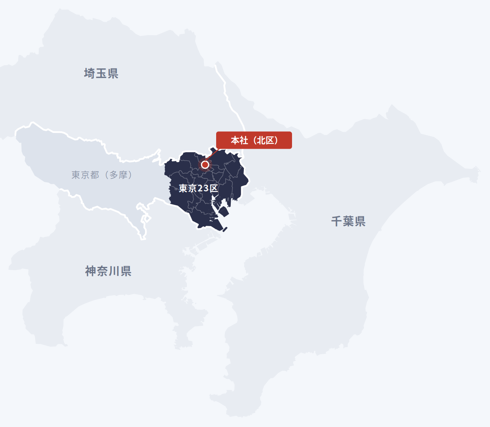
- 防災
- 東京都北区を拠点に、消防設備点検・改修は23区内を中心に承ります。23区外も、交通費・出張費を加算することで対応可能です
- メーカー
- メンテナンス事業は、東京23区に加えて東京都の多摩地域・埼玉県・神奈川県・千葉県で対応しています。対応範囲は、各メーカー様と取り決めたエリアです
- お墓
- お墓の見守り・清掃は、東京都北区を中心に23区内の寺院墓地・霊園・共同墓地へ伺います。23区外の墓地については、ご相談ください
- 講習
- エンディングノート講習の開催と出張講習は23区内です。遠方への出張講習は、交通費の実費でご相談いただけます
まずは、
ご相談を
お問い合わせ
点検で終わらせない、防災
消防設備点検・消火器点検が本業です。点検から点検票の作成、不良箇所の改修まで、消防設備士（全類）が一括で対応します。

消防設備点検は、法律で定められた義務であると同時に、建物を使う人の命を守る仕事です。上田では、消防設備士（全類）が、点検、報告書の作成、不備の改修までを一括で対応します。そのため、「指摘されたけれど、直し方が分からない」ということが起きません。
マンション、オフィス、店舗、工場、福祉施設など、さまざまな建物に対応しています。東京23区を中心に、規模を問わずご相談いただけます。点検は原則2名体制で伺い、結果は写真で記録します。
資格・体制
- 保有資格
- 消防設備士（全類）
- 点検体制
- 原則2名体制で実施。結果は写真で記録します
- 点検票
- 点検結果総括表・点検者一覧表を含む点検票の作成は、点検料金に含まれます
- 対応日
- 土曜日も対応可能です
- お見積り
- 無料（写真と根拠を添えてご提示します）
対応する点検・工事
定期点検から、見つかった不備の改修、テナント工事の消防対応まで。
消防設備点検
機器点検（6か月に1回）と総合点検（1年に1回）。点検票の作成と、報告期限のお知らせまで含みます。
消火器の点検・交換
1本から対応。製造年・使用期限を1本ずつ確認し、結果は写真付きでご報告。交換・回収までご提案します。
自動火災報知設備
受信機・感知器・発信機の作動確認。住戸内点検の告知・日程調整も、管理会社様と連携して進めます。
スプリンクラー・避難設備
ヘッド・配管・流水検知装置・消火ポンプの点検と、破損・漏水への対応。避難器具・誘導灯もあわせて確認します。
不良箇所の改修・整備
点検や立入検査で指摘された不備を、甲種消防設備士が改修。写真と根拠を添えたお見積りで、点検から改修まで完結します。
テナント工事の消防対応
感知器の移設・増設と、着工届の提出を一括で。着工届は着手の10日前までが期限のため、3週間前までのご相談をお願いしています。
このほかにも対応しています
- 改装・入居前の設備チェック
- 住宅用火災警報器の一括交換
- 民泊の開業前チェック
- ガス系消火設備の点検
- 立入検査の立会い・是正
- 消防訓練・防火管理のサポート
- 福祉施設の点検
- 飲食店・厨房の点検
- 点検会社様への応援（1日単位・土曜可）
建築基準法の定期報告や用途変更のご相談は、提携する一級建築士をご紹介します。現地調査への立会いや日程調整も承ります。
法定点検の周期
消防用設備等を設置している建物の関係者には、定期点検と消防署への報告が義務づけられています（消防法 第17条の3の3）。
- 機器点検
- 6か月に1回 — 設備の外観・機能を確認する点検
- 総合点検
- 1年に1回 — 設備を作動させ、総合的な機能を確認する点検
- 消防署への報告
- 飲食店・物販店・ホテルなど（特定防火対象物）は1年に1回／共同住宅・事務所・工場など（非特定防火対象物）は3年に1回
報告書の提出は建物の関係者様にお願いしておりますが、ご記入いただくのは表紙1枚だけです。詳しくは「点検結果報告書の提出のご案内」をご覧ください。
料金の目安
消火器点検・スポット10本まで・1回
16,500円〜
消火器点検・年間契約10本まで・年2回（1回あたり15,000円）
30,000円〜
消火器点検（11本目以降）1本につき
1,000円
消防用設備点検・年間契約小規模な共同住宅など・年2回（1回あたり15,000円〜）
30,000円〜
中・大規模の建物自動火災報知設備・スプリンクラー設備など
現地確認のうえお見積り
不良箇所の改修・消火器の交換
別途お見積り
料金例：消火器15本のスポット点検は、16,500円＋1,000円×5本＝21,500円〜です。点検料金には点検票（点検結果総括表・点検者一覧表を含む）の作成を含みます。金額は建物の用途・規模・点検内容により決まります。正式な金額はお見積りにてご案内します。
対応エリア
- 防災事業
- 東京23区内が中心です。本社（東京都北区）から近いエリアでお伺いすることで、急な指摘事項や再点検にも素早く対応します
- 23区外
- 交通費・出張費を加算することで対応可能です
このような方におすすめです
- 複数の物件を管理しており、消防点検の窓口を1社にまとめたい管理会社様
- テナントごとに点検業者が異なり、日程調整に手間がかかっているビルオーナー様
- 開業・改装にあわせて、消防設備の対応をまとめて任せたい店舗様・内装会社様
- 繁忙期に有資格者の応援が必要な点検会社様
ご依頼の流れ
- お問い合わせ建物の所在地・用途・規模をお知らせください。フォーム・LINE・お電話で承ります。
- お見積り設備の内容を確認し、お見積りをご提示します。必要に応じて現地を確認します。
- 点検の実施事前に日程を告知し、2名体制で点検します。結果は写真で記録します。
- 点検票のお渡し点検票をお渡しします。消防署への報告は建物の関係者様から行っていただきます（提出方法はご案内します）。
- 改修のご提案不良箇所があれば、写真と根拠を添えて改修をご提案します。
メーカーの現場を、支える
メーカー様・発注元様のご指定に基づき、各種設備の保守・点検・修理・一次対応を行います。
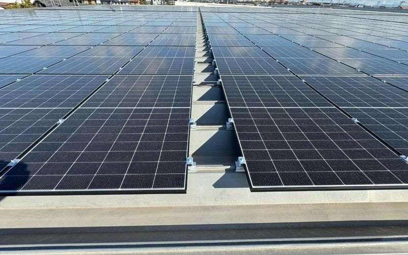
製品が現場で動き続けるためには、設置後の保守・点検が欠かせません。上田は、防災事業（消防設備の点検・改修）で培った点検と報告の進め方をもとに、メーカー様の現場業務を担います。
現場の状態は写真と記録で正確にお伝えし、手順に沿った均一な対応で、担当が替わっても品質がぶれない進め方をしています。
対応領域
メーカー様・発注元様からのご指定がある場合に対応しています。
宅配ボックス
設置・設定・修理・保守
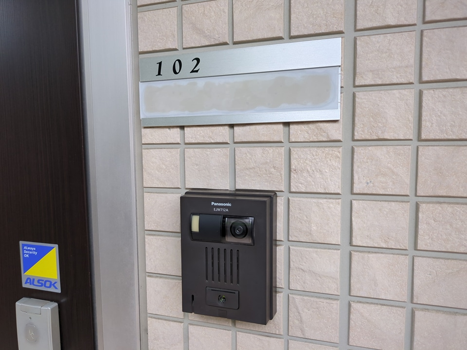
インターホン
点検・部品交換
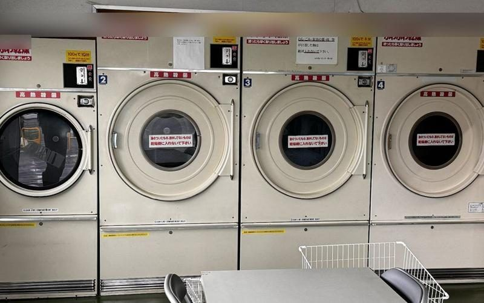
業務用ランドリー
洗濯機・乾燥機の修理・保守

EV充電器
保守点検

太陽光発電設備
竣工検査・年次点検
コーヒーサーバー
定期メンテナンス・保守
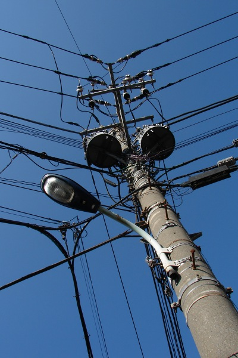
電柱
点検・調査
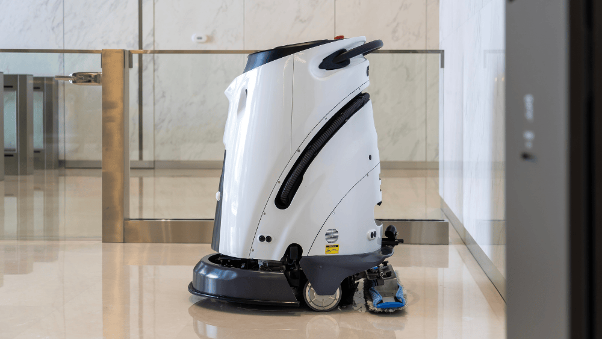
ロボット（清掃・配膳・介護）
一次対応・故障診断・メーカーへの取次
対応の考え方
写真と記録で報告
現場の状態は、写真と記録で正確にお伝えします。遠隔でも状況が分かる報告を心がけています。メーカー様の様式に合わせた報告も可能です。
手順に沿った均一な対応
点検・報告の型を決めているので、担当が替わっても対応の品質がぶれません。
取次まで一貫
現場で解決できない不具合は、切り分けをしたうえでメーカー様へ取り次ぎます。
点検で培った現場力
消防設備士（全類）を保有し、防災事業で「現場で確認し、報告書にまとめ、直すところまで担う」進め方を続けてきました。その型をメーカー様の現場業務に展開しています。
対応エリア・条件
- 対応エリア
- 東京23区に加えて、東京都の多摩地域・埼玉県・神奈川県・千葉県。対応範囲は、各メーカー様と取り決めたエリアです
- 単価・条件
- 対応範囲・単価・報告の形式は、対象製品と業務内容に応じて、開始前にすり合わせて決定します
- 開始方法
- エリア・件数を絞った試行対応から開始し、手順を固めてから本運用へ移行します
※ メーカー様・発注元様からのご指定がある場合のみ対応しています。一般のお客様・管理会社様からの、これらの設備に関するご依頼・お問い合わせは受け付けておりません。不具合の際は、各メーカー様の窓口へご連絡ください。対応エリアは対象製品・条件により異なります。
進め方
- お問い合わせ対象製品・エリア・想定件数をお聞かせください。
- 条件のすり合わせ対応範囲・単価・報告の形式を決めます。
- 試行対応エリア・件数を絞って開始し、手順を固めます。
- 本運用定期報告と請求の流れを定型化します。
よくあるご質問
メンテナンスに関するよくあるご質問は、よくある質問ページの「メンテナンス」欄にまとめています。
行けない日の、お墓参りを
お墓の見守りと清掃を代行します。作業の様子は写真でご報告します。
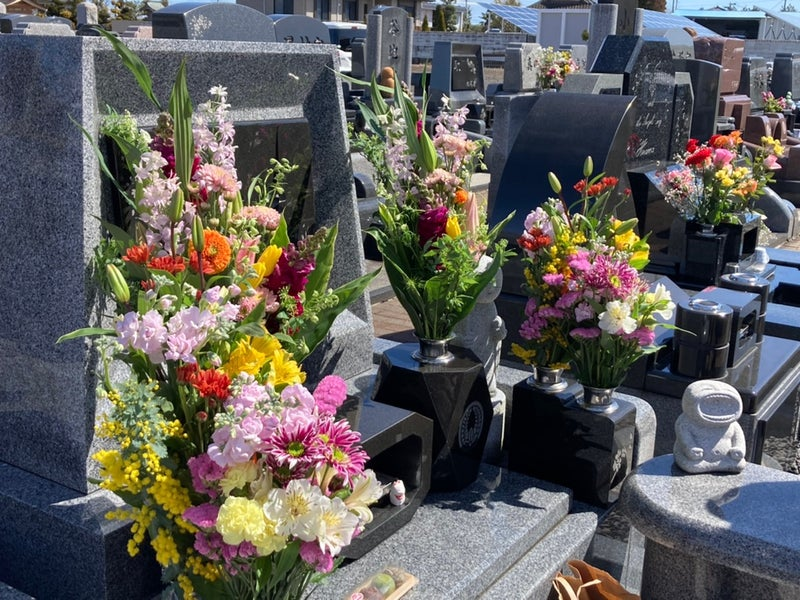
遠方にお墓がある、体調の都合で足を運べない——そんなときのために、お墓の見守りと清掃を行います。宗派を問わずご利用いただけます。
洗浄は、石材の性質に配慮した方法で行います。石の種類や状態に合わない洗い方は、かえって墓石を傷めることがあるため、状態を見てから進め方を決めます。
こんな方に
遠方にお住まいの方
お墓は都内でも、帰省は年に数回という方に。代わりに定期的に伺い、様子をお知らせします。
お墓参りが難しくなった方
足腰の不安や暑さ・寒さで、墓地へ行くことが負担になってきた方の代わりに、清掃とお参りをいたします。
お墓の状態が気になる方
傾きやひび、目地の傷み、雑草など、普段は見えない変化を確認し、写真と一言メモでご報告します。
サービスの内容
- 定期の見守り — 決まった時期に伺い、墓石と外柵の状態（傾き・ひび・目地・汚れ・雑草）を確認します
- 簡易清掃 — 落ち葉やゴミを取り除き、墓石まわりを拭き掃除します
- 写真でのご報告 — 作業前後の写真と、状態の一言メモをお送りします
- お参り代行 — 献花・線香を供え、合掌した様子も写真でご報告。供え方はご家庭の宗派・宗教に合わせます
- 本格クリーニング — 水あかやコケなどの汚れを、石を傷めない方法で洗浄します
補修・追加彫刻・耐震施工・墓じまいなど専門的な工事が必要な場合は、状態をご報告のうえ、別途お見積もりをご案内します。
料金
見守りプラン年2回訪問し、状態を確認・報告
45,000円〜 / 年
お参り代行清掃とお参りを1回単位で代行
8,000円〜 / 回
本格クリーニング石材に配慮した本格洗浄
20,000円〜 / 基
料金はすべて税別の目安です。お墓の場所・規模・状態により変わります。対応は東京23区内の寺院墓地・霊園・共同墓地が中心です。23区外の墓地についても、まずはご相談ください。
ご依頼の流れ
- ご相談お墓の所在地と、気になっている点をお知らせください。
- 現地確認・お見積もりお墓の状態を確認し、作業内容と費用をご提示します。
- 清掃・お参りの実施清掃とお参りを行い、花をお供えします。
- 写真でご報告作業前後の写真とあわせて、状態をご報告します。
よくあるご質問
お墓の見守り・清掃に関するよくあるご質問は、よくある質問ページの「お墓の見守り・清掃」欄にまとめています。
エンディングノート講習
「いつか書こう」を、「今日書けた」に変える90分です。
冠婚葬祭業界での経験を持つ講師が、エンディングノートの冊子を使いながら、無理のない書き方をお伝えします。講師はファイナンシャルプランナーの資格も持ち、お金の項目も含めて実務目線で解説します。
「何から書けばいいか分からない」という声に応える講習です。90分の中で、実際に手を動かしながら書き進めます。
100回
これまでの講演回数
1,500名
累計の参加者数
90分
講習時間
ノートに書くこと
書く内容は大きく6つ。全部を一度に書く必要はありません。講習では、どこから手をつけるかをお伝えします。
- 自分のこと
- 財産と契約のこと
- 医療・介護の希望
- 葬儀・お墓の希望
- デジタル情報のこと
- 大切な人への言葉
エンディングノート自体に法的な効力はありません。財産の分け方などを正式に残したい場合は遺言書が必要です。講習では、その違いと専門家への相談の進め方もご案内します。
講習で学べること
- エンディングノートと遺言書の違い
- 書く順番と、無理なく書き進めるコツ（最初は「所在の一覧」だけでも十分です）
- 家族に残すと助かる情報と、残し方に注意がいる情報（暗証番号の扱いなど）
- 書いたノートの保管場所と、見直しのタイミング
講習の中で、商品やサービスの営業は行いません。
開催のご案内
- 個人向け
- 不定期開催（最低参加者3名から）
- 団体向け
- 20名以上で承ります
- 講習時間
- 90分
- 資料代
- 1,500円（エンディングノートの冊子つき）
- 開催エリア
- 東京23区内。遠方への出張講習は、交通費の実費でご相談いただけます
- 講師
- 上田（冠婚葬祭業界出身）
- 持ち物
- 筆記用具のみ（ノートは資料代に含まれます）
個人向けは、お申し込みが3名に満たない場合は開催を見送り、個別にご連絡します。
よくあるご質問
エンディングノート講習に関するよくあるご質問は、よくある質問ページの「エンディングノート講習」欄にまとめています。
会社概要
現場を知る人間が、誠実に動く。東京都北区を拠点に、どの事業でも「現場に伺い、状態を確認し、報告する」進め方を大切にしています。
- 会社名
- 株式会社上田
- 代表者
- 上田聖子
- 所在地
- 東京都北区
- 事業内容
- 防災事業
メンテナンス事業
お墓見守り事業
エンディングノート事業
その他これらに関する一切の業務
対応エリア
- 防災
- 東京23区（23区外は交通費・出張費を加算して対応）
- メンテナンス
- 東京23区・多摩地域・埼玉県・神奈川県・千葉県（メーカー様との取り決めによる）
- お墓
- 東京23区内の寺院墓地・霊園・共同墓地（23区外はご相談ください）
- 講習
- 東京23区内（遠方への出張講習は交通費実費でご相談可）
保有資格
現場業務に関わる資格を、事業横断で保有しています。
- 消防設備士（全類）
- 第二種電気工事士
- 第一種電気工事士（試験合格）
- 低圧電気取扱者
- フルハーネス特別教育
- フォークリフト運転技能講習
- 特定化学物質作業主任者
- 有機溶剤作業主任者
- 有機溶剤インストラクター
- 第一種衛生管理者
- 安全管理者
- 危険物取扱者 乙種第4類
- 二等無人航空機操縦士
- FP技能士
- 遺品整理士
事業概要
まずは、ご相談を
点検の時期が分からない、見積もりだけでも見たい。そんな段階からで構いません。
ご相談は、下のフォームまたは公式LINEから承ります（24時間受付・翌営業日対応）。内容が文章で残る形でのご相談にご協力ください。お急ぎの場合のお電話は、このページの下部に記載しています。
お問い合わせフォーム
種別を選んで送信いただくと、担当までスムーズに届きます。送信先は現行サイトのフォームと同じ受付です。
送信しました
お問い合わせありがとうございます。内容を確認のうえ、翌営業日を目安に、ご入力いただいたメールアドレスへご連絡します。
種別で「お墓参り・お墓の見守りのご相談」「エンディングノート講習のご相談」を選ぶと、「貴社名」欄は表示されません。営業目的でのご連絡はお断りいたします。事業のご相談・協力会社登録・メーカー様からのご依頼のみ承ります。
ご不明な点は「よくある質問」もご覧ください。個人情報の取り扱いは「プライバシーポリシー」に定めています。
公式LINEでも相談できます
コラム
このカテゴリの記事はまだありません。
お彼岸とお盆の前に――見守りで確認しておきたいこと
お彼岸やお盆の前に伺い、墓石と外柵の状態を確認して写真でご報告します。
記事を読む宗派に合わせたお供えの考え方――お参り代行の進め方
供え方はご家庭の宗派・宗教に合わせます。宗派を問わずご利用いただけます。
記事を読む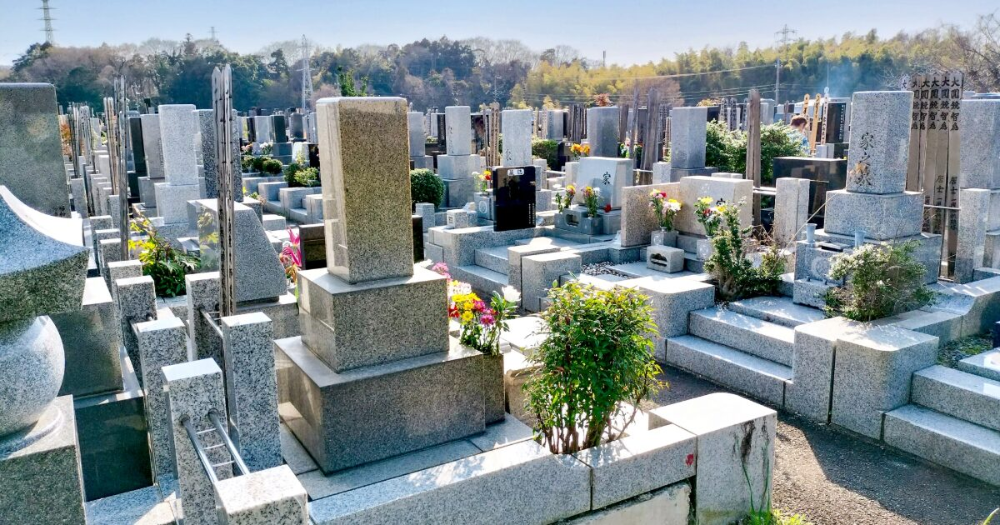
見守り・お参り代行・本格クリーニング――3つの料金の違い
年2回の見守り、1回単位のお参り代行、1基単位の本格クリーニング。目的で選びます。
記事を読む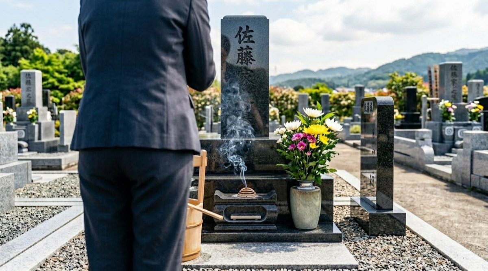
初めて頼むときの流れ――ご相談から写真報告まで
ご相談、現地確認・お見積もり、清掃・お参りの実施、写真でご報告の4つの手順です。
記事を読む墓石の傾き・ひび・目地は、なぜ確認するのか
普段は見えない変化を確認し、写真と一言メモでご報告します。
記事を読む落ち葉と雑草――季節で変わるお墓まわりの手入れ
簡易清掃では、落ち葉やゴミを取り除き、墓石まわりを拭き掃除します。
記事を読む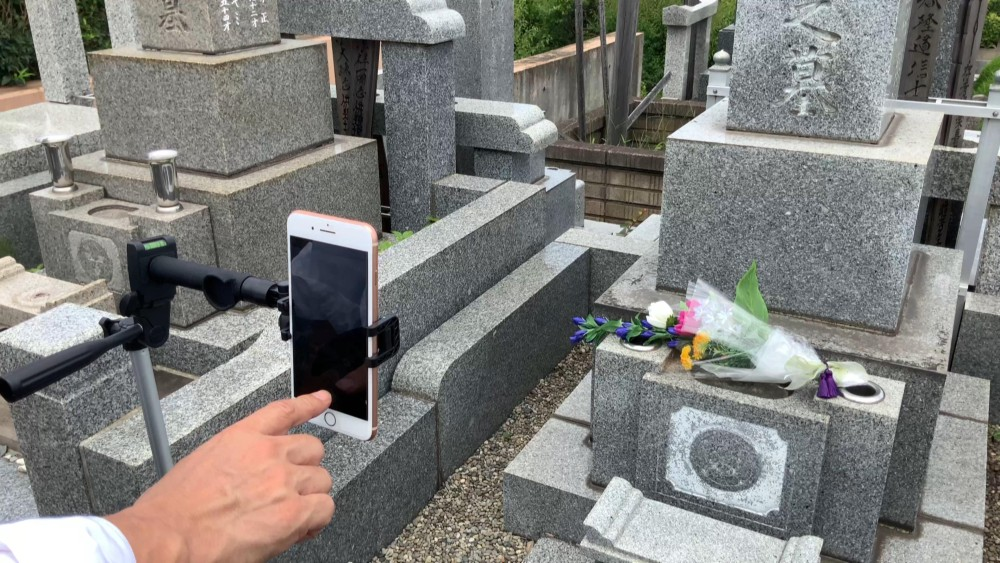
写真報告で何が分かるのか――報告の中身
作業前後の写真と、状態の一言メモをお送りします。
記事を読む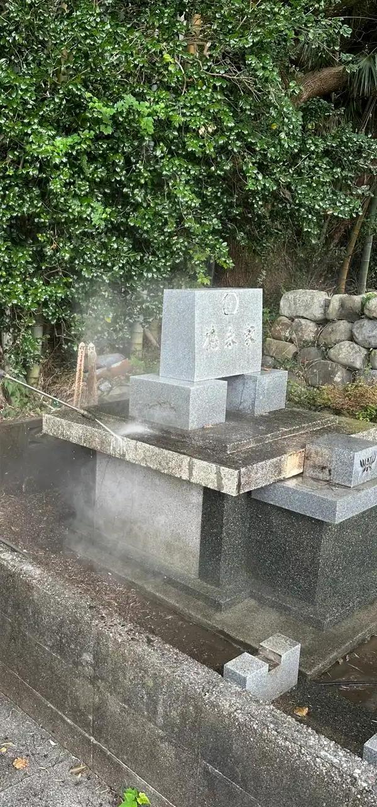
水あかとコケ――本格クリーニングで対応する汚れ
水あかやコケなどの汚れを、石を傷めない方法で洗浄します。
記事を読む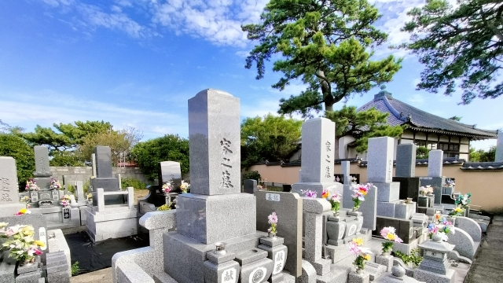
東京23区のお墓が中心です――対応エリアと墓地の種類
東京23区内の寺院墓地・霊園・共同墓地が中心。23区外もご相談ください。
記事を読む補修や墓じまいが必要なとき――専門工事のご案内方法
専門的な工事が必要な場合は、状態をご報告のうえ、別途お見積もりをご案内します。
記事を読む財産と契約の「所在の一覧」の作り方
預金や保険、契約の所在を一覧に。最初はこれだけでも十分です。
記事を読むデジタル情報はどこまで書くか――暗証番号の扱い
家族に残すと助かる情報と、残し方に注意がいる情報を分けて考えます。
記事を読む医療・介護の希望を書いておく意味
自分の希望を書き残しておくと、残された家族の判断材料になります。
記事を読む葬儀とお墓の希望を残すときの書き方
葬儀・お墓の希望も、ノートに書く6つの内容のひとつです。
記事を読む書いたノートはどこにしまうか――保管場所と見直しのタイミング
保管場所を決め、節目ごとに見直します。
記事を読む家族にどう伝えるか――ノートを書いたことを知らせる
保管場所を決めたら、その存在を家族に知らせておきます。
記事を読む大切な人への言葉は、短くても残せる
書く内容の6つ目。長文でなくても、言葉として残せます。
記事を読む団体向け講習の進め方――20名以上での開催
団体向けは20名以上で承ります。講習時間は90分、資料代は冊子つき1,500円です。
記事を読む個人向け講習は3名から――少人数で書き進める90分
個人向けは不定期開催で、最低参加者3名から。持ち物は筆記用具のみです。
記事を読む講習で営業はしません――法律に関わる相談は専門家へ
講習はノートの書き方の案内まで。相続や遺言の個別相談は専門家をご案内します。
記事を読む遠方のお墓も、写真で様子が分かる――見守りで確認していること
遠方にお墓がある方のために、決まった時期に伺って墓石と外柵の状態を確認し、写真でご報告します。
記事を読む墓石の汚れ、洗い方で傷めることも――石に配慮した清掃の考え方
洗浄は、石材の性質に配慮した方法で行います。石の種類や状態に合わない洗い方は、かえって墓石を傷めることがあります。
記事を読むエンディングノートに法的効力はあるのか――遺言書との違い
エンディングノート自体に法的な効力はありません。財産の分け方などを正式に残したい場合は遺言書が必要です。
記事を読む何から書けばいいか分からない方へ――エンディングノートの書き始め方
書く内容は大きく6つ。全部を一度に書く必要はなく、最初は「所在の一覧」だけでも十分です。
記事を読む講習は90分、冊子つき――エンディングノート講習の進め方
冠婚葬祭業界での経験を持つ講師が、冊子を使いながら90分で実際に書き進める講習です。
記事を読む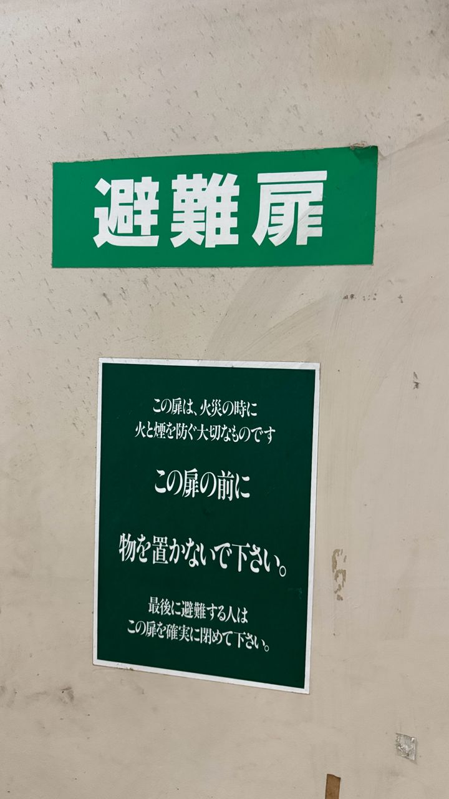
避難器具の点検で見るポイント――避難はしご・救助袋・緩降機の収納と接近しやすさ
避難器具には避難はしご、救助袋、緩降機があります。
記事を読む立入検査で指摘を受けたら――立入検査結果通知書の読み方と改修（計画）報告書の出し方
消防法第4条に基づく立入検査で不備が見つかると、その内容は「立入検査結果通知書」で知らされます。
記事を読む消防設備点検資格者と消防設備士の違い――点検だけできる資格と工事・整備もできる資格
消防設備の点検を行う資格には、消防設備士と消防設備点検資格者があります。消防設備士は工事や整備もできる国家資格です。
記事を読む
共同住宅の消防設備点検――共用部と専有部で違う範囲と立会いの調整
共同住宅の消防設備点検は、共用部と専有部で範囲が分かれます。共用部では廊下や階段の消火器や誘導灯、受信機などを点検します。
記事を読む
点検で指摘された不良、是正工事の優先順位はどう決めるか――人命・法令・予算の考え方
点検で見つかった不良の是正工事は、すべてを一度に直すのではなく優先順位を付けて進めます。
記事を読む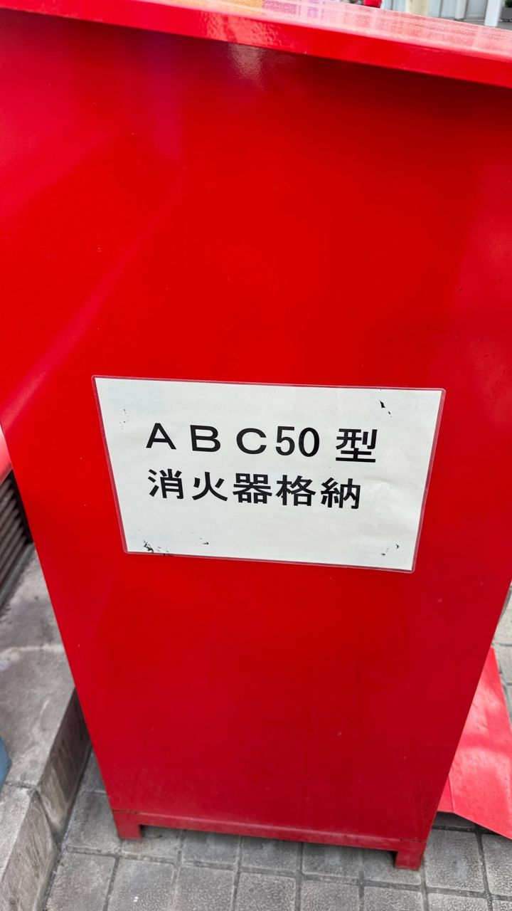
消火器の耐圧性能点検――製造から10年目の水圧試験と表示の見方
製造から10年を経過した消火器は、本体容器の耐圧性能点検（水圧試験）が必要です。
記事を読む感知器の種類と使い分け――煙式・熱式・炎式の設置場所の考え方
感知器は火災の熱や煙、炎をとらえる場所に合わせて種類が決まります。
記事を読むスプリンクラー設備の末端試験弁――放水試験で圧力と作動を確認するポイント
スプリンクラー設備の末端試験弁は、配管の末端に設けられた放水用の弁です。
記事を読む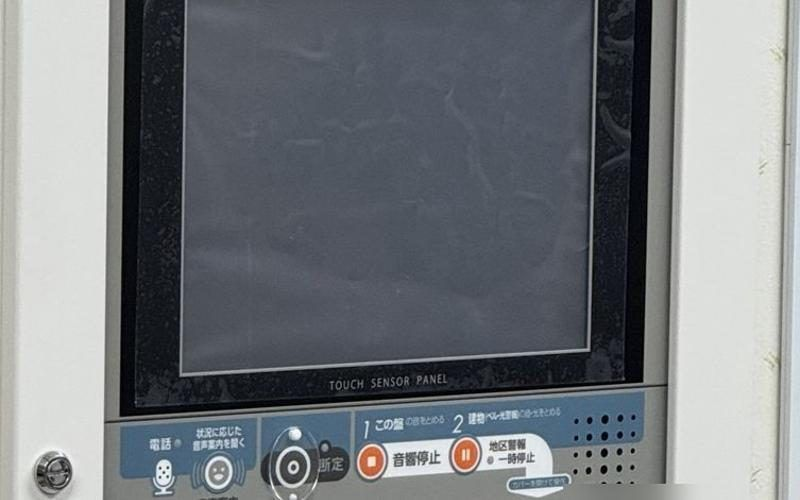
総合点検の連動試験――感知器から受信機・非常放送までの作動を確かめる流れ
総合点検では感知器を実際に作動させ、受信機の火災表示、地区音響装置の鳴動、非常放送、防火戸や防火シャッターの閉鎖まで、一連の連動を確認します。
記事を読む点検業者の見積りを比べるときのチェックポイント――項目の抜けと単価の見方
点検業者の見積りを比べるときは、総額だけでなく内訳を見ます。
記事を読む福祉施設・グループホームで求められる消防設備の上乗せ要件――スプリンクラー設備の設置基準を中心に
福祉施設では、入所者が自力で避難しにくいことを前提に、一般の建物より厳しい消防設備の基準がかかります。
記事を読む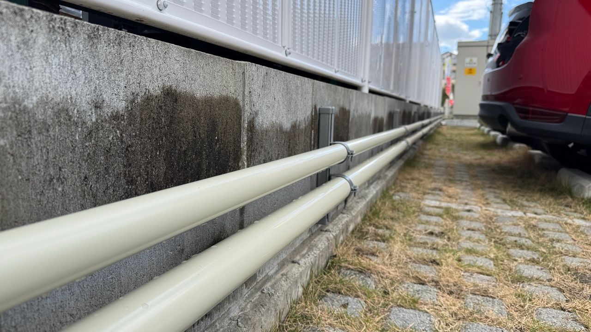
着工届が必要な工事と不要な工事の境目――軽微な工事でも設置届は必要
消防用設備等の工事をするときは、工事に着手する日の10日前までに消防署へ着工届を出す必要があります（消防法第17条の14）。
記事を読む非常用照明と誘導灯の違い――停電時の役割分担と点灯時間の目安
非常用照明と誘導灯は、どちらも停電時に働く防災のあかりですが、役割と根拠法令が違います。
記事を読む消防設備士の講習は初回2年以内・以後5年ごと――受講期限の数え方
消防設備士の免状に有効期限はありませんが、定期的な講習の受講が義務付けられています（消防法第17条の10）。
記事を読む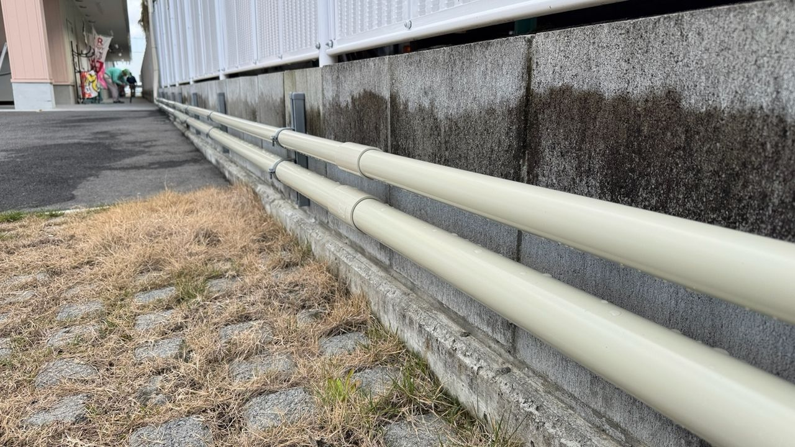
消防設備の改修工事で工期が延びる3つの理由――部品納期・立会い調整・届出手続き
消防設備の改修工事は、見積りどおりの日程で終わるとは限りません。
記事を読む消火器の設置場所の決まり――歩行距離20mと見やすい表示
消火器は、建物の各部分から消火器までの歩行距離が20m以下（大型消火器は30m以下）になるよう、各階に配置することが消防法施行規則で定められています。
記事を読む感知器が誤作動するときの原因の切り分け――煙・ほこり・結露・虫の見分け方
感知器の誤作動は、調理やたばこの煙、工事の粉じん、感知器の内部に入った小さな虫や結露など、火災以外の原因で起きることがあります。
記事を読む
屋内消火栓ホースの耐圧試験――製造から10年で始まる点検と交換の考え方
屋内消火栓などの消防用ホースは、製造年の末日から10年を経過した日以降に行う点検で耐圧性能の点検を行い、異常がなければその後は3年以内ごとに続けます。
記事を読む点検結果の報告期限を物件ごとに管理する方法――特定1年・非特定3年の違い
消防用設備等の点検結果の報告は、特定防火対象物は1年に1回、非特定防火対象物は3年に1回と、建物の用途で周期が決まっています（消防法施行規則第31条の6）。
記事を読む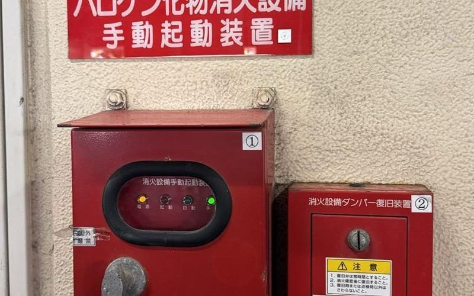
パッケージ型消火設備の点検と管理――小さな区画の消火設備で押さえるポイント
パッケージ型消火設備は、火災の検知と消火剤の放出の機能をひとつの装置にまとめた消火設備で、電気室や厨房など小さな区画の消火に使われます。
記事を読む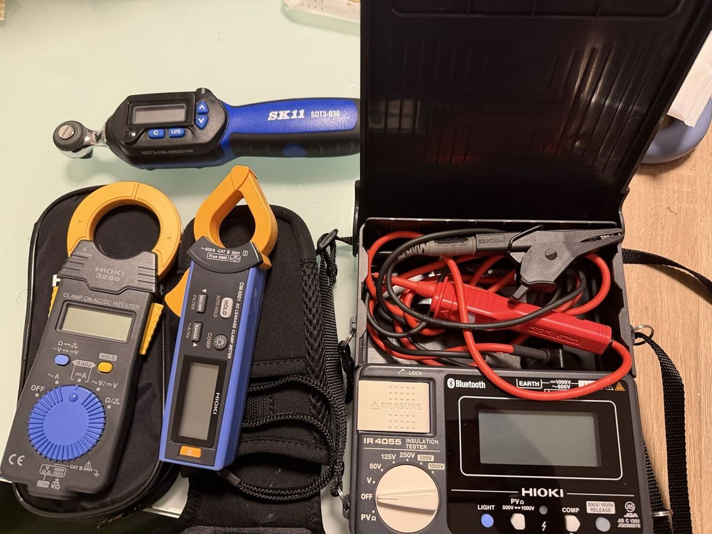
点検票の「不良」判定はどう決まるか――その場で直せるものと改修見積りになるものの境目
消防設備点検の結果は、設備ごとに定められた点検基準に照らして点検票へ「良」「不良」で記録されます。
記事を読む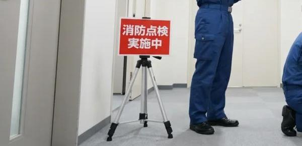
消防署の立入検査の流れ――当日に見られる場所と、事前に整えておく書類
立入検査は消防法第4条に基づき、消防職員が防火対象物の位置・構造・設備や管理の状況を確認するものです。
記事を読む消防設備士の甲種と乙種は何が違うか――工事・整備・点検でできることの違い
消防設備士の免状には甲種と乙種があり、甲種は担当する類の設備について工事・整備・点検のすべてを行うことができますが、乙種ができるのは整備と点検のみで、工事は行えません。
記事を読む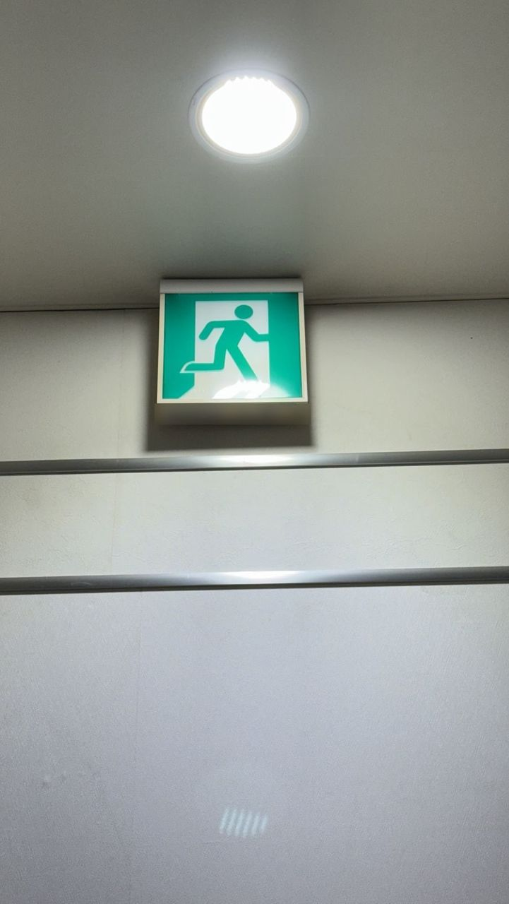
誘導灯が停電時に点かないときの確認順序――バッテリー交換の目安も
停電時に誘導灯が点かない場合、まず器具のモニタ（充電表示）の状態と点検スイッチによる点灯確認、次に分電盤など常用電源側の異常、蓄電池のコネクタの緩みや膨らみを順に切り分けます。
記事を読む民泊（住宅宿泊事業）を始める前に――消防設備のチェックポイント
住宅で民泊（住宅宿泊事業）を始めるには、住宅宿泊事業の届出の際に消防法令適合通知書の提出が求められます。
記事を読むスプリンクラー設備の更新目安と特需の背景――2026年以降に増加する交換需要の仕組み
スプリンクラー設備の標準的な耐用年数は約20年とされており、1980〜90年代に設置された建物では更新時期が集中する「スプリンクラー特需」が起きています。
記事を読むスプリンクラーヘッドの標準耐用年数20年――交換が必要なサインと定期点検で確認すべき3項目
スプリンクラーヘッドの耐用年数は、NFPA規格・国内消防法の運用基準ともに製造から20年が目安です。
記事を読むスプリンクラー配管の更新費用相場――築20年超のビル・マンションで管理会社が把握すべきコスト感
スプリンクラー配管の更新費用は建物規模・工法・配管材料によって大きく異なりますが、一般的なマンション（10階建て・50戸）では総工費1,500〜3,000万円程度が目安です。
記事を読むスプリンクラー設備の老朽化診断チェックリスト――管理会社が自ら点検前に実施できる10項目
専門業者による定期点検の前に、管理会社が自ら実施できる老朽化診断チェックリストを10項目にまとめました。
記事を読む乾式・湿式・予作動式スプリンクラーの違い――設置環境と凍結リスクで選ぶ3つの方式
スプリンクラー設備は配管内の媒体と動作方式によって湿式・乾式・予作動式の3種に分けられます。
記事を読むスプリンクラー制御弁・流水検知装置の更新目安15〜20年――管理会社が気づきにくい劣化ポイント
スプリンクラーのヘッドや配管に比べ、制御弁と流水検知装置（アラームバルブ・乾式弁など）の更新目安は意識されにくい傾向があります。
記事を読むスプリンクラー設備の更新で使える補助金・助成金――中小ビルオーナーが申請できる制度まとめ
スプリンクラー設備の更新には高額な費用がかかりますが、建物用途・自治体・法令要件によっては補助金・助成金の活用が可能です。
記事を読むスプリンクラー特需に対応できる業者の選び方――過去実績・保有資格・アフターフォロー3つの確認ポイント
スプリンクラー特需が高まる中、施工実績のない業者への発注リスクが高まっています。
記事を読むスプリンクラー設備の消防検査と更新工事の段取り――着工前に済ませるべき手続きと工期の目安
スプリンクラー設備の更新工事は、着工前に消防署への設置届・工事計画書の提出が必要です。
記事を読むスプリンクラー設備の更新を先送りするリスク――耐用年数超過で起きる3つの問題と早期対応のメリット
スプリンクラー設備の更新を先送りすることで生じるリスクは①消防点検で不合格指摘を受け是正期限内の高コスト工事を強いられる、②老朽化による誤作動・非作動で水損事故や火災被害が拡大する、③工事費が割高になる「急ぎ発注」コストの発生、の3点です。
記事を読む煙感知器の10年更新目安、設置年が不明な管理物件でありがちな確認ミスと対応法
煙感知器（光電式スポット型）は設置から10年が更新目安とされていますが、管理台帳に設置年が記載されていない物件では更新時期を見落としがちです。
記事を読む発信機・地区音響装置は20年が更新目安――見落とされがちな長寿命機器の劣化サイン3つ
発信機（押しボタン式）と地区音響装置（ベル・ブザー）は比較的壊れにくいため更新が後回しになりがちですが、設置から20年を超えると内部部品の経年劣化が進みます。
記事を読む自動火災報知設備の「内蔵蓄電池」3〜5年交換、感知器・発信機の電池切れを防ぐ管理ポイント
自動火災報知設備の受信機・中継器には停電対応用の内蔵蓄電池が搭載されており、メーカー推奨の交換周期は3〜5年です。
記事を読む消火器「製造後10年」の水圧検査義務、管理台帳に製造年が記載されていない場合の対応手順
加圧式・蓄圧式を問わず、消火器は製造後10年（蓄圧式は製造後5年）経過した時点で耐圧性能検査（水圧試験）が義務付けられています。
記事を読むP型受信機15〜20年 vs R型受信機15年――更新時に「型式切り替え」を検討すべき判断基準
自動火災報知設備の受信機はP型で15〜20年、R型で15年程度が更新目安です。
記事を読む特定小規模施設用の無線式自火報、設置対象拡大（民泊・共同住宅）に管理会社が今から準備すべきこと
2023年以降の法令改正で無線式自動火災報知設備の設置対象が民泊施設・小規模共同住宅にも拡大されました。
記事を読む消防設備の更新年を「物件台帳」に組み込む方法――10年スパンで修繕費を平準化する計画術
消防設備の更新費用は「まとめて更新すると高額」「毎年少額が発生する」という二極化が起きがちです。
記事を読む同一物件の消防設備を一括更新して費用を抑えた管理会社の事例
築25年のマンション管理を受託した管理会社が、個別更新で発生していた足場・養生の重複コストを解消するため、受信機・感知器・発信機・非常放送設備を同時更新した事例を紹介します。
記事を読む設置から何年経過？消防設備の設置年度が不明な場合の調査方法と消防署への確認手順
中古物件の取得や管理会社の切り替え時に、既存消防設備の設置年度が不明なケースがあります。
記事を読む消防署の指摘票を受け取る前に動く――消防設備の「更新予防チェックリスト」実践版
消防署の立入検査で指摘票を受け取ってから動き始めると、改修期限までの時間が短く費用も割高になりがちです。
記事を読む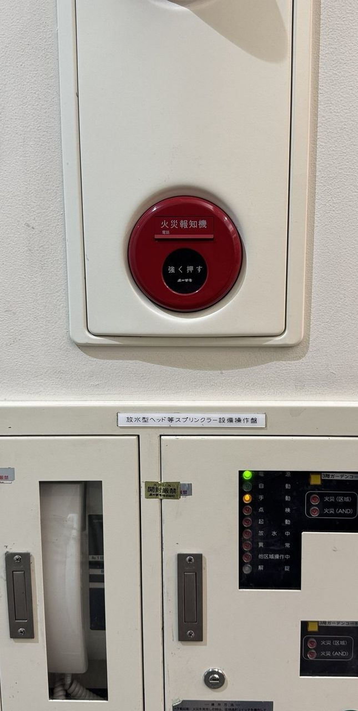
「放水型ヘッド等スプリンクラー設備操作盤」とは何か――発信機と一体になった複合設備の仕組みと点検時の確認項目
放水型スプリンクラー設備には、通常の閉鎖型と異なり「操作盤」が必要です。
記事を読む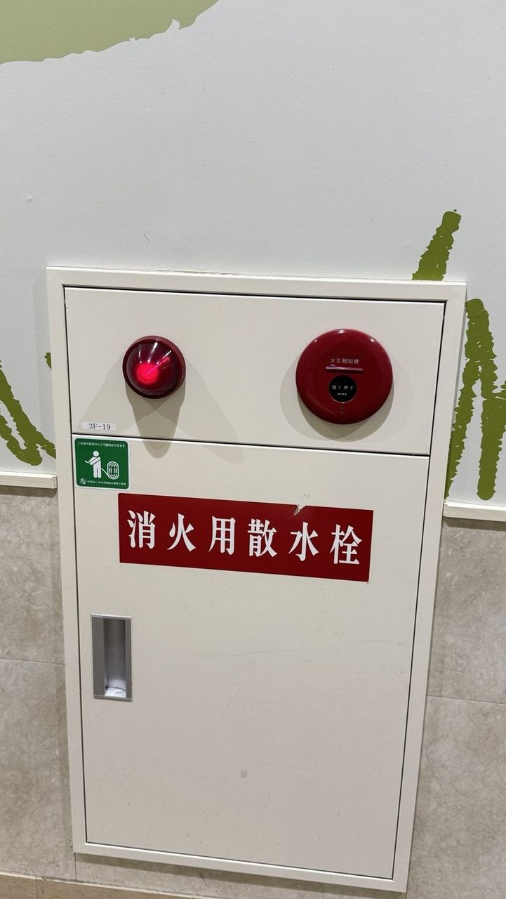
「消火用散水栓」とスプリンクラーヘッドは何が違う？設置場所・用途・点検区分をわかりやすく解説
「消火用散水栓」はスプリンクラー設備の一種ですが、自動放水するヘッドとは用途が異なります。
記事を読む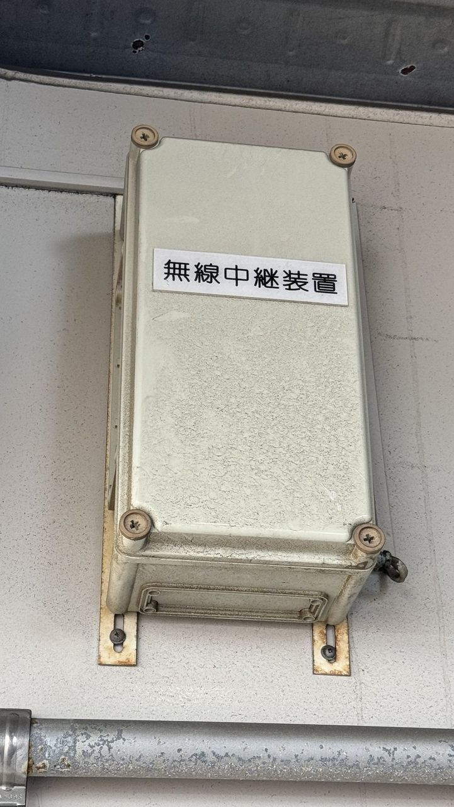
無線式自動火災報知設備の「中継装置」とは何か――設置場所と定期点検で確認すべき3つのポイント
無線式自動火災報知設備は、感知器と受信機の間に「中継装置（無線中継器）」を設けて信号を確実に届ける仕組みです。
記事を読む
天井裏設備の腐食は「見えない老朽化」――鉄骨・配管・ケーブルラックを定期点検で早期発見する方法
天井内部の鉄骨架台・ケーブルラック・消防設備配管は日常目視が難しく、腐食や結露による劣化が気づかないまま進行しやすい場所です。
記事を読む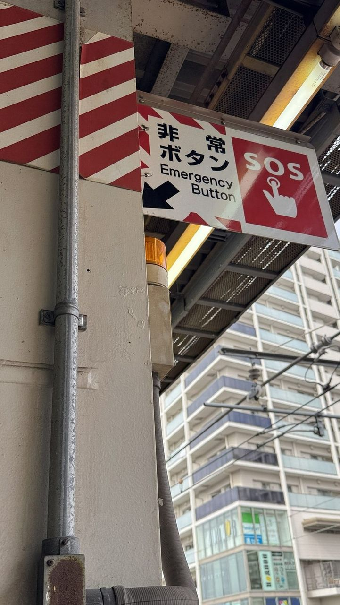
「SOS非常ボタン」と消防設備の発信機はどう違う？管理者が知っておくべき非常用設備の種類と点検区分
「非常ボタン（SOS）」は転落・危険を知らせる安全設備であり、消防法に基づく自動火災報知設備の「発信機」とは別の設備です。
記事を読む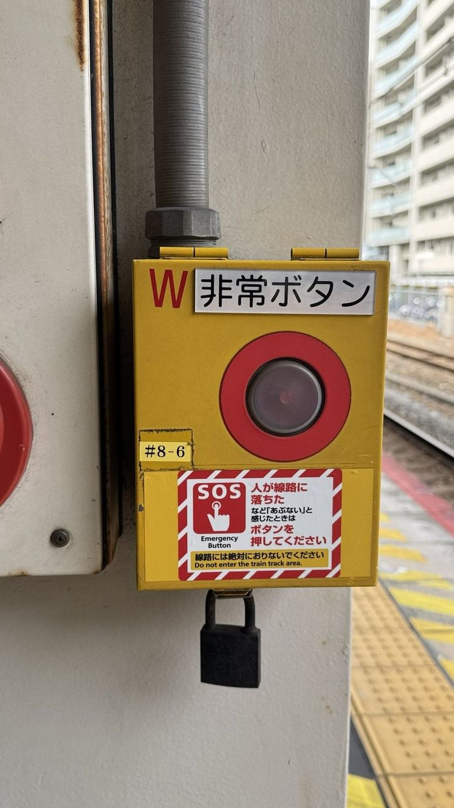
設備に「番号管理」を導入するだけで点検漏れが減る――機器台帳と現場標識を連動させる管理手法
設備の種類・設置場所・識別番号を台帳と現場標識で一致させると、定期点検の漏れ防止と部品手配の効率化が同時に実現できます。
記事を読む
発信機の「確認灯（赤ランプ）」が示す意味――点灯パターンで読み取る火災報知設備の状態と点検時の確認手順
自動火災報知設備の発信機には「確認灯（赤色表示灯）」が設けられており、受信機が火災信号を受け取った状態で点灯します。
記事を読む年末の消防設備点検に備える11月の準備リスト――特定防火対象物と非特定の違いから点検周期まで整理
消防設備の定期点検は建物用途によって「特定防火対象物（年2回）」と「非特定防火対象物（年1回）」に分かれます。
記事を読む受水槽・高架水槽の清掃点検で管理者が押さえるべき3つのポイント
マンションや商業ビルの給水設備として欠かせない受水槽・高架水槽は、有効容量10m³を超えるもの（簡易専用水道）について、水道法により年1回の清掃と定期検査が義務付けられています。
記事を読む管理会社のための年間設備保守計画、予算策定と発注スケジュールの立て方
設備保守を場当たり的に依頼している管理会社ほど、緊急対応コストが膨らむ傾向があります。
記事を読む自動火災報知設備（自火報）の点検で管理者が押さえる3つの確認項目
自動火災報知設備は感知器・発信機・受信機・音響装置で構成される法定設備で、半年ごとの点検が義務です。
記事を読む
電気室・機械室の消火器点検で確認すべき3つのポイント
電気室や機械室は高電圧環境・熱源が集中する特殊な環境のため、消火器の選定基準が一般居室と異なります。
記事を読む
非常放送設備の定期点検で外せない確認項目と代表的な不具合事例
非常放送設備は火災時の避難誘導を担う法定設備で、点検の核心は①スピーカーの鳴動確認（全フロア）②増幅器の電源・動作試験③自動起動回路と手動起動の両方向チェックの3点です。
記事を読むマンション駐車場へのEV充電器設置、管理組合への提案と合意形成のポイント
管理組合への提案で合意を得るには①設置・電気工事費用の総額と負担方法②月々の電気料金配分ルール③利用資格と予約管理方法の3点を議案書に明記することが近道です。
記事を読む消防設備の総合点検と機器点検、それぞれ何をどう確認するか
消防法は半年ごとの機器点検と年1回の総合点検を義務付けています。
記事を読む
宅配BOX設置後の「初期不具合」に多い原因TOP5
新設直後の不具合TOP5は①扉ラッチの調整不足（開閉不良）②通信モジュールの設定ミス（通知が届かない）③暗証番号システムの初期化忘れ④配線・電源コネクタの接触不良⑤防水処理の甘さによる結露です。
記事を読む
EV充電器の種類（普通充電・急速充電）と保守の違い
普通充電（一般に3〜6kW程度）は設置コストが低く居住用に向いていますが、急速充電（数十kW級）は商業施設向けで、設備費・保守費ともに高くなりやすい設備です。
記事を読むコインランドリーの排水詰まり、現場で見る原因と対処法
排水詰まりの主な原因は①糸くずフィルターの清掃不足②衣類からの異物混入（コイン・紙類など）③排水管内の油脂・洗剤カスの蓄積の3つです。
記事を読む消防設備点検の「特例認定」とは何か？管理会社が知っておくべき制度
特例認定は、防火対象物定期点検報告制度の対象となる建物が、防火管理を適正に行っているとして消防長（消防署長）の認定を受けると、3年間その点検・報告が免除される制度です（消防法第8条の2の3）。
記事を読む
宅配BOXのメーカー別保守対応比較と選び方のポイント
メーカー選定で見るべき3点は①部品供給期間（最低10年以上が目安）②修理対応エリアと到着時間（地方物件は要注意）③コールセンターの対応時間（夜間・土日対応か）です。
記事を読む
首都圏の設備保守需要が高まっている3つの背景
首都圏の設備保守需要が拡大している背景は3つ①築年数の進んだマンションの増加による設備更新②EV充電設備・宅配BOXなど新しい設備の普及③熟練技術者の高齢化による対応業者不足です。
記事を読むフィールドサービス会社を選ぶ際の「隠れたコスト」を見抜く方法
見積金額が安く見えても別途発生しやすい費用は①出張費・交通費②部品代の扱い（定価か、手数料が上乗せされるか）③夜間・休日割増料金④報告書作成費の4つです。
記事を読む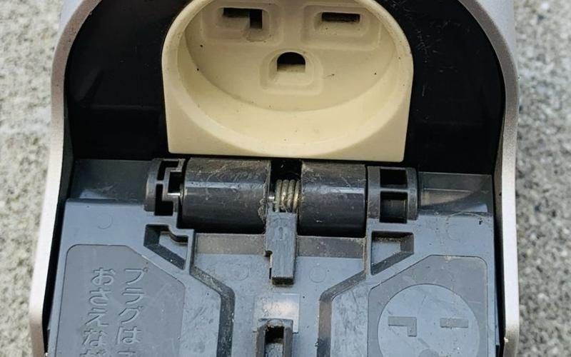
EV充電器設置時に見落としがちな「電気容量」の確認ポイント
設置前に必ず確認すべき3項目は①電力会社との契約容量（不足なら電力申請が必要）②既存幹線のサイズと余裕（増設工事の要否を判断）③配電盤の空きブレーカー数です。
記事を読むコインランドリーの洗剤投入口トラブル、対処と予防の実践法
洗剤投入口の詰まり・液漏れの主な原因は①粉末洗剤の固化（湿気による）②柔軟剤の残留・蓄積③使用禁止洗剤の投入の3つです。
記事を読む消防設備の「自主点検」と「法定点検」の違いと注意点
法定点検は、一定規模以上の建物では消防設備士または消防設備点検資格者が実施し、結果を消防署に報告する義務があります。
記事を読む宅配BOXの暗証番号リセット対応、管理会社がすべき手順
暗証番号リセット対応で整備すべき3つは①マスターコードを担当者全員が参照できる安全な場所に保管②リセット手順をメーカー別にマニュアル化（設置時に取扱説明書を必ず保管）③夜間対応の可否と連絡先を入居者に事前周知することです。
記事を読むマンションのエントランス設備リニューアルを検討するタイミング
オートロック・インターホン・宅配BOX・防犯カメラは、設置時期が近いため老朽化の時期も重なりやすい設備です。
記事を読むフィールドサービスの「対応スピード」を数値化する方法
「早い」は主観的で業者比較に使えません。
記事を読む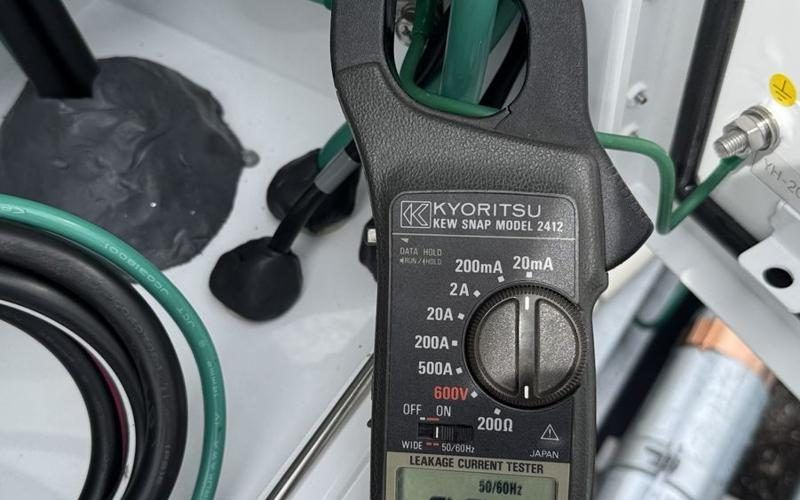
EV充電器の故障パターンと応急対応フロー
EV充電器のトラブル大半は①充電が開始できない（認証失敗・通信障害）②途中で停止する（過電流・コネクタ不良）③エラーコード表示（機器固有の故障）の3パターンです。
記事を読む
コインランドリーの売上分析と保守コストの適正化
収益性の判断に使うべき3指標は①月次稼働率（機器稼働時間÷営業時間）②修繕費率（修繕費÷売上の比率）③機器別の故障頻度です。
記事を読む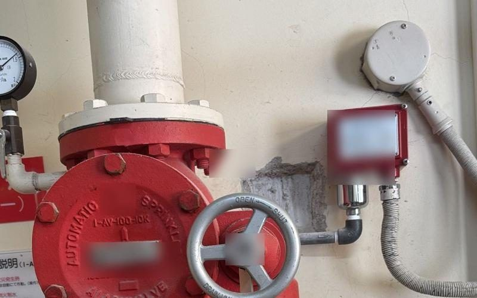
消防設備の「不備指摘」を受けたときの対応ステップ
不備指摘を受けたら放置は絶対NGで、消防署からの指導・命令に発展します。
記事を読む宅配BOXの満杯通知機能、導入前に確認すべき仕様
満杯通知方式は①メール通知（管理者へ）②アプリ通知（入居者・管理者）③管理システム連携の3種類があり、それぞれ通知精度と費用が異なります。
記事を読む管理会社が「夜間緊急対応」を外部委託するメリットとリスク
外部委託のメリットは①夜間・休日の人員確保コスト削減②対応可能な技術範囲の拡大③担当者の精神的負担軽減の3点です。
記事を読む設備保守の見積書、どこを比較すべきか？項目別チェックリスト
見積書の比較で見落としやすい5項目は①部品代の扱い（込み or 別途）②緊急出動費（発生条件と単価）③夜間・休日割増料金④消費税の計上方法⑤報告書作成費です。
記事を読むEV充電器の利用ログ管理と入居者トラブル対応
利用ログが必要になる場面は①充電し忘れによるコネクタ占有トラブル②利用料金の二重請求疑惑③無断利用の特定の3つです。
記事を読む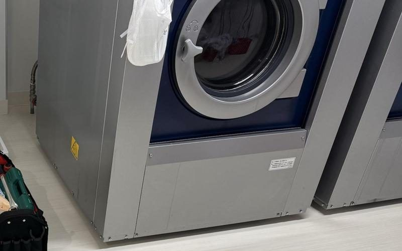
コインランドリーの機器更新、タイミングと費用の目安
更新の検討タイミングは①メーカーの保守部品の供給期間が終わりに近づいたとき②年間の修繕費が増え続けているとき③同じ箇所の故障を繰り返すとき、のいずれかが当てはまったときです。
記事を読む消防設備点検報告書の「不備なし」が意味すること
「不備なし（良）」は点検当日の動作確認が合格だったことを示すにすぎず、翌日に球切れや電池切れが起きても報告書は「良」のままです。
記事を読む宅配BOX導入で入居率はどう変わるか？現場データから考える
宅配BOXは、単身・共働き世帯を中心に、物件選びで重視されやすい設備の一つです。
記事を読むフィールドサービスのKPI設定、「何を測るか」で品質が変わる
件数・時間だけでは品質の本質が見えません。
記事を読む設備保守の「一括契約」と「個別契約」、どちらがコスパが良いか
一括契約のメリットは①管理窓口の一元化（緊急時の連絡先が1社）②まとめ発注による割引③緊急時の優先対応です。
記事を読むEV充電器のトラブル対応で損害賠償になるケースとは
損害賠償リスクが高いのは①過電流・発火で車両を損傷させたケース②警告表示を放置して利用者が被害を受けたケース③定期点検未実施が過失として認定されたケースの3つです。
記事を読むコインランドリーの清掃頻度と衛生管理の基準
清掃の基本頻度は目安として①ドラム内・糸くずフィルター：利用の多い日はこまめに②床・操作パネル：毎日③排水口・洗剤投入口：定期的に、です。
記事を読む消防設備の「維持台帳」を整備するメリット
維持台帳とは設置年月・点検履歴・不備指摘・改修記録をひとまとめにした管理文書で、整備する効果は3点①担当者交代時の引継ぎがスムーズ②消防署への説明資料として活用可能③経年劣化のパターンが把握できて予防保全につながる。
記事を読む宅配BOXの鍵・暗証番号・QRコード方式の比較と選び方
解錠方式4種類の特徴は①機械鍵（低コスト・鍵紛失リスクあり）②暗証番号（操作簡単・番号忘れの問合せが多い）③QRコード（荷物引取りがスムーズ・通信障害に弱い）④スマホ連携（利便性高い・高齢者には不向き・システム費がかかる）です。
記事を読む設備保守会社との「SLA（サービスレベル合意）」の作り方
SLAに最低限盛り込むべき5項目は①初動対応時間（例：連絡から2時間以内）②復旧目標時間（例：24時間以内）③報告書提出期限（例：作業完了から3営業日以内）④ペナルティ条項（目標未達時の対応）⑤計測方法と報告頻度です。
記事を読むマンション共用部のLED照明切り替え工事、タイミングと費用の目安
LEDへの切り替えで得られる主な効果は①消費電力の削減（従来の蛍光灯などに比べて電気代を抑えられる）②球切れ対応の減少（製品によって異なるが、長寿命の器具が多い）の2点です。
記事を読む防犯カメラの定期点検・交換を専門業者に依頼すべき理由
設置後に起きる代表的な問題は①レンズ汚れ・夜間映像の劣化（年単位で進行）②録画装置（HDD）の故障で証拠映像が残っていない③カメラ位置のずれで死角が生まれることの3つです。
記事を読む宅配BOXの定期保守で見落としがちな3つのチェックポイント
定期点検で見落としやすい3項目は①扉ロック機構（外観は正常でも内部摩耗が進んでいるケースが多い）②電源ユニットの電圧チェック（接触不良で突然停止する原因に）③通信モジュールの応答確認（管理システムに繋がっているか）です。
記事を読むEV充電器の保守委託を検討する前に確認すべきこと
委託前に確認すべき5点は①メーカー認定業者か（電気工事士資格が必要な作業があるため）②対応エリアと到着時間目安③委託範囲（定期点検のみか、故障対応含むか）④緊急時の連絡フローと対応時間帯⑤保守記録の提出形式と頻度です。
記事を読む消防設備点検の「応援依頼」が増えている理由と対策
応援依頼が増えている主な理由は①点検業者の人手不足（技術者の高齢化・後継者不足）②特定の時期に法定点検が集中すること③管理物件数の増加です。
記事を読むコインランドリー巡回保守を外部委託するメリットと注意点
外部委託のメリットは①自社スタッフの工数削減②専門技術者による品質の均一化③緊急時の即時対応の3点です。
記事を読むフィールドサービス体制を「仕組み化」するための3ステップ
属人化を解消する3ステップは①見える化（対応履歴・時間・コストをデータで記録）②ルール化（対応フロー・判断基準をマニュアル化）③仕組み化（マニュアルを実際に使えるチェックシートに落とし込む）です。
記事を読む管理会社が保守委託先を一本化するとどんなメリットがある？
一本化の主なメリットは①連絡窓口が一つになり緊急時の混乱がなくなる②まとめ発注による費用交渉がしやすくなる③業者が物件状況を把握しやすくなり対応の質が上がる、の3点です。
記事を読むマンション設備の法定点検、未実施のまま放置するとどうなる？
法定点検未実施の主なリスクは①消防署・行政からの立入検査・指導（最悪は罰金・公表）②設備事故が起きた際に管理会社・オーナーの過失と認定されるリスク③入居者からの損害賠償請求の3つです。
記事を読む夜間・休日の設備トラブルを「その日のうちに解決」するために必要なこと
即日対応を実現するために不可欠な3つの仕組みは①緊急連絡フローの整備（誰に・何番に・どの順で連絡するかを文書化）②待機技術者の確保（外部委託含む）③主要消耗部品の在庫管理（よく壊れる部品を手元に持つ）です。
記事を読む
太陽光発電設備の遠隔監視センサー点検で管理者が押さえる3つのポイント
遠隔監視センサーは「発電量の異常を早期発見する要」ですが、センサー自体の不具合は見落とされがちです。
記事を読む
太陽光パネルのMC4コネクタ点検、現場で見る劣化パターンと対処法
MC4コネクタは屋外に直接さらされるため、経年で接触不良・発熱・漏電などのリスクが生じます。
記事を読む
分電盤の老朽化を見逃さない――点検で発見される3つのリスクサイン
分電盤は「電気の司令塔」ですが、築20年超の建物では劣化が進んでいることも多く、定期的な診断が欠かせません。
記事を読む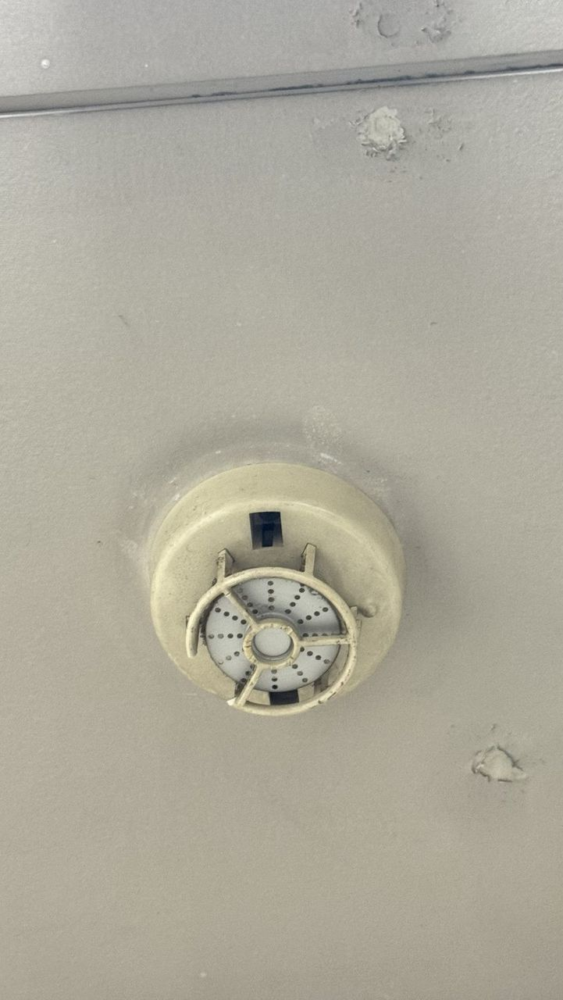
火災報知設備の熱感知器、経年劣化で見落としやすい3つのサイン
熱感知器は天井に取り付けられたまま長年放置されるケースが多く、黄変・汚れ・内部固着などが知らぬ間に進行します。
記事を読む
スプリンクラーヘッドの点検で必ず確認すべき3つのポイント
スプリンクラーヘッドは火災時に自動放水する最重要部品ですが、外観から異常を見落としやすく、定期点検時のチェックが欠かせません。
記事を読む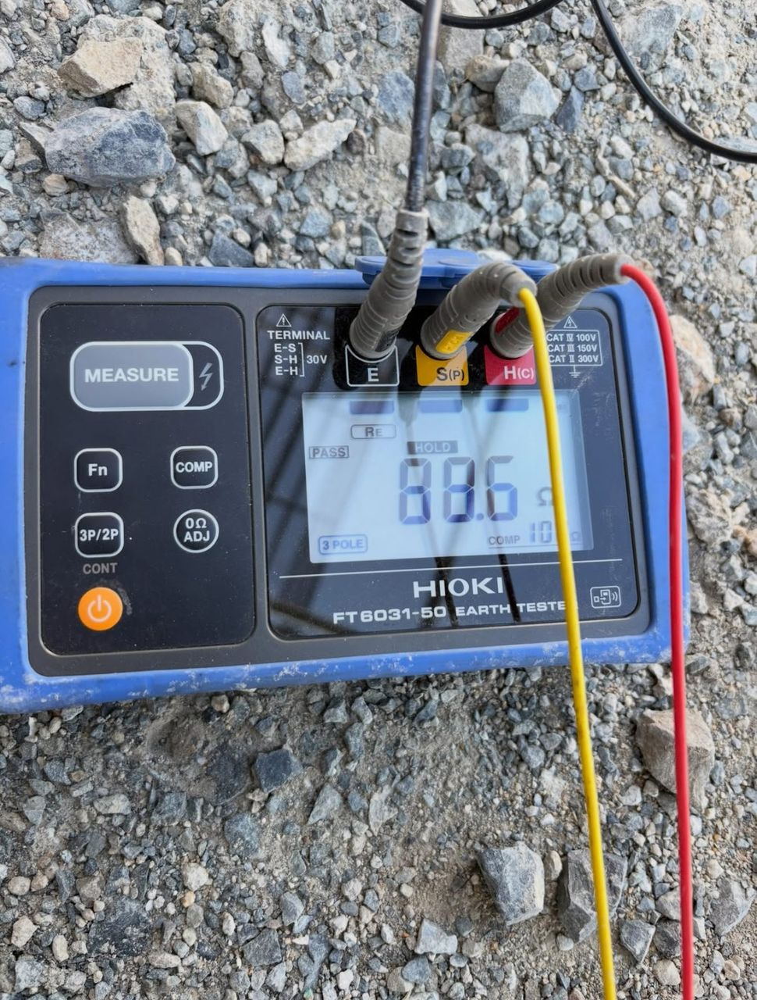
接地抵抗測定で現場が教える3つのポイント――数値が示すアース工事の要否
接地（アース）工事は感電防止・機器保護の根幹ですが、土壌の変化や経年劣化で抵抗値が変化することがあります。
記事を読む
コンセント内部の腐食・劣化を確認した現場対応事例――交換を決断する3つの判断基準
マンション共用廊下のコンセントを点検した際、プレートを外したところ内部接続部の腐食と電線絶縁被覆の劣化を確認した事例です。
記事を読む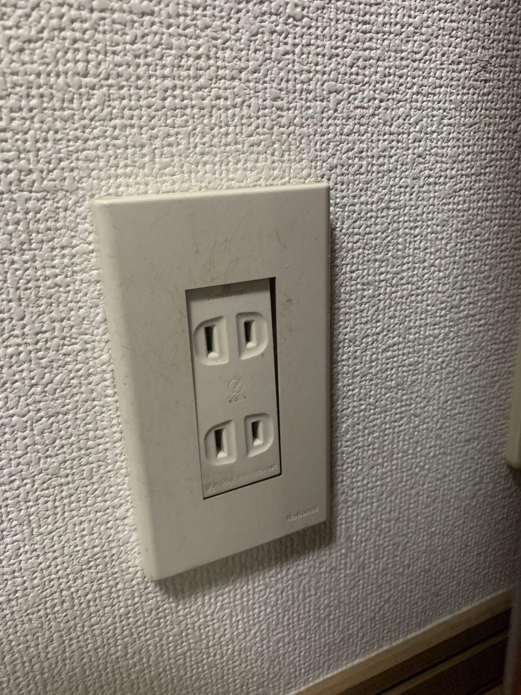
壁コンセントの定期点検で管理者が確認すべき3つのチェックポイント
マンションや施設の壁コンセントは日常的に使用される一方、定期点検の盲点になりやすい部位です。
記事を読む
施設用LED照明器具の定期点検で必ず確認すべき3つのポイント
施設・マンション共用部のLED照明はHf蛍光灯から置き換えが進んでいますが、LED化後も定期点検は欠かせません。
記事を読む消防設備の予防保全と事後保全、切り替えタイミングの判断基準
消防設備の保全戦略を「予防保全」から「事後保全」に移行する判断には、機器の経年数・更新コスト・法定点検要件の3要素を総合評価することが重要です。
記事を読む
コインランドリー機器のリース契約で確認すべき5つの重要条項
コインランドリー機器をリース契約で導入する際は、中途解約違約金・保守対応範囲・機器更新条件・原状回復義務・リース満了後の選択肢の5条項を必ず精査してください。
記事を読むEV充電器の設置後に管理会社が知っておくべき運用トラブルと対応策
EV充電器設置後に管理会社が直面しやすいトラブルは、充電中の長時間専有・課金システムのエラー・コネクタの物理的損傷の3種類が大半を占めます。
記事を読む宅配BOX設置に伴う管理規約変更の進め方と合意形成のコツ
宅配BOXを共用部に設置するには管理組合の決議と管理規約改定が必要になるケースがあります。
記事を読む設備点検「立会い」を効率化する管理会社向け準備チェックリスト
設備点検当日の立会い業務をスムーズに進めるには、事前の鍵確認・入居者告知・点検箇所の整理が不可欠です。
記事を読むフィールドサービス現場のヒヤリハット報告を仕組み化する3つのステップ
フィールドサービス現場での労働災害を未然に防ぐには、ヒヤリハット情報を収集・共有する仕組みが欠かせません。
記事を読む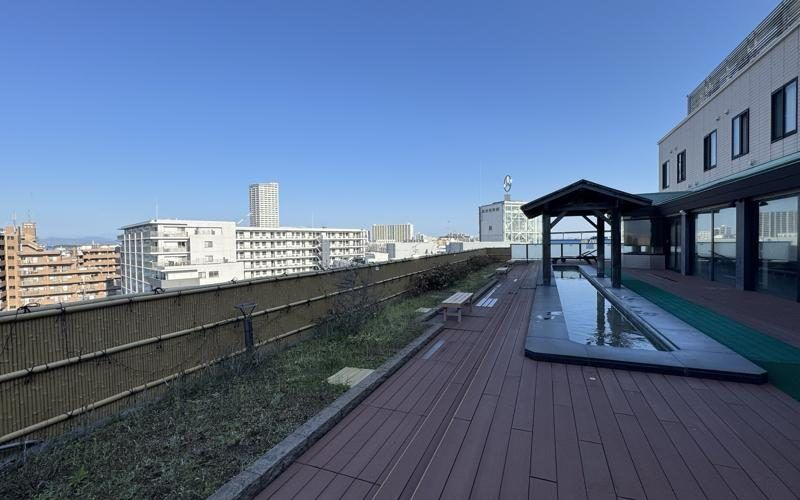
消防設備点検記録のデジタル化で管理コストを削減した実例
点検記録書類をPDFクラウド管理に移行したある管理会社では、年間の書類管理工数を約40%削減することに成功しました。
記事を読む
コインランドリー店舗の給水管結露・凍結トラブルを防ぐ冬季対策
冬季のコインランドリーでは給水管の結露や凍結による水漏れトラブルが増加します。
記事を読むEV充電器のスマートフォンアプリ連携で高まる入居者満足度
スマートフォンアプリと連携したEV充電器は、充電状況のリアルタイム確認や充電開始・終了通知により入居者の利便性を大きく高めます。
記事を読む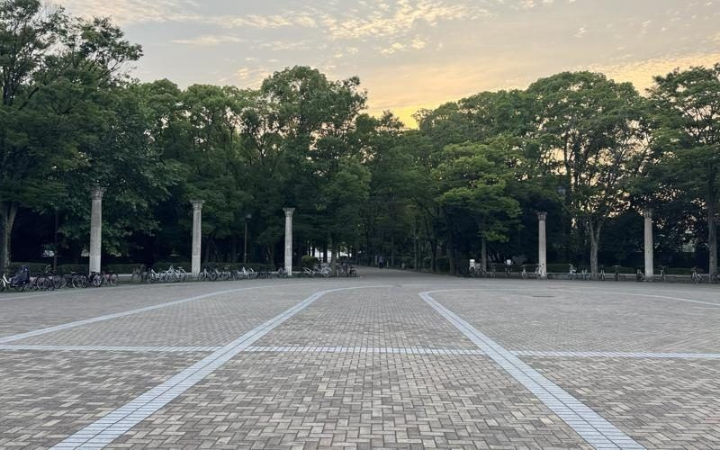
宅配BOXの設置場所選定で失敗しない3つの事前確認ポイント
宅配BOXの設置場所は導入後の利便性と長期運用コストを左右します。
記事を読む宅配BOXの冬季対応：低温・結露による誤作動を防ぐための管理ポイント
冬季の低温や結露はドアロック機構やタッチパネルに影響を与えることがあります。
記事を読む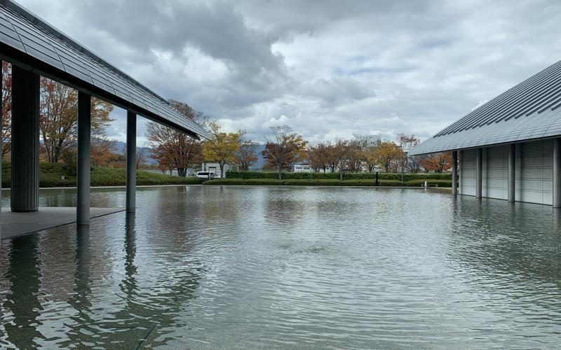
コインランドリーの電力契約見直しで運営コスト削減に成功した事例
複数の洗濯・乾燥機が稼働するコインランドリーでは、電力契約の見直しが運営コスト削減の大きなカギになります。
記事を読むEV充電器の設置申請手続きガイド：必要書類と審査期間の目安
EV充電器の新規設置には電力会社への申請と工事計画届けが必要です。
記事を読む建物設備保険の適用範囲と設備保守管理の関係、管理会社が押さえる注意点
建物設備に関連する損害で保険が適用されるかどうかは、事前の保守点検実績が重要な判断材料になります。
記事を読む消防設備の総合点検が未実施のまま放置された場合の法的リスクと対応策
消防法では一定規模以上の建物に年1回の総合点検と消防署への報告義務が課されています。
記事を読む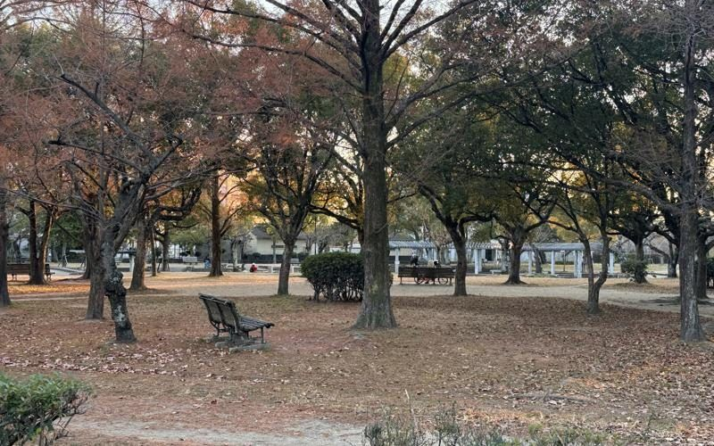
宅配BOXの設置場所選定と管理規約改定、スムーズな導入のための進め方
マンションへの宅配BOX設置は設置スペースの確保と管理規約の改定が必要なため、事前準備を怠ると導入までに時間がかかります。
記事を読む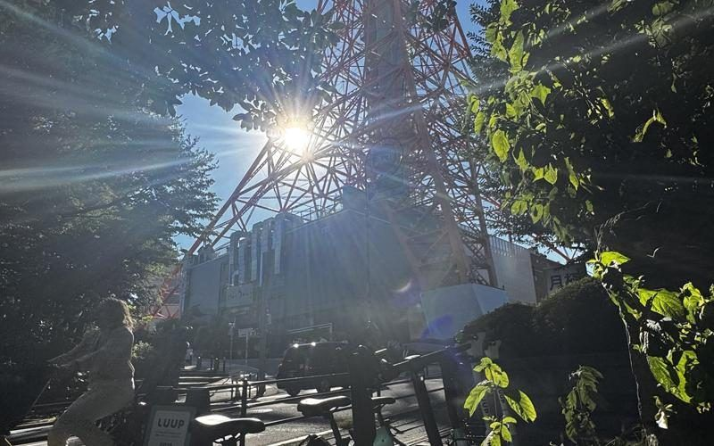
コインランドリー店舗の防犯対策：カメラ配置と照明計画の実践ポイント
コインランドリーは無人営業が多く、犯罪や不正使用のリスクへの対策が重要です。
記事を読む
EV充電器の課金・決済システム選定で失敗しないための比較ポイント
EV充電器の課金方式には時間課金・電力量課金・定額制などがあり、マンション利用者のニーズに合わせた選定が必要です。
記事を読む
建物内の水漏れ発見から応急処置まで、管理会社が知っておく初動対応3ステップ
給水管や排水管の水漏れは被害が広がる前の迅速な初動が重要です。
記事を読むフィールドサービス技術者の育成と技術継承、管理会社が実践すべき3つのアプローチ
設備保守の現場では熟練技術者の高齢化と若手育成が共通の課題です。
記事を読む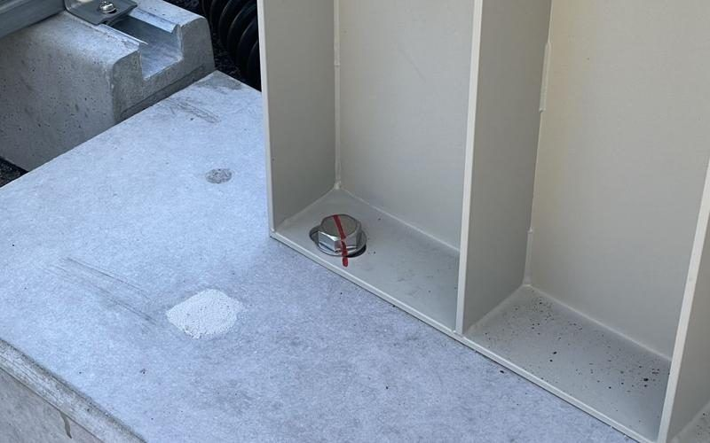
太陽光発電設備の架台ボルトマーキングによる増し締め管理、現場が押さえる3つの確認ポイント
太陽光発電架台の締結ボルトにはマーキングを施すことで緩みを視覚的に管理する手法が有効です。
記事を読む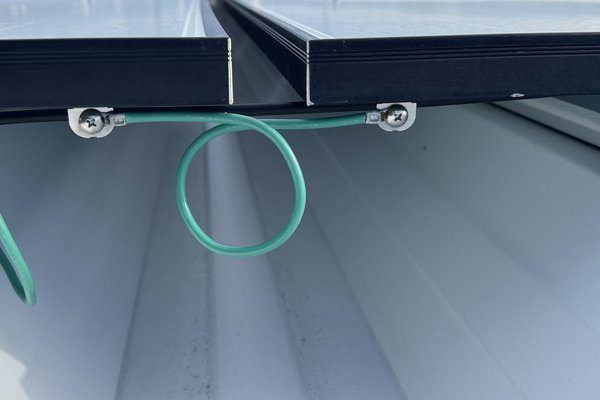
太陽光発電設備のアース（接地線）劣化確認で見落とされやすい3つのサイン
太陽光発電設備のアース線は感電防止と過電流保護の要です。
記事を読む
太陽光発電用端子台の熱変色・腐食サイン、点検で管理者が確認すべき3つのポイント
太陽光発電システムの端子台は発熱や腐食によって絶縁不良が生じやすい箇所です。
記事を読む屋上太陽光パネルの年間保守サイクル、設備管理会社が実践した効率化事例
屋上太陽光発電設備は設置後5年を過ぎると発電量の低下や接続部品の経年劣化が顕著になります。
記事を読む
太陽光発電システムのコンセント出力電圧確認、よく寄せられる質問と回答集
太陽光発電システムのコンセント側で計測できる電圧値から系統連系の状態を把握する方法は、現場担当者からよく質問を受けます。
記事を読む
移動式粉末消火設備の薬剤充填確認と外観点検で押さえるべき3つのポイント
移動式粉末消火設備の側面から確認できる薬剤タンクの状態や圧力ゲージの指示値は、法定点検の見落としポイントになりがちです。
記事を読むマンション外壁・共用部の定期確認、管理会社からよく届く5つの質問と回答
マンション外壁のひび割れやシール劣化に関して、管理会社からは「どのタイミングで専門業者に相談すべきか」という質問が多く寄せられます。
記事を読む
設備台帳・図面をデジタル管理した管理会社が点検の手戻りをゼロにした事例
紙の設備台帳と手書き図面を使っていたある管理会社では、担当者交代のたびに設備の所在確認に時間を要していました。
記事を読む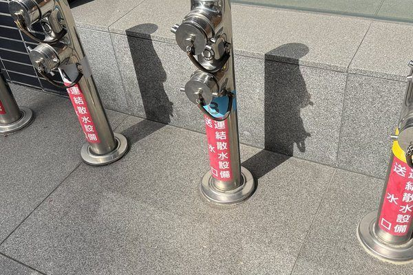
スプリンクラー配管接続口の漏水・腐食確認、定期点検で管理者が押さえる3つのポイント
スプリンクラー設備の配管接続口は長期間の圧力負荷と湿気により腐食や微細漏水が発生しやすい箇所です。
記事を読む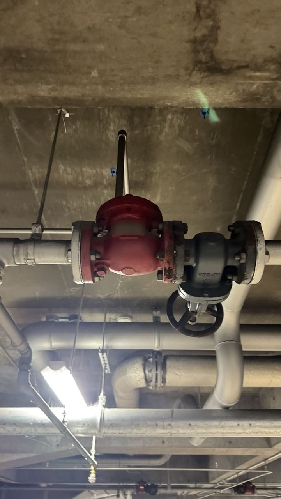
スプリンクラーバルブ下部の滲み発見から修繕完了まで、現場対応の実例
定期点検中にスプリンクラー制御バルブ下部から微量な滲みを確認し、早期修繕に至った現場事例です。
記事を読む
スプリンクラー逆止弁（チェックバルブ）の定期点検で押さえる3つの確認ポイント
スプリンクラー配管に設置される逆止弁（チェックバルブ）は、水の逆流防止とシステム全体の圧力管理に重要な役割を担っています。
記事を読む
太陽光発電用分電盤の絶縁劣化点検、現場で確認すべき3つのポイント
太陽光発電システムに付随する分電盤・接続箱は、経年による絶縁抵抗の低下や端子台の腐食が発電効率の低下と地絡リスクにつながります。
記事を読む蓄電池システムの容量劣化と更新判断、管理会社が押さえるべき3つの指標
太陽光発電と組み合わせた蓄電池システムは、使用年数や充放電の回数に応じて容量が少しずつ低下し、停電時のバックアップ能力が落ちていきます。
記事を読む屋上・外部設置消火器ボックスの劣化点検で管理者が押さえるべき3つのチェックポイント
屋上や建物外壁に設置される消火器ボックスは、紫外線・雨水・排気ガスにさらされ続けるため、内部の消火器本体より先にボックス自体が劣化するケースがあります。
記事を読む
屋上太陽光設置エリアの消火設備管理、見落としやすい3つの確認ポイント
屋上に太陽光パネルを後付け設置した建物では、消火器・消火設備の設置位置が変わり、既存の消防設備との整合性が損なわれるケースがあります。
記事を読む
太陽光発電パワコン（PCS）のケーブル接続部点検で確認すべき3つのポイント
太陽光発電システムのパワーコンディショナー（PCS）は、ケーブル接続部の緩みや絶縁不良が発電量低下や火災リスクにつながります。
記事を読む移動式粉末消火設備の法定点検と更新費用の目安
地下駐車場や屋外タンク付近に設置される移動式粉末消火設備は、ホースの劣化・薬剤の固結・圧力ゲージの故障が代表的な不具合です。
記事を読む
防火扉の自動閉鎖装置と法定標識、点検で確認すべき3つの安全ポイント
防火扉は火災時に延焼を防ぐ重要な設備ですが、扉本体の変形・ヒンジの固着・自動閉鎖装置の動作不良が、代表的な不具合です。
記事を読む誘導灯の蓄電池交換タイミングと法定基準――停電時に点灯しない前に確認すべきこと
誘導灯に内蔵された蓄電池は、4〜6年が交換の目安とされており（一般社団法人日本照明工業会）、法定点検でも点灯の切り替え試験を行います。
記事を読む
ケーブルダクト・支持金具の老朽化点検で見落としがちな3つの劣化サイン
電気系統の配線を支えるケーブルダクトや支持金具は、経年により腐食やひび割れが進行し、電線の保護機能が低下します。
記事を読む泡消火設備のヘッド・バルブ定期点検で現場が押さえる3つの確認ポイント
駐車場や機械室に設置される泡消火設備は、ヘッドの目詰まり・泡消火薬剤の劣化・バルブ類の固着が代表的な不具合です。
記事を読む屋上キュービクルの定期点検で管理者が押さえるべき3つの確認ポイント
屋上設置のキュービクルは降雨・結露・直射日光にさらされるため、室内設置に比べて外壁の腐食・パッキンの劣化・排水口の詰まりが発生しやすい環境です。
記事を読む非常用発電機の実負荷試験で確認すべき運転状態チェックポイント
消防用の非常電源である非常用発電機は、年1回の総合点検で、負荷運転（定格出力の30%以上）または内部観察などによる確認が必要です。
記事を読む
連結送水管設備の耐圧試験と放水口点検、管理者が押さえるべき3つの確認ポイント
連結送水管は竣工後または設置後10年が経過したものは3年ごとの耐圧試験が必要です。
記事を読む
危険物施設の法定標識・掲示板、正しく設置・維持するための3つの確認ポイント
消防法では、危険物を貯蔵・取り扱う施設に対して標識・掲示板の設置が義務付けられています。
記事を読む地下設備スペースの湿気・浸水対策、管理者が定期確認で押さえるべき3つのポイント
地下ピットや地下機械室は、湿気・結露・浸水の影響を受けやすく、設備機器の腐食や電気系統のショートにつながるリスクがあります。
記事を読む
危険物保管施設（灯油・重油タンク）の定期確認で管理者が押さえるべき3つのポイント
マンション・ビルに設置される灯油・重油の危険物タンクは消防法に基づく点検義務があります。
記事を読む建物機械室の換気・清掃管理で管理者が見落としがちな3つのポイント
発電機や空調機を収納する機械室は、設備性能の維持に適切な環境管理が欠かせません。
記事を読む
ガス系消火設備（窒素・CO₂）の定期点検で管理者が押さえるべき3つのポイント
電気室・サーバー室などに設置されるガス系消火設備は、誤作動時の酸素欠乏リスクがあるため点検精度が特に重要です。
記事を読む地下貯水槽・消火ポンプ設備の保守管理で見落としやすい3つの確認ポイント
地下に設置された消火ポンプや貯水槽は目視確認が難しく、劣化に気づきにくいのが課題です。
記事を読む空調・換気設備の定期点検とフィルター交換、管理会社が見落としがちな3つの盲点
共用部の空調・換気設備はフィルター詰まりによる効率低下が起きやすく、定期的な清掃と交換が欠かせません。
記事を読むエレベーターの定期点検で管理者が確認すべき3つの安全ポイント
エレベーターは毎日多くの入居者が利用する重要設備です。
記事を読む防火シャッターの定期点検で見落としがちな3つの安全確認ポイント
防火シャッターは建築基準法の防火設備で、年1回の防火設備定期検査の対象です。作動不良は延焼拡大の直接原因になります。
記事を読む設備保守コストの「見える化」から始める削減策――管理会社が実践する3ステップ
設備保守コストの削減は「とりあえず値下げ交渉」から入ると失敗します。
記事を読む誘導灯・非常口表示灯の定期点検で管理者が押さえるべき3つのポイント
誘導灯・非常口表示灯は停電時の避難誘導に不可欠な設備で、消防法により6か月ごとの機器点検と1年ごとの総合点検が義務付けられています。
記事を読む機械式駐車場の定期点検で見落としがちな安全確認ポイント
機械式駐車場（立体・地下・タワー式）は可動部が多いため、メーカーや保守会社の基準に沿った定期点検が欠かせません。
記事を読む非常用発電機の定期点検で管理者が押さえるべき3つのポイント
非常用発電機は停電時に消防設備・避難誘導灯・エレベーターを継続動作させる重要な設備で、消防法に基づく点検では、年1回の総合点検で負荷運転または内部観察などによる確認が必要です。
記事を読む排煙設備（防煙ダンパー・排煙口）の定期点検で確認すべき3つのポイント
排煙設備は火災時の煙を屋外へ排出して避難経路を確保するための重要な消防・建築設備で、建築基準法の定期検査や消防法の点検の対象になります。
記事を読む給排水設備の定期点検で管理者が押さえるべき3つのポイント
マンション・施設の給排水設備は日常的に使用される一方、異常が顕在化しにくい部位です。
記事を読むキュービクル（受変電設備）の定期点検で見落としやすい3つの劣化サイン
高圧受変電設備（キュービクル）は年1回の法定点検が義務ですが、点検間の自主確認も停電リスクを下げるうえで重要です。
記事を読む宅配BOXの高齢入居者向け使い方サポートと管理会社の対応実例
スマートロック式・QRコード式の宅配BOXは高齢入居者から「操作が難しい」と相談が入るケースが増えています。
記事を読むコインランドリー洗濯乾燥一体型機の保守点検と部品調達の実践ガイド
洗濯乾燥一体型機は排水フィルター・ドラムベルト・ヒーターユニットの消耗が早く、適切な保守サイクルの設定が収益安定化の要になります。
記事を読むEV充電器の充電ケーブル・コネクタ劣化診断と交換判断の3つの基準
充電ケーブルは屋外での紫外線・温度変化・接続繰り返しにより被覆ひび割れやコネクタ接触不良が生じます。
記事を読む消防設備点検票の適正保管と記録改ざん防止、管理会社が押さえる法的義務
消防法では点検結果報告書を消防署に提出後も3年間の保管が義務付けられており、原本の改ざんや紛失は行政指導の対象になります。
記事を読む受水槽清掃後の水質検査手順と管理者が確認すべき検査基準値
受水槽の清掃完了後は必ず水質検査を実施し、残留塩素・濁度・大腸菌群の3項目が基準値を満たすことを確認してから通水を再開します。
記事を読むコインランドリー店舗閉店・機器撤去時の原状回復費用と手続きの目安
コインランドリー閉店時の原状回復では、機器撤去・給排水配管の閉止・電気引込の復旧・床面補修が主な工事項目となります。
記事を読む設備保守の「ワンストップ対応窓口」を活用して管理業務を効率化した3社の事例
消防・電気・給排水・EV充電器など複数設備の保守委託先を一本化したことで、緊急時の連絡先が1か所になり対応時間が平均40分短縮された管理会社の事例を紹介します。
記事を読むEV充電器の停電時対応と非常用電源システムとの連携確認ポイント
マンション共用部の停電発生時、EV充電器は一般的に自動停止しますが、復電後の自動再起動設定や非常用発電機との系統接続の有無によって挙動が異なります。
記事を読む宅配BOXのIoT遠隔監視で空き確認・故障通知を自動化した管理効率化事例
IoT連携型宅配BOXを導入した管理会社では、満杯アラートと扉開閉エラーの即時メール通知により現地確認の出動回数が月10回以上削減されました。
記事を読む消火設備点検業者の選定で確認すべき3つの資格・実績・保険のポイント
消火設備の点検は消防設備士の有資格者が担当することが義務付けられており、業者選定時は「甲種・乙種の種別と対応設備」を必ず確認します。
記事を読む雷害対策と避雷設備の点検、管理会社が押さえるべき基礎知識
落雷時にアース不良や避雷針の劣化があると、電気設備の損傷や火災リスクが高まります。
記事を読むマンション屋上防水層の劣化を見抜く定期目視点検の実践ポイント
屋上防水層の劣化は下階への雨漏りとして顕在化することが多く、発見が遅れると改修費用が大幅に増加します。
記事を読むコインランドリー機器の振動・騒音問題、防振架台と設置場所で差がつく対処法
コインランドリー店舗では高速脱水運転時の振動が床・壁を伝わり、隣接テナントや上下階の入居者からの苦情につながることがあります。
記事を読む消防法の「特定防火対象物」と「非特定防火対象物」、年間点検スケジュール策定のポイント
消防法では建物の用途によって「特定防火対象物」と「非特定防火対象物」に区分され、消防設備の点検頻度や報告義務が異なります。
記事を読む宅配BOXの通信回線障害時の管理者対応手順と予防措置
ネットワーク型宅配BOXは通信回線（LAN・LTE/3G）が切断されると開錠コードの発行や通知機能が停止し、入居者からの問い合わせが急増します。
記事を読むEV充電器の充電待ち渋滞を防ぐ「コネクテッドEVCS」の仕組みと管理会社への影響
マンション内のEV充電器が複数台設置されている場合でも、利用集中時間帯に充電待ちが発生することがあります。
記事を読むマンション電気室・キュービクル室の換気不良が招くリスクと点検チェックポイント
電気室内の換気が不十分だと夏季の高温によって変圧器・遮断器の絶縁劣化が加速し、停電や火災リスクが高まります。
記事を読むフィールドサービス業務の「作業報告デジタル化」で管理会社の情報共有コストを削減した事例
点検作業後の報告書を紙から電子フォームへ移行した管理会社では、提出から管理職確認・顧客共有までの所要時間が平均3日から当日中に短縮された事例が報告されています。
記事を読むマンション管理者が知っておくべき「建物劣化診断」の種類と活用タイミング
建物劣化診断には外壁・屋上・給排水・電気・機械など設備分野ごとの専門調査があり、長期修繕計画の精度向上や修繕積立金の算出根拠として活用されます。
記事を読むコインランドリー機器のメーカー保証終了後に備える保守契約の選び方と注意点
コインランドリー機器のメーカー保証は一般的に設置後1〜3年で終了し、その後は部品交換・修理費用が全額自己負担となります。
記事を読む給水管の凍結・破裂を防ぐ冬季管理、マンション管理者向け実践ガイド
寒波到来時に給水管が凍結・破裂すると、居室内への水損被害や断水が複数フロアに波及します。
記事を読む屋内消火栓設備の年次点検で管理者が確認すべき3つのポイント
屋内消火栓は年1回以上の総合点検が義務付けられており、①ポンプ起動・停止の作動確認、②ホース・ノズルの損傷・腐食の目視点検、③放水圧力の実測値と基準値との照合が基本の確認項目です。
記事を読む宅配BOX導入後の入居者向け利用案内と運用ルール整備のポイント
宅配BOXを設置しても「使い方がわからない」という問い合わせが集中すると管理会社の対応コストが跳ね上がります。
記事を読む
EV充電器の電力需要ピーク時における負荷制御の基礎知識
マンション内で複数台のEV充電器が同時使用されると、契約電力を超過してブレーカーが落ちるリスクがあります。
記事を読むコインランドリー店舗の外壁・看板・照明維持管理で集客力を保つ方法
コインランドリーの売上は立地と外観の印象に大きく左右されます。
記事を読む消防避難訓練の実施手順と管理会社が押さえる法的要件
消防法施行規則第3条に基づき、収容人員が50人以上の防火対象物では年2回以上の消防訓練実施が義務付けられています。
記事を読む設備保守記録の電子化で点検作業の手戻りをゼロにした事例
複数棟を管理する管理会社では、紙の点検票が散在して「どの記録がどこにあるか分からない」状態が常態化しやすいです。
記事を読む
マンション共用部の省エネ診断と設備投資判断の進め方
共用部の電気使用量が高止まりしている場合、省エネ診断によって廊下・エントランスの照明LED化、ポンプのインバーター化、エレベーター制御のアップデートなどの改修候補が洗い出せます。
記事を読む電気主任技術者の選任義務と管理会社が押さえるべき対応ポイント
受電電圧6kV以上の自家用電気工作物を保有する施設では、電気事業法に基づく電気主任技術者の選任（または保安管理業務の外部委託）が義務です。
記事を読む防災用備蓄設備（備蓄食料・飲料水等）の点検と更新周期管理
大規模マンションや商業ビルでは防災備蓄品（備蓄食料・飲料水・簡易トイレ・救急セット等）の維持管理が管理組合・オーナーの義務となるケースがあります。
記事を読む自動ドアの定期点検で管理者が確認すべき3つのポイント
マンションや商業ビルのエントランスに設置された自動ドアは、センサー感知精度の低下・レールの磨耗・ドアエンジンの異音が点検時によく見つかる不具合です。
記事を読む給湯設備（電気温水器・ガス給湯器）の交換タイミングと費用相場
電気温水器の法定耐用年数は15年ですが、現場では10〜12年経過した時点で水漏れや保温効率の低下が顕在化するケースが多く見られます。
記事を読むコインランドリーの洗濯槽内部クリーニング、推奨頻度と手順まとめ
コインランドリー機器の洗濯槽内壁には石鹸カスや繊維くずが蓄積しやすく、放置すると洗浄力低下や悪臭の原因になります。
記事を読む設備保守委託先選定で「技術者数・対応エリア」の確認が重要な理由
価格だけで設備保守会社を選ぶと、「担当エリア外」「技術者が手配できない」などの理由で緊急対応が遅れるリスクがあります。
記事を読むマンション管理組合が設備保守会社を切り替える際の手順と注意点
設備保守会社の変更は、既存契約の解約通知期限（通常3〜6ヶ月前）を守ることが第一です。
記事を読む非常用発電機の燃料タンク管理と給油作業、管理者が押さえる3つのポイント
非常用発電機の燃料（軽油）は長期保管により酸化・変質が進み、いざという時に始動不能となるリスクがあります。
記事を読む危険物倉庫の防火・耐火扉の定期点検で見落としがちな3つの劣化サイン
危険物倉庫に設置された防火扉は、①枠とドアの隙間増大（変形・歪みのサイン）、②ヒンジ・クローザーの固着や動作不良、③耐熱シールや膨張材の剥離・欠損が点検時によく発見される劣化サインです。
記事を読む窒素ガス消火設備の起動試験後の復旧手順と設備更新タイミングの見極め方
窒素ガス消火設備（窒素消火システム）の年次点検後は、制御盤の連動復旧・噴出ヘッドのキャップ再装着・ガス容器の重量確認を正確な順序で行わないと誤作動のリスクが生じます。
記事を読む埋設タンク設置施設の法定年次確認と消防署への報告手続きガイド
地下に埋設された危険物貯蔵タンクを持つ施設は、消防法に基づく「危険物施設の定期点検」を年1回以上実施し、点検記録を3年間保存する義務があります。
記事を読む
地下設備室に設置された消火器の容量確認・更新周期と管理のポイント
地下の機械室・電気室・ポンプ室などに設置された消火器は、湿気による腐食や視認性の低下が起きやすく、定期点検での見落としが多い設置箇所のひとつです。
記事を読む宅配BOXの屋外設置型と屋内設置型、選定基準と管理上の注意点
宅配BOXには屋外設置型と屋内設置型があり、建物の共用部レイアウトや入居者の利用動線によって最適な選択は異なります。
記事を読むEV充電器のスマート充電機能（電力需給調整）の仕組みと管理会社への影響
スマート充電対応のEV充電器は、建物全体の電力使用量をリアルタイムで監視し、空き容量の範囲内で自動的に充電量を制御することで既存設備への負荷を抑えます。
記事を読むコインランドリーの排気・換気設備点検で押さえるべき3つのチェックポイント
コインランドリー店舗は乾燥機の熱風排気量が多く、ダクトや排気ファンの詰まりが機器過熱や悪臭・湿気の原因になります。
記事を読む自動火災報知設備の受信機更新タイミングと費用相場
自動火災報知設備の受信機は製造から概ね15〜20年で更新の検討が必要で、部品供給終了後は修理対応ができなくなるケースがあります。
記事を読むフィールドサービス繁忙期の外注活用と品質維持のポイント
年度末や建物竣工後の繁忙期に集中する設備点検業務は、自社人員だけでは対応が困難になる場面があります。
記事を読む屋上防水工事が太陽光発電設備に与える影響と点検調整のポイント
屋上防水工事を実施する際、太陽光発電設備の架台固定部や防水シートの重ね順、アンカー部の防水処理など、電気工事と防水工事の境界で手戻りが生じやすいポイントがあります。
記事を読む共用部の省エネ改修で管理コストを削減した3つの事例
共用部照明のLED化・人感センサー導入・給水ポンプのインバーター制御化は、比較的短期間で設備コスト削減効果が現れる改修工事です。
記事を読む消防設備遠隔監視の導入費用と保守コスト削減効果の実例
消防設備に遠隔監視システムを導入した物件では、夜間の異常検知や点検データのリアルタイム確認が可能になり、緊急駆けつけ回数の削減や保守対応コストの低減につながっています。
記事を読む地下貯蔵タンク設備の点検義務と記録管理、管理会社が押さえるべきポイント
危険物を保管する地下貯蔵タンクは消防法に基づく法定点検と、管理者が行う自主点検の双方が義務付けられています。
記事を読む設備緊急対応を支える部品在庫管理の実践、現場の3つの工夫
設備トラブルが発生した際の対応時間を短縮するためには、消耗部品・パッキン・ヒューズ類の適切な在庫管理が有効です。
記事を読む駐輪場設備の定期点検で管理者が確認すべき3つの安全ポイント
マンション・集合住宅の駐輪場設備は見落とされがちですが、定期的な安全確認が事故防止につながります。
記事を読む共用部の給水ポンプ故障予兆を見抜く現場対応3ステップ
マンション共用部の加圧給水ポンプは停止すると全戸への水道供給が止まる重要設備です。
記事を読むEV充電器設置時の補助金・助成金申請で失敗しない3つの確認ポイント
マンション・集合住宅へのEV充電器設置には国・都道府県・市区町村レベルの補助金が複数存在しますが、申請手続きには注意点があります。
記事を読む非常用照明装置の点検周期と蓄電池交換基準、管理者が知っておくべきこと
非常用照明装置は停電時に避難経路を確保するための法定設備で、建築基準法に基づく定期点検が義務付けられています。
記事を読む自家用電気工作物の月次点検で見落としやすい3つの確認ポイント
高圧受電の施設を持つビル・マンションでは電気事業法に基づく自家用電気工作物の保安管理が義務付けられています。
記事を読む台風通過後に行うべき太陽光発電設備の安全点検3ポイント
台風や強風・大雨通過後の太陽光発電設備は目に見えない損傷が発生していることがあり、通電前の点検が事故防止に直結します。
記事を読むコインランドリー開業後3年で多発するトラブルと安定運営を続けるためのコツ
コインランドリー店舗は開業後1〜3年目にトラブルが集中する傾向があります。
記事を読む宅配BOX設置工事の前に確認すべき建物側の条件チェックリスト
宅配BOXの導入を決めたとしても、建物側の条件が整っていないと工事が遅れたり、設置後に不具合が生じる場合があります。
記事を読む消防設備点検後の「指摘事項」を改修工事につなげる管理会社の進め方
消防設備の定期点検で「指摘事項あり」と報告された際に、適切に改修へ繋げられていないケースが散見されます。
記事を読む設備保守契約の更新時期に管理会社が実践するコスト適正化3ステップ
設備保守契約は長期間同一業者と継続することで割高になりやすく、更新のタイミングが見直しの好機です。
記事を読む建物外構・駐車場舗装の劣化点検と修繕サイクルの目安
建物外構の舗装やコンクリート打設面は、ひび割れや段差が発生しても見落とされやすい箇所です。
記事を読む建物設備室の床・壁・天井の経年劣化点検と修繕の進め方
電気室・機械室・ポンプ室などの設備室は、床のひび割れや壁の剥離、天井の染み・腐食が設備の安全稼働に直結します。
記事を読む防火設備の「作動検査」と「外観点検」の違い、管理会社が知っておくべき確認手順
防火扉・防火シャッターの点検には「外観点検」と「作動検査」の2段階があり、それぞれ確認する内容が異なります。
記事を読むガス系消火設備の容器弁・ヘッド・配管の定期目視確認、管理者が押さえる3つのポイント
窒素・CO₂ガス消火設備の定期点検では、容器弁のレバー位置と安全ピン状態、噴射ヘッドの変形・異物付着、配管接続部の腐食・漏洩サインを個別に確認することが重要です。
記事を読む地下設備スペースの消火器・防災設備一体管理で点検効率を高めた事例
大型複合ビルの管理会社が、地下設備スペースに散在する消火器・誘導灯・非常放送スピーカーを台帳一元化したことで、法定点検時の確認漏れをゼロにした事例です。
記事を読む危険物施設の「指定数量倍数」管理と記録、管理会社が実務で確認すべきポイント
危険物の貯蔵・取り扱いには消防法上の「指定数量」が定められており、その倍数によって届出・許可・保安距離などの規制内容が変わります。
記事を読む管理物件の水道メーター交換周期と費用の目安、管理会社が知っておくべきポイント
水道メーターの法定検定有効期間は8年（特定計量器）と定められており、期限超過のメーターは水道事業者から交換を求められる場合があります。
記事を読むマンション共用部のデマンド監視導入で電気代を削減した3社の事例
電力使用量の30分間平均値を監視する「デマンド監視システム」を共用部に導入した管理会社3社の事例を紹介します。
記事を読む給湯設備の「予防交換」で緊急修繕コストを削減した管理会社の実例
電気温水器・ガス給湯器を「壊れてから交換」ではなく使用年数・稼働時間を基準に「予防交換」へ切り替えた管理会社の実例です。
記事を読む自動販売機の設置場所安全管理と定期点検で管理会社が押さえるべきポイント
マンションや商業施設の共用部に設置された自動販売機は、設置業者の管理下であっても建物管理者として転倒防止固定・電源ケーブルの安全確認・消火設備との距離確認が必要です。
記事を読む
非常用発電機の更新・リース選定で管理組合が検討すべきポイント
非常用発電機は設置後15〜20年を目安に更新が必要です。
記事を読む危険物保管室の防爆型換気設備と法定要件、管理会社が確認すべき点検ポイント
灯油・軽油を保管する危険物倉庫には、消防法に基づき防爆型換気設備の設置が義務付けられています。
記事を読むガス系消火設備の設置基準と管理会社が確認すべき法令上の要件
ガス系消火設備（CO₂・窒素・ハロン代替ガス）はサーバー室や電気室に多く設置されますが、設置基準や不活性化濃度の法定要件は建物用途によって異なります。
記事を読む
公共施設・商業施設の消防設備一括管理で複数棟を効率よく点検する方法
商業施設や公共施設を複数棟管理する場合、消防設備の点検スケジュールを統合管理することで立会いコストを大幅に削減できます。
記事を読む地下式消火栓設備の腐食・漏水診断と修繕費用相場、発注前の確認ポイント
地下式消火栓は外観から劣化を判断しにくく、腐食や漏水が進行してから発見されるケースが多い設備です。
記事を読む建物内の消防用設備表示・標識の設置基準と定期確認の実務ポイント
消防法では誘導灯・消火栓・スプリンクラーなど各設備の標識位置・サイズ・色彩が細かく規定されています。
記事を読む宅配BOXの電源ユニット故障時の対応手順とUPS搭載機種の選定ポイント
停電や電源ユニットの故障による宅配BOX機能停止は入居者クレームに直結します。
記事を読むコインランドリー施設の水質管理と衛生基準達成のための実務
コインランドリーの洗濯機用水は水道水基準を満たしていますが、給水管の経年劣化や受水槽の管理状況によって水質が変化する場合があります。
記事を読む共用部Wi-Fi・IoT設備の保守管理と通信障害時の一次対応フロー
マンション共用部に設置されるWi-FiルーターやIoT連携設備（スマートロック・監視カメラ等）は、定期的なファームウェア更新と通信状況の確認が必要です。
記事を読む建物設備のカーボンニュートラル対応、管理会社が今すぐ取り組める3つのステップ
建物のCO₂排出削減に向けて、共用部照明のLED化・太陽光発電の導入・EV充電設備の整備が主要な取り組みとなります。
記事を読む宅配BOXの年次保守報告書の作成と管理組合への説明ポイント
宅配BOXの年次保守報告書は、点検実施日・確認項目・不具合有無・次回対応予定を明記することで管理組合への説明資料として活用できます。
記事を読むコインランドリーの排水配管高圧洗浄の実施時期と費用目安
コインランドリーの排水配管は洗剤カスや繊維くずが蓄積しやすく、放置すると排水詰まりや悪臭の原因になります。
記事を読むEV充電器の屋内駐車場設置と防火区画対応、管理者が知る配線工事のポイント
屋内駐車場へのEV充電器設置では、防火区画を貫通する配線部分に耐火処理（貫通部の防火措置）が義務付けられており、工事前に所轄消防署への事前相談が必要です。
記事を読む消火器の廃棄・回収と更新手続き、管理会社が押さえるべき具体的な進め方
使用期限（製造後10年）や外観不良で廃棄が必要な消火器は、自治体の粗大ごみとして出せないため「特定窓口」または「指定引取場所」への持込みが必要です。
記事を読むフィールドサービス業者との情報共有クラウドツール導入で管理効率が向上した3社の事例
点検報告書・作業写真・設備履歴をクラウドで共有する仕組みを導入した管理会社3社では、担当者交代時の情報引継ぎ工数が平均40%削減されました。
記事を読むマンション大規模修繕工事中の仮設電源管理と消防設備の維持対応ガイド
大規模修繕工事中は仮設電源の取り回しにより、自動火災報知設備や非常照明の一時断線リスクが高まります。
記事を読む宅配BOXのカメラ連携と防犯機能、管理会社が確認すべき最新仕様ポイント
近年の宅配BOXには内蔵カメラや外部防犯カメラとの連携機能が搭載されるケースが増えており、荷物の投函・取り出し時刻と映像を紐付けて管理できます。
記事を読むコインランドリーの集金システム電子化で現金管理コストを削減した事例
交通系ICカードやQRコード決済を導入したコインランドリー店舗では、週次集金の手間が不要となり運営管理コストが年間で数十万円規模の削減になった事例があります。
記事を読むEV充電器の複数台同時充電時の電力負荷分散、設備管理者向け基礎知識
マンション駐車場に複数台のEV充電器を設置する際は、同時充電による電力ピークが既存の受変電設備の容量を超えないよう「負荷分散制御（スマートチャージ）」の導入が推奨されます。
記事を読む設備保守の「優先度トリアージ」で緊急対応コストを削減した管理会社の実例
複数物件を管理する会社では、設備トラブルへの対応依頼が重なると緊急出動コストが膨らみやすい課題があります。
記事を読む消防設備点検の「外観点検」と「機能点検」の違いと実施手順の基礎
消防設備点検では外観点検（設置状況・外見上の異常確認）と機能点検（動作確認・計測）を組み合わせて実施します。
記事を読む宅配BOX設置に必要な電源工事の種類と費用の目安
宅配BOXを設置する際には機種によってAC100V電源工事が必要になる場合があり、電源の取り出し経路と配線距離によって工事費が大きく変わります。
記事を読むEV充電器の屋外設置における防水・防塵対策と定期管理のポイント
屋外設置のEV充電器はIP65以上（防塵・防水）の保護等級を満たした機種の選定が推奨されており、雨水や砂塵による故障を防ぐための定期清掃が重要です。
記事を読むコインランドリーの洗濯機ドラム点検で確認すべき3つの消耗品交換サイン
コインランドリーの洗濯機ドラムにはドアパッキン・ベルト・排水弁など定期交換が必要な消耗品があり、これらの劣化が主なトラブル原因の上位を占めています。
記事を読む設備保守業者の「地域密着型」と「広域対応型」の特徴比較と選び方
地域密着型の設備保守業者は緊急時の駆けつけスピードと現場への精通度が強みである一方、広域対応業者はシステム化された報告体制や一括管理の利便性が優れています。
記事を読む太陽光発電システムの年次性能評価と発電量低下の原因診断ポイント
太陽光発電システムの発電量は設置後5〜10年で10〜20%低下するケースがあり、原因としてパネル表面の汚損・パワコンの劣化・配線接続不良が主なものとして挙げられます。
記事を読むガス系消火設備（CO₂・窒素）の点検完了後の安全確認と復旧手順
ガス系消火設備の点検後は、起動装置の安全ピン取り付け・制御盤の手動/自動切替状態の復元・防護区画の密閉確認を必ず行う必要があります。
記事を読む埋設型消火設備の年次点検と消防署への報告手続きのポイント
地下埋設型の消火設備は地上設置型と異なり、マンホール蓋の腐食・ポンプの浸水状況・配管接続部の漏れが主な点検項目となります。
記事を読む危険物タンク設備の標識・掲示板の維持管理と自主点検の実践ポイント
危険物貯蔵施設に設置が義務付けられている危険物の類・品名・最大数量を記載した標識・掲示板は、変色・文字の剥落・取り付け不良がないかを年1回以上目視で確認することが必要です。
記事を読むコインランドリーの機器老朽化に備えた計画的更新と資金調達の進め方
コインランドリー機器の耐用年数は一般的に10〜15年とされており、使用頻度が高い機器では7〜10年での交換が推奨されるケースもあります。
記事を読む避難器具の点検で見るポイント――避難はしご・救助袋・緩降機の収納と接近しやすさ
立入検査で指摘を受けたら――立入検査結果通知書の読み方と改修（計画）報告書の出し方
消防法第4条に基づく立入検査で不備が見つかると、その内容は「立入検査結果通知書」で知らされます。通知書は命令ではなく行政指導ですが、記載された期限までに「改修結果（計画）報告書」を消防署へ提出します。改修が終わっていないものは、いつまでにどう直すかという計画を書いて出すことができます。期限までに報告がなければ警告や命令へ進むことがあるため、放置せず早めに対応します。
消防設備点検資格者と消防設備士の違い――点検だけできる資格と工事・整備もできる資格
消防設備の点検を行う資格には、消防設備士と消防設備点検資格者があります。消防設備士は工事や整備もできる国家資格です。消防設備点検資格者は、登録講習機関の講習と修了考査に合格して得る資格で、点検のみを行うことができます。第1種は消火栓やスプリンクラーなど機械系、第2種は自動火災報知設備や避難器具など電気系の設備が対象です。免状の有効期限は交付日以後の最初の4月1日から5年以内で、再講習を受けないと資格を失います。
共同住宅の消防設備点検――共用部と専有部で違う範囲と立会いの調整
共同住宅の消防設備点検は、共用部と専有部で範囲が分かれます。共用部では廊下や階段の消火器や誘導灯、受信機などを点検します。専有部では住戸内の感知器や消火器などが対象で、居住者の立会いが必要です。点検の日程は管理組合や管理会社が調整し、住戸への入室には事前の案内が欠かせません。不在の住戸があれば再訪の日程を組みます。共同住宅は非特定防火対象物にあたり、点検結果の報告は3年に1回です。
点検で指摘された不良、是正工事の優先順位はどう決めるか――人命・法令・予算の考え方
点検で見つかった不良の是正工事は、すべてを一度に直すのではなく優先順位を付けて進めます。まず人命に直結するもの、感知器や避難器具、誘導灯の不作動などから対応します。次に消防署からの指摘事項、法令違反にあたるものを直します。そのうえで、機能の低下が見られるものや将来の不具合の予兆を計画的に改修します。見積りは複数社から取り、部品の納期と工期もあわせて確認すると、予算と段取りが立てやすくなります。
消火器の耐圧性能点検――製造から10年目の水圧試験と表示の見方
製造から10年を経過した消火器は、本体容器の耐圧性能点検（水圧試験）が必要です。消防庁の点検要領では、製造年から10年を過ぎたものを対象とし、その後は3年ごとに実施すると定められています。本体に表示された製造年と設計標準使用期限を確かめ、試験を受けるか新しいものに交換するかを判断します。点検の結果は点検票に記録されます。
感知器の種類と使い分け――煙式・熱式・炎式の設置場所の考え方
感知器は火災の熱や煙、炎をとらえる場所に合わせて種類が決まります。階段や廊下には煙感知器、厨房などふだんから煙が立ちのぼる場所には熱感知器を使い、天井の高い場所では炎感知器が選ばれます。消防法施行規則第23条で設置場所や感知面積が定められており、廊下では歩行距離30mにつき1個以上が目安です。誤作動が多い場所では、種類の見直しも検討します。
スプリンクラー設備の末端試験弁――放水試験で圧力と作動を確認するポイント
スプリンクラー設備の末端試験弁は、配管の末端に設けられた放水用の弁です。総合点検ではこの弁を開いて放水し、流水検知装置が作動して警報が鳴るか、圧力が保たれているかを確認します。弁が開かない、圧力が上がらないといった不具合は、配管の詰まりや弁の固着が疑われます。日頃から弁の位置と表示を確認しておきましょう。
総合点検の連動試験――感知器から受信機・非常放送までの作動を確かめる流れ
総合点検では感知器を実際に作動させ、受信機の火災表示、地区音響装置の鳴動、非常放送、防火戸や防火シャッターの閉鎖まで、一連の連動を確認します。機器点検は6か月に1回、総合点検は1年に1回の周期で行われ、連動の確認は総合点検ならではの項目です。どこか一か所でも連動しない場合は、受信機側か現場側かを切り分けて記録に残します。
点検業者の見積りを比べるときのチェックポイント――項目の抜けと単価の見方
点検業者の見積りを比べるときは、総額だけでなく内訳を見ます。対象設備の一覧、機器点検と総合点検の区別、報告書の作成費、交通費の扱いがそろっているかを確認します。是正工事の費用が含まれている場合は、点検費と分けて考えるのが基本です。極端に安い見積りは項目の抜けがないかを確かめ、複数社で条件をそろえて比較します。
福祉施設・グループホームで求められる消防設備の上乗せ要件――スプリンクラー設備の設置基準を中心に
福祉施設では、入所者が自力で避難しにくいことを前提に、一般の建物より厳しい消防設備の基準がかかります。スプリンクラー設備は消防法施行令第12条で施設の種類ごとに設置対象が定められ、認知症グループホームや特別養護老人ホームなどは延べ面積にかかわらず対象になる場合があり、275㎡以上で対象になる施設もあります。平成27年の改正で小規模な福祉施設にも設置が原則義務化されました。自動火災報知設備や避難器具、誘導灯もあわせて確認が大切です。
着工届が必要な工事と不要な工事の境目――軽微な工事でも設置届は必要
消防用設備等の工事をするときは、工事に着手する日の10日前までに消防署へ着工届を出す必要があります（消防法第17条の14）。新設・増設・移設・取替えなどが対象で、図面などの添付書類も必要です。一方、感知器を数個増設・移設するような軽微な工事は、着工届を省略できる場合があります。ただし軽微な工事でも設置届は必要で、工事の記録と試験結果報告書を残して関係者に渡します。境目が曖昧なときは、工事前に所轄の消防署へ相談すると安心です。
非常用照明と誘導灯の違い――停電時の役割分担と点灯時間の目安
非常用照明と誘導灯は、どちらも停電時に働く防災のあかりですが、役割と根拠法令が違います。非常用照明は建築基準法に基づき、避難する人の足元を照らす設備で、床面で1ルクス以上（蛍光灯・LEDは2ルクス以上）の明るさを30分間保つことが求められます。誘導灯は消防法に基づき、避難口や避難の方向を示す表示灯で、内蔵の蓄電池により20分間以上点灯します。片方があってももう片方の代わりにはならないため、点検では両方を別々に確認することが大切です。
消防設備士の講習は初回2年以内・以後5年ごと――受講期限の数え方
消防設備士の免状に有効期限はありませんが、定期的な講習の受講が義務付けられています（消防法第17条の10）。初回の講習は免状交付後の最初の4月1日から2年以内、その後は前回の受講後の最初の4月1日から5年以内に受ける決まりです（消防法施行規則第33条の17）。講習は類ごとに分かれているため、複数の免状を持つ場合はそれぞれ受講が必要です。受講を怠ると免状の返納を命じられる場合があるので、期限を台帳で管理しておくと安心です。
消防設備の改修工事で工期が延びる3つの理由――部品納期・立会い調整・届出手続き
消防設備の改修工事は、見積りどおりの日程で終わるとは限りません。工期が延びやすい理由の代表例は、感知器や受信機などの部品の納期、共用部の立会いや居住者への周知にかかる調整、そして着工届や設置届などの手続きの3つです。とくに古い機種の部品は取り寄せに時間がかかることがあります。工事を計画するときは、部品の手配状況と届出の段取りを先に確認し、余裕のある日程を組むことが大切です。
消火器の設置場所の決まり――歩行距離20mと見やすい表示
消火器は、建物の各部分から消火器までの歩行距離が20m以下（大型消火器は30m以下）になるよう、各階に配置することが消防法施行規則で定められています。廊下の直線距離ではなく、実際に歩ける経路で測るのが決まりです。設置高さは床から1.5m以下とし、通行や避難の妨げにならず、すぐに持ち出せる見やすい場所に置くことが大切です。
感知器が誤作動するときの原因の切り分け――煙・ほこり・結露・虫の見分け方
感知器の誤作動は、調理やたばこの煙、工事の粉じん、感知器の内部に入った小さな虫や結露など、火災以外の原因で起きることがあります。まず誤作動した感知器の種類と場所、発生した時間帯や天候、近くで工事や調理がなかったかを確認して原因を切り分けます。清掃で直る場合もあれば、設置場所の見直しが必要な場合もあります。
屋内消火栓ホースの耐圧試験――製造から10年で始まる点検と交換の考え方
屋内消火栓などの消防用ホースは、製造年の末日から10年を経過した日以降に行う点検で耐圧性能の点検を行い、異常がなければその後は3年以内ごとに続けます。ただし易操作性1号・2号消火栓の保形ホースは対象外です。ホースに漏水や変形が見つかれば交換が必要です。製造年はホースに表示されているので、点検の前に確認しておくと段取りが決めやすくなります。
点検結果の報告期限を物件ごとに管理する方法――特定1年・非特定3年の違い
消防用設備等の点検結果の報告は、特定防火対象物は1年に1回、非特定防火対象物は3年に1回と、建物の用途で周期が決まっています（消防法施行規則第31条の6）。点検そのものは機器点検が6か月に1回、総合点検が1年に1回です。物件ごとに用途区分と前回の報告日を台帳に記録し、報告期限を一覧で管理しておくと、提出漏れを防げます。
パッケージ型消火設備の点検と管理――小さな区画の消火設備で押さえるポイント
パッケージ型消火設備は、火災の検知と消火剤の放出の機能をひとつの装置にまとめた消火設備で、電気室や厨房など小さな区画の消火に使われます。点検では表示灯や圧力計の状態、装置まわりの障害物の有無、感知部の汚れを確認します。作動後の復旧や薬剤の補充は専門の業者に依頼し、点検の記録を残して次の点検につなげることが大切です。
点検票の「不良」判定はどう決まるか――その場で直せるものと改修見積りになるものの境目
消防設備点検の結果は、設備ごとに定められた点検基準に照らして点検票へ「良」「不良」で記録されます。不良でも、感知器の清掃や電池交換、表示灯の球替えのような軽微なものは、点検時にその場で直せることがあります。一方、機器本体の交換や配線の修理が要るものは、消防設備士による改修として別途見積りになるのが一般的です。境目を知っておくと、点検後の報告を受けたときに改修の優先順位を判断しやすくなります。
消防署の立入検査の流れ――当日に見られる場所と、事前に整えておく書類
立入検査は消防法第4条に基づき、消防職員が防火対象物の位置・構造・設備や管理の状況を確認するものです。当日は消火器や自動火災報知設備、避難経路などが見られ、防火管理者の選任届や消防計画、点検結果報告書の控えなどの書類確認も行われます。直前に慌てないためには、日頃の点検報告と届出の控えを一か所にまとめ、指摘を受けやすい避難経路の物品放置などがないか事前に見ておくことが大切です。
消防設備士の甲種と乙種は何が違うか――工事・整備・点検でできることの違い
消防設備士の免状には甲種と乙種があり、甲種は担当する類の設備について工事・整備・点検のすべてを行うことができますが、乙種ができるのは整備と点検のみで、工事は行えません。また、扱える設備は免状の類ごとに決まっているため、感知器の移設や増設といった工事が伴う依頼では、対応する類の甲種を持つ設備士が必要です。点検だけの依頼か、工事まで含むのかで、依頼先に必要な資格が変わります。
誘導灯が停電時に点かないときの確認順序――バッテリー交換の目安も
停電時に誘導灯が点かない場合、まず器具のモニタ（充電表示）の状態と点検スイッチによる点灯確認、次に分電盤など常用電源側の異常、蓄電池のコネクタの緩みや膨らみを順に切り分けます。誘導灯には非常時に20分間点灯し続けることが求められ、蓄電池は消耗品のため、メーカーは使用開始から4〜6年を交換の目安として案内しています。点かない原因が器具本体の故障か蓄電池の寿命かで、対応も費用も変わります。
民泊（住宅宿泊事業）を始める前に――消防設備のチェックポイント
住宅で民泊（住宅宿泊事業）を始めるには、住宅宿泊事業の届出の際に消防法令適合通知書の提出が求められます。建物は消防法令上の用途が判定され、自動火災報知設備や誘導灯、消火器などの設置が必要になるのが一般的です。延べ面積300㎡未満の小規模な建物では特定小規模施設用自動火災報知設備が認められる場合や、要件を満たせば誘導灯の設置が免除される場合もあります。設備を整えてから管轄の消防署へ交付申請を行います。
スプリンクラー設備の更新目安と特需の背景――2026年以降に増加する交換需要の仕組み
スプリンクラー設備の標準的な耐用年数は約20年とされており、1980〜90年代に設置された建物では更新時期が集中する「スプリンクラー特需」が起きています。管理会社・ビルオーナーが特需の背景を理解し、早めに更新計画を立てることで、工事費の高騰や業者不足のリスクを回避できます。
スプリンクラーヘッドの標準耐用年数20年――交換が必要なサインと定期点検で確認すべき3項目
スプリンクラーヘッドの耐用年数は、NFPA規格・国内消防法の運用基準ともに製造から20年が目安です。ヘッドの異常サインは
①感熱部の変色・腐食、
②散水障害となる塗装付着、
③フレームの変形の3項目で確認できます。20年を超えたヘッドは定期点検のたびに現状確認し、異常があれば即時交換が原則です。
スプリンクラー配管の更新費用相場――築20年超のビル・マンションで管理会社が把握すべきコスト感
スプリンクラー配管の更新費用は建物規模・工法・配管材料によって大きく異なりますが、一般的なマンション（10階建て・50戸）では総工費1,500〜3,000万円程度が目安です。費用を左右する主な要因は
①隠蔽配管か露出配管か、
②配管材料（鋼管・ステンレス・塩ビ）の選定、
③仮設足場の要否の3点。複数社への相見積が不可欠です。
スプリンクラー設備の老朽化診断チェックリスト――管理会社が自ら点検前に実施できる10項目
専門業者による定期点検の前に、管理会社が自ら実施できる老朽化診断チェックリストを10項目にまとめました。
①制御弁の開閉表示確認、
②流水検知装置の圧力計読み取り、
③バルブ接合部の滲み目視確認、
④ヘッド周辺の塗装・変色チェックなど。日常巡回時にチェックすることで、問題の早期発見と業者への的確な情報提供が可能になります。
乾式・湿式・予作動式スプリンクラーの違い――設置環境と凍結リスクで選ぶ3つの方式
スプリンクラー設備は配管内の媒体と動作方式によって湿式・乾式・予作動式の3種に分けられます。湿式は常時加圧水が充填されて即時放水できる標準仕様、乾式は凍結リスクのある駐車場・倉庫向けで空気を充填、予作動式は誤放水を最小化したい電算室などに適しています。更新時にはその建物の用途・気候条件に合った方式を再確認することが重要です。
スプリンクラー制御弁・流水検知装置の更新目安15〜20年――管理会社が気づきにくい劣化ポイント
スプリンクラーのヘッドや配管に比べ、制御弁と流水検知装置（アラームバルブ・乾式弁など）の更新目安は意識されにくい傾向があります。しかしこれらの機器も15〜20年が推奨更新年限とされており、弁座の腐食・パッキン劣化・リタデングチャンバーの詰まりなど機能低下が進むと消防点検で不合格となる可能性があります。
スプリンクラー設備の更新で使える補助金・助成金――中小ビルオーナーが申請できる制度まとめ
スプリンクラー設備の更新には高額な費用がかかりますが、建物用途・自治体・法令要件によっては補助金・助成金の活用が可能です。主な制度として
①中小企業向け設備投資補助金（業種要件あり）、
②各都道府県の防火安全対策補助、
③耐震改修と組み合わせた総合助成などがあります。申請には見積書・設備台帳・消防点検結果報告書の準備が必要です。
スプリンクラー特需に対応できる業者の選び方――過去実績・保有資格・アフターフォロー3つの確認ポイント
スプリンクラー特需が高まる中、施工実績のない業者への発注リスクが高まっています。信頼できる業者の選定ポイントは
①消防設備士（甲1類）の在籍・指定消防設備業者の認定有無、
②過去5年以内の同規模物件での施工実績、
③点検・補修のアフターフォロー体制の3点です。見積提出時に施工実績一覧と担当技術者の資格証を提示できるか確認することが重要です。
スプリンクラー設備の消防検査と更新工事の段取り――着工前に済ませるべき手続きと工期の目安
スプリンクラー設備の更新工事は、着工前に消防署への設置届・工事計画書の提出が必要です。工事完了後は消防設備士による完工確認を受け、管轄消防署の検査を経て使用開始となります。一般的な工期はフロア単位で2〜4週間ですが、仮設給水配管の設置や入居者への断水告知など事前調整が多く、工事開始の3〜6か月前から計画を進めることが重要です。
スプリンクラー設備の更新を先送りするリスク――耐用年数超過で起きる3つの問題と早期対応のメリット
スプリンクラー設備の更新を先送りすることで生じるリスクは
①消防点検で不合格指摘を受け是正期限内の高コスト工事を強いられる、
②老朽化による誤作動・非作動で水損事故や火災被害が拡大する、
③工事費が割高になる「急ぎ発注」コストの発生、の3点です。計画的な更新は長期的なコスト削減と安全管理の両面で合理的な選択です。
煙感知器の10年更新目安、設置年が不明な管理物件でありがちな確認ミスと対応法
煙感知器（光電式スポット型）は設置から10年が更新目安とされていますが、管理台帳に設置年が記載されていない物件では更新時期を見落としがちです。設置年を後から確認する方法として、感知器本体の刻印・型式適合証を確認する手順と、消防設備点検業者に照会する際の問い合わせポイントを解説します。
発信機・地区音響装置は20年が更新目安――見落とされがちな長寿命機器の劣化サイン3つ
発信機（押しボタン式）と地区音響装置（ベル・ブザー）は比較的壊れにくいため更新が後回しになりがちですが、設置から20年を超えると内部部品の経年劣化が進みます。保護カバーの黄ばみ・ひび割れ、ボタン反力の低下、鳴動音の歪みという3つのサインが現れた場合は、早めの更新検討が必要です。
自動火災報知設備の「内蔵蓄電池」3〜5年交換、感知器・発信機の電池切れを防ぐ管理ポイント
自動火災報知設備の受信機・中継器には停電対応用の内蔵蓄電池が搭載されており、メーカー推奨の交換周期は3〜5年です。蓄電池が劣化すると停電時に設備が動作しなくなる恐れがあります。交換時期の判断基準と管理台帳への記録方法を整理し、次回点検前に自社物件の蓄電池状況を確認するためのチェックリストを紹介します。
消火器「製造後10年」の水圧検査義務、管理台帳に製造年が記載されていない場合の対応手順
加圧式・蓄圧式を問わず、消火器は製造後10年（蓄圧式は製造後5年）経過した時点で耐圧性能検査（水圧試験）が義務付けられています。管理台帳に製造年が記載されていない消火器については、本体底面のパンチング刻印または銘板ラベルで製造年を確認し、基準超過品は廃棄・新品交換を進める必要があります。
P型受信機15〜20年 vs R型受信機15年――更新時に「型式切り替え」を検討すべき判断基準
自動火災報知設備の受信機はP型で15〜20年、R型で15年程度が更新目安です。更新タイミングでは現行のP型をそのまま後継機に交換するか、将来の増設・改修を見越してR型へ切り替えるかを検討する必要があります。建物規模・感知器数・将来計画から判断基準を整理し、管理会社が設備業者に相談する際に押さえるべきポイントをまとめました。
特定小規模施設用の無線式自火報、設置対象拡大（民泊・共同住宅）に管理会社が今から準備すべきこと
2023年以降の法令改正で無線式自動火災報知設備の設置対象が民泊施設・小規模共同住宅にも拡大されました。有線配線が困難な既存物件へのリトロフィット工事が増加する中、管理会社として把握すべき設置基準の変更点と、既存物件の要否確認フローを解説します。設備業者に依頼する前の事前調査ポイントも整理しています。
消防設備の更新年を「物件台帳」に組み込む方法――10年スパンで修繕費を平準化する計画術
消防設備の更新費用は「まとめて更新すると高額」「毎年少額が発生する」という二極化が起きがちです。物件台帳に各設備の設置年・推奨更新年・概算費用を記載し、10年スパンの修繕計画として可視化することで、年間費用のピーク分散と予算策定の精度向上が実現できます。エクセルで管理している管理会社向けの台帳フォーマット例も紹介します。
同一物件の消防設備を一括更新して費用を抑えた管理会社の事例
築25年のマンション管理を受託した管理会社が、個別更新で発生していた足場・養生の重複コストを解消するため、受信機・感知器・発信機・非常放送設備を同時更新した事例を紹介します。設備単独更新時と一括更新時のコスト比較、業者交渉のポイント、管理組合への説明資料の作り方など、実務で役立つ情報をまとめています。
設置から何年経過？消防設備の設置年度が不明な場合の調査方法と消防署への確認手順
中古物件の取得や管理会社の切り替え時に、既存消防設備の設置年度が不明なケースがあります。設備本体の銘板・型式適合証・製造番号から製造年を逆算する方法のほか、消防署に保管されている点検結果報告書や設置届の閲覧申請で設置年を確認する手順を具体的に解説します。
消防署の指摘票を受け取る前に動く――消防設備の「更新予防チェックリスト」実践版
消防署の立入検査で指摘票を受け取ってから動き始めると、改修期限までの時間が短く費用も割高になりがちです。設備の経年・外観・動作の3軸で自主確認できる「更新予防チェックリスト」の活用方法と、定期点検業者との情報共有で指摘リスクを事前につぶすための管理フローを紹介します。
「放水型ヘッド等スプリンクラー設備操作盤」とは何か――発信機と一体になった複合設備の仕組みと点検時の確認項目
放水型スプリンクラー設備には、通常の閉鎖型と異なり「操作盤」が必要です。自動・手動・点検・放水中などの表示灯や専用電話が一体化した操作盤の役割と、発信機との設置関係、定期点検で確認すべきポイントを実物写真とともに解説します。
「消火用散水栓」とスプリンクラーヘッドは何が違う？設置場所・用途・点検区分をわかりやすく解説
「消火用散水栓」はスプリンクラー設備の一種ですが、自動放水するヘッドとは用途が異なります。駐車場や廊下に設置されるケースが多く、開放型ヘッドへの送水を人の操作で制御する仕組みです。管理者が点検時に確認すべき項目と、自動火災報知設備との連動動作についても解説します。
無線式自動火災報知設備の「中継装置」とは何か――設置場所と定期点検で確認すべき3つのポイント
無線式自動火災報知設備は、感知器と受信機の間に「中継装置（無線中継器）」を設けて信号を確実に届ける仕組みです。外壁や廊下天井に設置されることが多く、担当者交代後に存在すら把握されていないケースも少なくありません。定期点検では電池残量・通信確認・外装腐食の3点を必ずチェックしましょう。
天井裏設備の腐食は「見えない老朽化」――鉄骨・配管・ケーブルラックを定期点検で早期発見する方法
天井内部の鉄骨架台・ケーブルラック・消防設備配管は日常目視が難しく、腐食や結露による劣化が気づかないまま進行しやすい場所です。外装が腐食すると絶縁不良・漏水・落下リスクへと発展します。年次点検の際に天井内部まで目視確認する習慣をつけることが、大規模修繕コストの平準化につながります。
「SOS非常ボタン」と消防設備の発信機はどう違う？管理者が知っておくべき非常用設備の種類と点検区分
「非常ボタン（SOS）」は転落・危険を知らせる安全設備であり、消防法に基づく自動火災報知設備の「発信機」とは別の設備です。管理建物に設置されている非常用設備の種類と所管を正確に把握しておくことが、適切な点検発注と法令対応の出発点になります。消防設備に該当する設備は毎年の法定点検が義務づけられています。
設備に「番号管理」を導入するだけで点検漏れが減る――機器台帳と現場標識を連動させる管理手法
設備の種類・設置場所・識別番号を台帳と現場標識で一致させると、定期点検の漏れ防止と部品手配の効率化が同時に実現できます。担当者が変わっても設備履歴を引き継げるため、管理会社の業務品質が安定します。消防設備点検でも識別番号管理を導入することで、複数棟を抱える会社の作業工数が大幅に削減されます。
発信機の「確認灯（赤ランプ）」が示す意味――点灯パターンで読み取る火災報知設備の状態と点検時の確認手順
自動火災報知設備の発信機には「確認灯（赤色表示灯）」が設けられており、受信機が火災信号を受け取った状態で点灯します。常時点灯や頻繁な誤作動が続く場合は、感知器の劣化や配線障害が原因のことが多いです。年次点検では押しボタン動作確認とあわせて確認灯の点灯パターンを記録し、設備の健全性管理に役立てましょう。
年末の消防設備点検に備える11月の準備リスト――特定防火対象物と非特定の違いから点検周期まで整理
消防設備の定期点検は建物用途によって「特定防火対象物（年2回）」と「非特定防火対象物（年1回）」に分かれます。年末が近づく11月は翌年度の点検スケジュールを立て直す絶好のタイミングです。複数棟を管理する会社は棟ごとの用途と点検区分を確認し、見落としのないスケジュール表を作成しておきましょう。
受水槽・高架水槽の清掃点検で管理者が押さえるべき3つのポイント
マンションや商業ビルの給水設備として欠かせない受水槽・高架水槽は、有効容量10m³を超えるもの（簡易専用水道）について、水道法により年1回の清掃と定期検査が義務付けられています。
管理者が特に注意すべき3点は
①槽内壁・浮き球・マンホールパッキンの劣化確認（ひび割れは雑菌汚染の入口となるため早期交換が必須）
②水位調整弁（ボールタップ）の動作チェック（弁の引っかかりや磨耗はオーバーフローや断水の原因となる）
③清掃後の残塩素測定（清掃・消毒後に0.1mg/L以上の残留塩素を確認しないと衛生基準を満たせないため、専門業者による水質検査報告書の取得が必要）。
適切な管理で居住者の安全を守りましょう。
管理会社のための年間設備保守計画、予算策定と発注スケジュールの立て方
設備保守を場当たり的に依頼している管理会社ほど、緊急対応コストが膨らむ傾向があります。
年間計画を立てる際は
①法定点検スケジュールの洗い出し（消防・電気・給水など各法令の点検周期を一覧化し期限超過ゼロを目標に発注タイミングを設定する）
②繁忙期を避けた早期発注（年度末は業者の予約が集中しやすいため、早めに翌年度分の見積もりを依頼する）
③突発修繕用の予備費設定（あらかじめ一定額を確保しておくと、機器故障時の予算執行が柔軟になる）の3点が基本フレームです。
計画書のフォーマット化で担当者交代時の引き継ぎもスムーズになります。
自動火災報知設備（自火報）の点検で管理者が押さえる3つの確認項目
自動火災報知設備は感知器・発信機・受信機・音響装置で構成される法定設備で、半年ごとの点検が義務です。
点検で特に重要な3項目は
①感知器の動作試験（型式適合・誤作動歴の確認）
②受信機の表示・スイッチ機能（地区表示・火災表示が正常か）
③警報音の鳴動確認（全フロアで規定音量を確保できているか）。
感知器の誤作動（非火災報）の主因は内部の汚れ・老朽化で、設置10年超は交換を検討するタイミングです。
電気室・機械室の消火器点検で確認すべき3つのポイント
電気室や機械室は高電圧環境・熱源が集中する特殊な環境のため、消火器の選定基準が一般居室と異なります。
点検時に押さえる3項目
①適応火災の確認（電気火災に適応した消火器か。ABC粉末・二酸化炭素など）
②設置位置と動線（扉開閉・通路幅に支障がないか）
③安全ピン・ラベル・製造年の劣化チェック。
この3点を習慣的に確認するだけで、薬剤の不適合や交換漏れを未然に防げます。
非常放送設備の定期点検で外せない確認項目と代表的な不具合事例
非常放送設備は火災時の避難誘導を担う法定設備で、点検の核心は
①スピーカーの鳴動確認（全フロア）
②増幅器の電源・動作試験
③自動起動回路と手動起動の両方向チェックの3点です。
現場で多い不具合は結線不良と音量不足で、いずれも早期発見が重要です。
不具合は点検報告書に正確に反映し、期限内に改修することが管理者の義務です。
マンション駐車場へのEV充電器設置、管理組合への提案と合意形成のポイント
管理組合への提案で合意を得るには
①設置・電気工事費用の総額と負担方法
②月々の電気料金配分ルール
③利用資格と予約管理方法の3点を議案書に明記することが近道です。
工事期間中の駐車スペース確保も忘れずに盛り込むと反対意見が減ります。
よくある反対意見は「費用が不公平」「自分は使わない」の2パターンで、事前にQ&Aを用意しておくと審議がスムーズです。
消防設備の総合点検と機器点検、それぞれ何をどう確認するか
消防法は半年ごとの機器点検と年1回の総合点検を義務付けています。
機器点検は外観・機能の簡易確認にとどまりますが、総合点検では実際に設備を起動・放水させる実動確認が必要です。
費用は機器点検が安く、総合点検が割高になります。
どちらも未実施は法令違反——点検周期と報告義務を混同しないことが管理会社に求められる最低限の知識です。
宅配BOX設置後の「初期不具合」に多い原因TOP5
新設直後の不具合TOP5は
①扉ラッチの調整不足（開閉不良）
②通信モジュールの設定ミス（通知が届かない）
③暗証番号システムの初期化忘れ
④配線・電源コネクタの接触不良
⑤防水処理の甘さによる結露です。
いずれも設置後の早い時期に見つかりやすく、引渡し時の立会いチェックで防げるものが多くあります。
EV充電器の種類（普通充電・急速充電）と保守の違い
普通充電（一般に3〜6kW程度）は設置コストが低く居住用に向いていますが、急速充電（数十kW級）は商業施設向けで、設備費・保守費ともに高くなりやすい設備です。
保守の主な違いは
①点検の周期と内容（各メーカーの保守基準に従う。急速充電器は機器が大型で確認項目が多い）
②部品コスト（急速充電器の電力変換部は高額になりやすい）
③保安体制（高圧で受電する設備は、電気主任技術者による保安管理の対象になる）です。
マンション駐車場なら普通充電が現実的な選択肢です。
コインランドリーの排水詰まり、現場で見る原因と対処法
排水詰まりの主な原因は
①糸くずフィルターの清掃不足
②衣類からの異物混入（コイン・紙類など）
③排水管内の油脂・洗剤カスの蓄積の3つです。
応急対処はフィルター確認→排水口の直接確認→業者呼び出しの順で実施します。
こまめなフィルター清掃と、定期的な排水管の洗浄が予防の基本です。
消防設備点検の「特例認定」とは何か？管理会社が知っておくべき制度
特例認定は、防火対象物定期点検報告制度の対象となる建物が、防火管理を適正に行っているとして消防長（消防署長）の認定を受けると、3年間その点検・報告が免除される制度です（消防法第8条の2の3）。
主な要件は
①管理を開始してから3年以上経過している
②過去3年以内に消防法令違反による命令を受けていない
③防火管理者の選任・消防計画の届出などが適正に行われている、などです。
注意点は、免除されるのは「防火対象物の点検」であり、消防用設備等の点検・報告（消防法第17条の3の3）は免除されないことです。
宅配BOXのメーカー別保守対応比較と選び方のポイント
メーカー選定で見るべき3点は
①部品供給期間（最低10年以上が目安）
②修理対応エリアと到着時間（地方物件は要注意）
③コールセンターの対応時間（夜間・土日対応か）です。
コスト重視で選んだ結果、地方での即日対応ができなかったトラブルは現場でよく見られます。
保守契約の内容（部品代込みか別途か）も契約前に必ず確認してください。
首都圏の設備保守需要が高まっている3つの背景
首都圏の設備保守需要が拡大している背景は3つ
①築年数の進んだマンションの増加による設備更新
②EV充電設備・宅配BOXなど新しい設備の普及
③熟練技術者の高齢化による対応業者不足です。
需要が増える一方で供給が追いつかず、優良業者の早期確保が管理会社の競争力になっています。
フィールドサービス会社を選ぶ際の「隠れたコスト」を見抜く方法
見積金額が安く見えても別途発生しやすい費用は
①出張費・交通費
②部品代の扱い（定価か、手数料が上乗せされるか）
③夜間・休日割増料金
④報告書作成費の4つです。
比較時は「年間総支払額」を計算し、各社に同条件のシミュレーションを依頼するのが有効です。
「部品代実費」と書かれている場合も、何を基準にした金額かを確認しておくと安心です。
EV充電器設置時に見落としがちな「電気容量」の確認ポイント
設置前に必ず確認すべき3項目は
①電力会社との契約容量（不足なら電力申請が必要）
②既存幹線のサイズと余裕（増設工事の要否を判断）
③配電盤の空きブレーカー数です。
これを確認せずに工事を進めると、過負荷トリップが多発し入居者クレームにつながります。
確認は電気設備の竣工図と現地調査の両方で行うのが鉄則です。
コインランドリーの洗剤投入口トラブル、対処と予防の実践法
洗剤投入口の詰まり・液漏れの主な原因は
①粉末洗剤の固化（湿気による）
②柔軟剤の残留・蓄積
③使用禁止洗剤の投入の3つです。
対処はぬるま湯で溶かしながらブラシでかき出し、取れない場合はパーツを外して洗浄します。
「使用可能洗剤の種類と投入量」を機器横に掲示するだけで、問合せと詰まりが大幅に減ります。
消防設備の「自主点検」と「法定点検」の違いと注意点
法定点検は、一定規模以上の建物では消防設備士または消防設備点検資格者が実施し、結果を消防署に報告する義務があります。
自主点検は管理者が日常的に行う動作確認であり、法定報告の代替にはなりません。
「自分たちで点検しているから大丈夫」と思い込んで未報告扱いになるケースが現場では多く見られます。
法定点検は「資格者が実施→書類で報告」がセットと覚えてください。
宅配BOXの暗証番号リセット対応、管理会社がすべき手順
暗証番号リセット対応で整備すべき3つは
①マスターコードを担当者全員が参照できる安全な場所に保管
②リセット手順をメーカー別にマニュアル化（設置時に取扱説明書を必ず保管）
③夜間対応の可否と連絡先を入居者に事前周知することです。
手順を明文化しておくと、問合せへの対応時間を短くできます。
マンションのエントランス設備リニューアルを検討するタイミング
オートロック・インターホン・宅配BOX・防犯カメラは、設置時期が近いため老朽化の時期も重なりやすい設備です。
一括リニューアルのメリットは
①工事回数の削減
②メーカー保証の統一
③入居者への工事負担の集中回避の3点で、個別交換を繰り返すより費用効率が高まります。
修繕積立金の計画と照らし合わせ、大規模修繕のタイミングに合わせるのが現実的です。
フィールドサービスの「対応スピード」を数値化する方法
「早い」は主観的で業者比較に使えません。
計測すべき3指標は
①MTR（受付〜初動開始までの平均時間）
②MTTR（初動〜復旧完了までの平均時間）
③初回解決率（1回の訪問で解決した割合）です。
この3指標を月次で記録し委託業者と共有することで、感覚ではなくデータで品質管理ができます。
EV充電器の故障パターンと応急対応フロー
EV充電器のトラブル大半は
①充電が開始できない（認証失敗・通信障害）
②途中で停止する（過電流・コネクタ不良）
③エラーコード表示（機器固有の故障）の3パターンです。
一次対応は電源ブレーカー確認→リセット→メーカーサポートへの問合せの順で実施します。
エラーコードをメモしてから業者に連絡すると診断が早まり、出張回数を減らせます。
コインランドリーの売上分析と保守コストの適正化
収益性の判断に使うべき3指標は
①月次稼働率（機器稼働時間÷営業時間）
②修繕費率（修繕費÷売上の比率）
③機器別の故障頻度です。
修繕費率が年々上がっている場合は、機器更新を検討する目安になります。
データを記録していない店舗は「なんとなく調子が悪い」で判断することになり、更新が遅れて機会損失が拡大するパターンが多く見られます。
消防設備の「不備指摘」を受けたときの対応ステップ
不備指摘を受けたら放置は絶対NGで、消防署からの指導・命令に発展します。
対応の3ステップは
①指摘を受けたら早めに是正計画（工期・費用・担当者）を作成
②期限内に改修完了
③完了を点検業者経由または直接消防署に報告、です。
よくある不備は誘導灯のバッテリー劣化・消火器の期限切れ・感知器の未警戒（間仕切り変更などで感知器がない部屋ができる）で、いずれも早期対処できれば費用は最小限です。
宅配BOXの満杯通知機能、導入前に確認すべき仕様
満杯通知方式は
①メール通知（管理者へ）
②アプリ通知（入居者・管理者）
③管理システム連携の3種類があり、それぞれ通知精度と費用が異なります。
IoT連携型は、月額の通信費が別途かかる場合があります。
導入前に確認すべきは通知の遅延時間・障害時の動作・解約後のデータ扱いの3点で、「満杯なのに通知が来ない」は通信仕様の確認不足が主な原因です。
管理会社が「夜間緊急対応」を外部委託するメリットとリスク
外部委託のメリットは
①夜間・休日の人員確保コスト削減
②対応可能な技術範囲の拡大
③担当者の精神的負担軽減の3点です。
委託先選定で必ず確認すべきは
①対応エリアと到着時間目安
②対応可能な設備の範囲
③作業後の報告フォーマットです。
「なんでもやります」という業者は要注意——対応範囲を書面で明確にしてください。
設備保守の見積書、どこを比較すべきか？項目別チェックリスト
見積書の比較で見落としやすい5項目は
①部品代の扱い（込み or 別途）
②緊急出動費（発生条件と単価）
③夜間・休日割増料金
④消費税の計上方法
⑤報告書作成費です。
各社に同条件で「年間総支払額シミュレーション」を依頼することで、表面価格だけでは見えない差が明確になります。
EV充電器の利用ログ管理と入居者トラブル対応
利用ログが必要になる場面は
①充電し忘れによるコネクタ占有トラブル
②利用料金の二重請求疑惑
③無断利用の特定の3つです。
ログには最低限「充電開始・終了時刻、車両ID、利用者情報」を含める必要があります。
ログの保存期間・アクセス権限・開示条件を管理規約に明記しておくと、トラブル発生時の対応が迅速になります。
コインランドリーの機器更新、タイミングと費用の目安
更新の検討タイミングは
①メーカーの保守部品の供給期間が終わりに近づいたとき
②年間の修繕費が増え続けているとき
③同じ箇所の故障を繰り返すとき、のいずれかが当てはまったときです。
更新費用は機種・台数によって大きく異なるため、複数の見積りで比較してください。
省エネ設備更新の補助金制度を活用できるケースもあるため、更新前に自治体・経産省の制度を確認することをおすすめします。
消防設備点検報告書の「不備なし」が意味すること
「不備なし（良）」は点検当日の動作確認が合格だったことを示すにすぎず、翌日に球切れや電池切れが起きても報告書は「良」のままです。
管理者が理解すべき3点は
①報告書は点検時点の状態記録
②次回点検までの日常確認が管理者の責任
③不備を発見した場合は報告書外で即時対処が必要、です。
「良」の報告書を受け取っても日常管理は続けてください。
宅配BOX導入で入居率はどう変わるか？現場データから考える
宅配BOXは、単身・共働き世帯を中心に、物件選びで重視されやすい設備の一つです。
費用対効果の計算は「設置費用÷（家賃アップ額 or 空室期間短縮月数×月額家賃）」で回収期間を算出する方法が実践的です。
設置コストは機器代と工事費で、台数・規模によって大きく変わるため、複数社の見積りで確認してください。
フィールドサービスのKPI設定、「何を測るか」で品質が変わる
件数・時間だけでは品質の本質が見えません。
委託業者に要求すべき3指標は
①初回解決率（1回の訪問で解決した割合）
②顧客満足スコア（入居者アンケート等）
③再発率（同一箇所の再修繕が起きた割合）です。
この3指標を月次レビューで共有することで、「なんとなく感じが悪い業者」を数値で評価・改善できるようになります。
設備保守の「一括契約」と「個別契約」、どちらがコスパが良いか
一括契約のメリットは
①管理窓口の一元化（緊急時の連絡先が1社）
②まとめ発注による割引
③緊急時の優先対応です。
個別契約は専門性が高い反面、調整コストが増大します。
一般に、設備の種類が多い物件ほど一括契約のメリットが出やすく、種類が少ない物件では専門業者への個別契約が向く場合もあります。
物件規模と管理体制に合わせて選ぶことが重要です。
EV充電器のトラブル対応で損害賠償になるケースとは
損害賠償リスクが高いのは
①過電流・発火で車両を損傷させたケース
②警告表示を放置して利用者が被害を受けたケース
③定期点検未実施が過失として認定されたケースの3つです。
定期点検の記録を保管していることが最大の防御策になります。
PL保険（製造物責任）と施設賠償責任保険の両方への加入も確認してください。
コインランドリーの清掃頻度と衛生管理の基準
清掃の基本頻度は
目安として
①ドラム内・糸くずフィルター：利用の多い日はこまめに
②床・操作パネル：毎日
③排水口・洗剤投入口：定期的に、です。
実際の頻度は、利用状況とメーカーの取扱説明書に合わせて決めてください。
清掃記録表を店内に掲示すると「ちゃんと管理されている」という信頼感につながり、口コミ評価にも影響します。
アルバイト清掃の場合は写真付きチェックシートが品質均一化に効果的です。
消防設備の「維持台帳」を整備するメリット
維持台帳とは設置年月・点検履歴・不備指摘・改修記録をひとまとめにした管理文書で、整備する効果は3点
①担当者交代時の引継ぎがスムーズ
②消防署への説明資料として活用可能
③経年劣化のパターンが把握できて予防保全につながる。
最低限記録すべき6項目は設備名・設置日・点検日・点検業者・不備内容・改修日です。
宅配BOXの鍵・暗証番号・QRコード方式の比較と選び方
解錠方式4種類の特徴は
①機械鍵（低コスト・鍵紛失リスクあり）
②暗証番号（操作簡単・番号忘れの問合せが多い）
③QRコード（荷物引取りがスムーズ・通信障害に弱い）
④スマホ連携（利便性高い・高齢者には不向き・システム費がかかる）です。
高齢者・外国人入居者が多い物件は暗証番号型が無難で、宅配業者の業務効率を重視するならQRコード型が選ばれています。
設備保守会社との「SLA（サービスレベル合意）」の作り方
SLAに最低限盛り込むべき5項目は
①初動対応時間（例：連絡から2時間以内）
②復旧目標時間（例：24時間以内）
③報告書提出期限（例：作業完了から3営業日以内）
④ペナルティ条項（目標未達時の対応）
⑤計測方法と報告頻度です。
この5項目を口頭で確認して議事録に残すだけでも、サービス品質が格段に安定します。
マンション共用部のLED照明切り替え工事、タイミングと費用の目安
LEDへの切り替えで得られる主な効果は
①消費電力の削減（従来の蛍光灯などに比べて電気代を抑えられる）
②球切れ対応の減少（製品によって異なるが、長寿命の器具が多い）の2点です。
工事費用は器具の数と種類で大きく変わります。
省エネ関連の補助金が活用できる場合もあるため、自治体の制度を確認してください。
防犯カメラの定期点検・交換を専門業者に依頼すべき理由
設置後に起きる代表的な問題は
①レンズ汚れ・夜間映像の劣化（年単位で進行）
②録画装置（HDD）の故障で証拠映像が残っていない
③カメラ位置のずれで死角が生まれることの3つです。
定期的な点検に加えて、録画装置（HDD）は使用年数に応じた計画的な交換が必要です。
「トラブル発生時に映像がなかった」という事態を防ぐために、記録装置の動作確認を必ず含めてください。
宅配BOXの定期保守で見落としがちな3つのチェックポイント
定期点検で見落としやすい3項目は
①扉ロック機構（外観は正常でも内部摩耗が進んでいるケースが多い）
②電源ユニットの電圧チェック（接触不良で突然停止する原因に）
③通信モジュールの応答確認（管理システムに繋がっているか）です。
この3点は外観では判断できないため、点検業者に「内部確認を含む点検」を明示的に依頼することが重要です。
EV充電器の保守委託を検討する前に確認すべきこと
委託前に確認すべき5点は
①メーカー認定業者か（電気工事士資格が必要な作業があるため）
②対応エリアと到着時間目安
③委託範囲（定期点検のみか、故障対応含むか）
④緊急時の連絡フローと対応時間帯
⑤保守記録の提出形式と頻度です。
「電気工事士資格が必要な作業」を無資格業者が実施すると法令違反になるため、資格確認は必須です。
消防設備点検の「応援依頼」が増えている理由と対策
応援依頼が増えている主な理由は
①点検業者の人手不足（技術者の高齢化・後継者不足）
②特定の時期に法定点検が集中すること
③管理物件数の増加です。
有効な対策は
①年度当初に点検スケジュールを確定させ業者と早期合意する
②複数の点検業者とのリレーションを持つ
③広域対応業者と事前に契約しておくの3点です。
コインランドリー巡回保守を外部委託するメリットと注意点
外部委託のメリットは
①自社スタッフの工数削減
②専門技術者による品質の均一化
③緊急時の即時対応の3点です。
注意点は
①対応エリアと実績を確認
②巡回後の報告書フォーマットを事前に定める
③対応範囲（清掃込みか、点検のみか）を明確にすることです。
SLAで「巡回頻度・到着時間・報告タイミング」を数値で定めておくと品質が安定します。
フィールドサービス体制を「仕組み化」するための3ステップ
属人化を解消する3ステップは
①見える化（対応履歴・時間・コストをデータで記録）
②ルール化（対応フロー・判断基準をマニュアル化）
③仕組み化（マニュアルを実際に使えるチェックシートに落とし込む）です。
まず「よくある問合せTOP10への対応手順」をA4一枚でまとめるだけで、担当者交代時の引継ぎ品質が格段に上がります。
管理会社が保守委託先を一本化するとどんなメリットがある？
一本化の主なメリットは
①連絡窓口が一つになり緊急時の混乱がなくなる
②まとめ発注による費用交渉がしやすくなる
③業者が物件状況を把握しやすくなり対応の質が上がる、の3点です。
同じエリアに複数の物件を持ち、設備の種類が多い管理会社に特に向いています。
年1回の業者評価と契約見直しをセットで行うことが、継続的な品質維持の鍵です。
マンション設備の法定点検、未実施のまま放置するとどうなる？
法定点検未実施の主なリスクは
①消防署・行政からの立入検査・指導（最悪は罰金・公表）
②設備事故が起きた際に管理会社・オーナーの過失と認定されるリスク
③入居者からの損害賠償請求の3つです。
消防設備・エレベーター・電気設備はそれぞれ点検周期と報告先が異なります。
「点検した記録がない＝未実施」と判断されるため、実施後は報告書を必ず保管してください。
夜間・休日の設備トラブルを「その日のうちに解決」するために必要なこと
即日対応を実現するために不可欠な3つの仕組みは
①緊急連絡フローの整備（誰に・何番に・どの順で連絡するかを文書化）
②待機技術者の確保（外部委託含む）
③主要消耗部品の在庫管理（よく壊れる部品を手元に持つ）です。
この3点が揃っていない場合、夜間トラブルは「翌朝対応」になりがちで入居者満足度に大きく影響します。
太陽光発電設備の遠隔監視センサー点検で管理者が押さえる3つのポイント
遠隔監視センサーは「発電量の異常を早期発見する要」ですが、センサー自体の不具合は見落とされがちです。
①センサー本体の汚れ・傾き確認（取付角度のずれは計測値の誤差につながります）
②通信モジュールの接続状態チェック（電波不良や断線による「データ欠落」は長期に気づかれない場合も）
③クラウド管理画面との照合（現地計測値と表示値の乖離がないか月次で比較）。
センサーが正常でなければ監視システム全体が機能しないため、定期点検への組み込みを推奨します。
太陽光パネルのMC4コネクタ点検、現場で見る劣化パターンと対処法
MC4コネクタは屋外に直接さらされるため、経年で接触不良・発熱・漏電などのリスクが生じます。
①コネクタ外観の確認（変色・膨らみ・溶融痕がある場合は即交換が必要）
②抜け防止ロックの動作確認（ロックが外れていると振動や風でコネクタが脱落する危険がある）
③接続部の絶縁抵抗測定（正常値から大きく外れた回路は早期に系統から切り離す）。
劣化したコネクタを放置すると発火リスクにつながるため、使用年数に応じた重点的な点検をお勧めします。
分電盤の老朽化を見逃さない――点検で発見される3つのリスクサイン
分電盤は「電気の司令塔」ですが、築20年超の建物では劣化が進んでいることも多く、定期的な診断が欠かせません。
①漏電遮断器の動作確認（テストボタンを押しても落ちない場合は即交換が必要）
②ブレーカー本体の発熱・焦げ臭いチェック（過負荷が繰り返されると接点が劣化し発火の原因に）
③回路表示と実際の配線の一致確認（増改築を重ねた建物では表示と配線が乖離していることがある）。
分電盤の不具合は日常生活に直結するため、気になる点があれば早めに電気工事士による点検をご相談ください。
火災報知設備の熱感知器、経年劣化で見落としやすい3つのサイン
熱感知器は天井に取り付けられたまま長年放置されるケースが多く、黄変・汚れ・内部固着などが知らぬ間に進行します。
①外観確認（ひび割れ・変色・虫の侵入は感知精度の低下につながる）
②動作確認（加熱試験器で応動時間をチェックし、基準値を超える場合は即交換が必要）
③設置場所の環境確認（エアコン吹き出し口や換気扇付近への設置は誤報の原因になりやすい）。
感知器は設置からおおむね10年が交換の目安とされており（一般社団法人日本火災報知機工業会）、次回定期点検のタイミングで設置年数を確認されることをお勧めします。
スプリンクラーヘッドの点検で必ず確認すべき3つのポイント
スプリンクラーヘッドは火災時に自動放水する最重要部品ですが、外観から異常を見落としやすく、定期点検時のチェックが欠かせません。
①腐食・変形・後塗り塗装の確認（塗装や腐食があると放水が正常に機能しない）
②ヘッド周囲の障害物確認（標準型ヘッドでは、下方0.45m以内・水平方向0.3m以内に物を置かないことが基準です）
③感熱部の損傷確認（ガラスバルブの割れや感熱元素の変形がある場合は即交換が必要）。
スプリンクラーは「いざというとき」のための設備であるため、日頃からの目視確認と定期点検で確実な作動を維持することが重要です。
接地抵抗測定で現場が教える3つのポイント――数値が示すアース工事の要否
接地（アース）工事は感電防止・機器保護の根幹ですが、土壌の変化や経年劣化で抵抗値が変化することがあります。
①基準値との照合（D種接地は100Ω以下、C種は10Ω以下が法定基準で、超過時は補強工事が必要）
②測定環境の確認（乾燥期と雨天直後で数値が大きく変わるため、複数回計測が推奨される）
③接続部の目視確認（アース線の断線・腐食・接続不良が抵抗値の増大につながる）。
測定値に異常が確認された場合は、早めに電気工事士による再施工・補強接地の検討をお勧めします。
コンセント内部の腐食・劣化を確認した現場対応事例――交換を決断する3つの判断基準
マンション共用廊下のコンセントを点検した際、プレートを外したところ内部接続部の腐食と電線絶縁被覆の劣化を確認した事例です。
①端子部分の腐食・変色（緑青や黒ずみが見られる場合はトラッキング火災の前兆となることがある）
②電線の絶縁被覆の状態（硬化・ひび割れが見られる場合は即時交換が必要）
③本体樹脂の変形・焦げ跡（溶融変形や焦げ跡は過去の過熱を示し、周辺配線の点検も必要）。
今回の現場では端子腐食と被覆劣化が確認されたため、コンセント本体と周辺の電線を新品に交換しました。
壁コンセントの定期点検で管理者が確認すべき3つのチェックポイント
マンションや施設の壁コンセントは日常的に使用される一方、定期点検の盲点になりやすい部位です。
①外観の変色・汚れ（プレートの黄変や焦げ跡は内部過熱のサインで、清掃で解消しない変色は要注意）
②差し込み口の緩み（プラグ差し込み時に緩い・ぐらつく場合は内部ばねの劣化による接触不良が起きている）
③プレート周辺の壁紙の状態（変色・膨らみは内部で水分浸入や過熱が起きているサインとなることがある）。
コンセントは消耗品であり、長年使用したものは外観に異常がなくても計画的な交換を検討してください。
施設用LED照明器具の定期点検で必ず確認すべき3つのポイント
施設・マンション共用部のLED照明はHf蛍光灯から置き換えが進んでいますが、LED化後も定期点検は欠かせません。
①点灯・調光の動作確認（ちらつき・部分消灯・遅れ点灯はドライバー〈電源ユニット〉劣化のサインで、本体より先に交換が必要になることが多い）
②器具本体の取付状態確認（固定金具の緩み・錆・変形は落下リスクにつながるため、吊りボルトや直付けビスの状態を点検する）
③発熱・焦げ臭の確認（LED電源部の過熱は電源ユニット故障の前兆で、点灯中に異常な発熱がある場合は使用停止が必要）。
LED電源ユニットの寿命は製品ごとに定められていますが、高温・高湿の環境では短くなりやすいため、設置環境の確認も重要です。
消防設備の予防保全と事後保全、切り替えタイミングの判断基準
消防設備の保全戦略を「予防保全」から「事後保全」に移行する判断には、機器の経年数・更新コスト・法定点検要件の3要素を総合評価することが重要です。特に感知器や発信機は設置から15年を目安に部品調達リスクが高まり、予防保全から計画的更新へのシフトが合理的になります。管理会社が設備台帳と修繕履歴を整備しておくと、最適なタイミングの見極めに役立ちます。
コインランドリー機器のリース契約で確認すべき5つの重要条項
コインランドリー機器をリース契約で導入する際は、中途解約違約金・保守対応範囲・機器更新条件・原状回復義務・リース満了後の選択肢の5条項を必ず精査してください。特に故障時の代替機提供の有無と修理対応日数は収益に直結するため、契約前に書面で確認することが不可欠です。複数社の見積もりを比較する際はこれらの条項を横断比較する方法が最も効率的です。
EV充電器の設置後に管理会社が知っておくべき運用トラブルと対応策
EV充電器設置後に管理会社が直面しやすいトラブルは、充電中の長時間専有・課金システムのエラー・コネクタの物理的損傷の3種類が大半を占めます。これらは運用ルールの事前策定と定期点検計画の整備で大部分を防ぐことができます。入居者向けの「よくある質問」シートを配布するだけで問い合わせ件数が大幅に減少する事例も報告されています。
宅配BOX設置に伴う管理規約変更の進め方と合意形成のコツ
宅配BOXを共用部に設置するには管理組合の決議と管理規約改定が必要になるケースがあります。区分所有法に基づく決議要件（普通決議か特別決議か）を事前に確認し、費用負担・維持管理責任・使用細則を規約改定案に明記することで合意形成がスムーズになります。管理会社として法的根拠を示しながらサポートする姿勢が入居者・組合からの信頼につながります。
設備点検「立会い」を効率化する管理会社向け準備チェックリスト
設備点検当日の立会い業務をスムーズに進めるには、事前の鍵確認・入居者告知・点検箇所の整理が不可欠です。業者との事前連絡でスケジュールを固め、共用部の障害物を撤去しておくことで点検時間を20〜30分短縮できた事例があります。立会い担当者が初めてでも迷わない準備チェックリストを作成しておくと属人化を防ぎ引き継ぎも容易になります。
フィールドサービス現場のヒヤリハット報告を仕組み化する3つのステップ
フィールドサービス現場での労働災害を未然に防ぐには、ヒヤリハット情報を収集・共有する仕組みが欠かせません。報告ハードルを下げる専用アプリの導入と月次ミーティングでの事例共有が定着した現場では、重大事故ゼロの継続が報告されています。特に高所作業や密閉空間での点検では、報告書式のシンプル化と上長フォローのフロー自動化が効果的です。
消防設備点検記録のデジタル化で管理コストを削減した実例
点検記録書類をPDFクラウド管理に移行したある管理会社では、年間の書類管理工数を約40%削減することに成功しました。デジタル化により消防署への提出や住民説明会での配布もスムーズになり、検索性の向上で過去記録の参照時間も大幅に短縮されています。ツール選定では法定保存年限への対応と閲覧権限管理の機能を重視することが重要です。
コインランドリー店舗の給水管結露・凍結トラブルを防ぐ冬季対策
冬季のコインランドリーでは給水管の結露や凍結による水漏れトラブルが増加します。断熱材の巻き直しと水抜き弁の動作確認を11月末までに完了させることで、シーズン中の緊急出動件数を大幅に削減できます。定期巡回時には配管ジョイント部の濡れや白錆の有無を確認する専用チェックリストの活用が現場作業の標準化に効果的です。
EV充電器のスマートフォンアプリ連携で高まる入居者満足度
スマートフォンアプリと連携したEV充電器は、充電状況のリアルタイム確認や充電開始・終了通知により入居者の利便性を大きく高めます。ある管理物件では導入後3カ月で充電器の稼働率が1.8倍に向上し、入居者アンケートの設備満足度も顕著に改善しました。キャッシュレス決済対応の充電器と組み合わせた運用が現在のスタンダードになっています。
宅配BOXの設置場所選定で失敗しない3つの事前確認ポイント
宅配BOXの設置場所は導入後の利便性と長期運用コストを左右します。エントランスの有効通路幅・管理権限の及ぶ範囲・既存インフラとの干渉の3点を事前に確認することで、追加工事費の発生と管理規約変更の後付け対応を防げます。管理組合への提案時は設置後の維持管理負担も明示することでスムーズな合意形成につながります。
宅配BOXの冬季対応：低温・結露による誤作動を防ぐための管理ポイント
冬季の低温や結露はドアロック機構やタッチパネルに影響を与えることがあります。シーズン前の動作確認と防水シールの点検を実施することで誤作動を未然に防げます。異常が発生した場合はメーカー保守窓口への速やかな連絡が重要です。
コインランドリーの電力契約見直しで運営コスト削減に成功した事例
複数の洗濯・乾燥機が稼働するコインランドリーでは、電力契約の見直しが運営コスト削減の大きなカギになります。ある事業者では低圧電力から高圧受電に切り替え、年間数十万円規模の削減を実現しました。電力会社との交渉には設備容量の正確な把握が不可欠です。
EV充電器の設置申請手続きガイド：必要書類と審査期間の目安
EV充電器の新規設置には電力会社への申請と工事計画届けが必要です。申請から受電開始まで通常2〜3カ月かかるケースが多いため、設置スケジュールには余裕を持たせることが重要です。補助金申請と並行して進める場合は採択前に工事を開始しないよう注意が必要です。
建物設備保険の適用範囲と設備保守管理の関係、管理会社が押さえる注意点
建物設備に関連する損害で保険が適用されるかどうかは、事前の保守点検実績が重要な判断材料になります。点検未実施や記録の不備があると保険会社から補償を減額または拒否されるケースがあります。保守記録の適切な保存と更新が、万一の際のリスク管理につながります。
消防設備の総合点検が未実施のまま放置された場合の法的リスクと対応策
消防法では一定規模以上の建物に年1回の総合点検と消防署への報告義務が課されています。未実施が発覚した場合、建物の管理権原者は消防署からの指導・命令の対象となる可能性があります。点検会社との年間契約を結ぶことで期限管理と報告書提出を確実に行うことができます。
宅配BOXの設置場所選定と管理規約改定、スムーズな導入のための進め方
マンションへの宅配BOX設置は設置スペースの確保と管理規約の改定が必要なため、事前準備を怠ると導入までに時間がかかります。管理組合の総会議案として提出するためには3カ月以上前から動き出すことが現実的です。設置場所は宅配業者の動線と居住者の使いやすさを両立した場所を選定することが重要です。
コインランドリー店舗の防犯対策：カメラ配置と照明計画の実践ポイント
コインランドリーは無人営業が多く、犯罪や不正使用のリスクへの対策が重要です。防犯カメラは入退口・両替機・各機器の前を死角なくカバーできる配置が基本です。照明は店内全体を明るく保つことで抑止効果を高め、深夜の安全な利用環境を確保します。
EV充電器の課金・決済システム選定で失敗しないための比較ポイント
EV充電器の課金方式には時間課金・電力量課金・定額制などがあり、マンション利用者のニーズに合わせた選定が必要です。決済システムはICカード・スマートフォンアプリ・クレジットカードなど複数の方式が普及しており、管理の手間と利便性のバランスで選ぶことが重要です。導入後の変更が難しい場合もあるため、拡張性の高いシステムを選ぶことが推奨されます。
建物内の水漏れ発見から応急処置まで、管理会社が知っておく初動対応3ステップ
給水管や排水管の水漏れは被害が広がる前の迅速な初動が重要です。止水栓の位置確認・電気系統への二次被害防止・写真記録の三つが初動の基本です。被害状況の正確な記録は保険申請にも活用できるため、現場写真の撮影を習慣化することが推奨されます。
フィールドサービス技術者の育成と技術継承、管理会社が実践すべき3つのアプローチ
設備保守の現場では熟練技術者の高齢化と若手育成が共通の課題です。OJTと座学を組み合わせたカリキュラムの整備、点検手順書の標準化、デジタルツールを活用した知識共有が効果的な育成手法として注目されています。定期的な技術評価と教育投資が長期的な品質維持につながります。
太陽光発電設備の架台ボルトマーキングによる増し締め管理、現場が押さえる3つの確認ポイント
太陽光発電架台の締結ボルトにはマーキングを施すことで緩みを視覚的に管理する手法が有効です。設置後1年を目安に初回確認を行い、以降は年1回のサイクルで増し締め点検を実施することが推奨されます。緩みを放置すると架台変形や配線断線につながるため、早期発見がコスト削減にもつながります。
太陽光発電設備のアース（接地線）劣化確認で見落とされやすい3つのサイン
太陽光発電設備のアース線は感電防止と過電流保護の要です。現場では接地線の被覆破れ・端子部腐食・接続ボルトの緩みという3点が見落とされやすく、定期点検でこれらを確実に確認することが重要です。接地抵抗値が基準を超える場合は速やかに追加アース工事を検討してください。
太陽光発電用端子台の熱変色・腐食サイン、点検で管理者が確認すべき3つのポイント
太陽光発電システムの端子台は発熱や腐食によって絶縁不良が生じやすい箇所です。点検では焦げや変色の有無・締付トルクの確認・防水パッキンの劣化を重点的にチェックします。不良箇所を早期に特定することで、大規模な修繕コストを未然に防ぐことができます。
屋上太陽光パネルの年間保守サイクル、設備管理会社が実践した効率化事例
屋上太陽光発電設備は設置後5年を過ぎると発電量の低下や接続部品の経年劣化が顕著になります。ある設備管理会社では年2回の巡回点検と遠隔監視データの照合を組み合わせることで、不具合の早期発見率が大幅に改善されました。計画的な保守サイクルの構築が長期的な発電収益を守ります。
太陽光発電システムのコンセント出力電圧確認、よく寄せられる質問と回答集
太陽光発電システムのコンセント側で計測できる電圧値から系統連系の状態を把握する方法は、現場担当者からよく質問を受けます。基本的な確認手順や電圧変動の許容範囲、電力会社への報告が必要なケースについてQ&A形式で解説します。
移動式粉末消火設備の薬剤充填確認と外観点検で押さえるべき3つのポイント
移動式粉末消火設備の側面から確認できる薬剤タンクの状態や圧力ゲージの指示値は、法定点検の見落としポイントになりがちです。タンク腐食・ホースの亀裂・ノズル目詰まりを現場で確認する方法と、使用期限到来時の交換手順について解説します。
マンション外壁・共用部の定期確認、管理会社からよく届く5つの質問と回答
マンション外壁のひび割れやシール劣化に関して、管理会社からは「どのタイミングで専門業者に相談すべきか」という質問が多く寄せられます。外壁点検の法的義務・目視確認の限界・修繕積立金への影響についてわかりやすく解説します。
設備台帳・図面をデジタル管理した管理会社が点検の手戻りをゼロにした事例
紙の設備台帳と手書き図面を使っていたある管理会社では、担当者交代のたびに設備の所在確認に時間を要していました。デジタル台帳とフロアマップを連携させた管理体制に移行したところ、点検の準備時間が大幅に短縮され、業者への引き継ぎもスムーズになりました。
スプリンクラー配管接続口の漏水・腐食確認、定期点検で管理者が押さえる3つのポイント
スプリンクラー設備の配管接続口は長期間の圧力負荷と湿気により腐食や微細漏水が発生しやすい箇所です。フランジ部やユニオン継手の目視確認と打音検査の方法、発錆進行時の補修・交換判断の基準について解説します。
スプリンクラーバルブ下部の滲み発見から修繕完了まで、現場対応の実例
定期点検中にスプリンクラー制御バルブ下部から微量な滲みを確認し、早期修繕に至った現場事例です。滲みの原因はパッキン劣化によるものでしたが、放置すれば大規模な漏水事故につながる可能性がありました。発見から部品調達・修繕完了まで3日で完結した迅速対応のプロセスを紹介します。
スプリンクラー逆止弁（チェックバルブ）の定期点検で押さえる3つの確認ポイント
スプリンクラー配管に設置される逆止弁（チェックバルブ）は、水の逆流防止とシステム全体の圧力管理に重要な役割を担っています。劣化が進むと閉鎖不良による配管内の圧力損失・漏水につながり、警報バルブの誤作動を引き起こすことがあります。
点検時には弁体の動作確認・パッキンの劣化・配管接続部の錆の有無をセットで確認し、経年した弁は、状態に応じて予防交換を検討してください。
太陽光発電用分電盤の絶縁劣化点検、現場で確認すべき3つのポイント
太陽光発電システムに付随する分電盤・接続箱は、経年による絶縁抵抗の低下や端子台の腐食が発電効率の低下と地絡リスクにつながります。経年した設備ほど、絶縁抵抗値の定期測定が欠かせません。
測定値が電気設備技術基準で定める値（使用電圧に応じて0.1〜0.4MΩ）を下回る回路は、原因の調査と改修が必要です。
異常なく見える外観でも数値による客観的な判定が重要です。
蓄電池システムの容量劣化と更新判断、管理会社が押さえるべき3つの指標
太陽光発電と組み合わせた蓄電池システムは、使用年数や充放電の回数に応じて容量が少しずつ低下し、停電時のバックアップ能力が落ちていきます。「満充電にならない」「停電時に早期に電源が落ちる」といった症状が更新サインです。
劣化診断には充放電サイクルデータの解析と専用テスターによる容量測定が有効で、早期の更新判断が安全確保とコスト最適化につながります。
屋上・外部設置消火器ボックスの劣化点検で管理者が押さえるべき3つのチェックポイント
屋上や建物外壁に設置される消火器ボックスは、紫外線・雨水・排気ガスにさらされ続けるため、内部の消火器本体より先にボックス自体が劣化するケースがあります。特に扉の開閉不良・ロック機構の腐食・標識の退色が現場で多く確認される不具合です。
半年ごとの機器点検に合わせてボックスの外観・構造を確認し、経年劣化が著しいものは早期更新を検討することが管理品質の向上につながります。
屋上太陽光設置エリアの消火設備管理、見落としやすい3つの確認ポイント
屋上に太陽光パネルを後付け設置した建物では、消火器・消火設備の設置位置が変わり、既存の消防設備との整合性が損なわれるケースがあります。パネル設置後に消火器ボックスへのアクセスが遮られていないか、また延焼リスクの変化に対応した設備レイアウトの見直しが行われているかを確認することが重要です。
改修時には消防署への届け出が必要な場合もあるため、設備保守担当と連携した管理体制の構築をお勧めします。
太陽光発電パワコン（PCS）のケーブル接続部点検で確認すべき3つのポイント
太陽光発電システムのパワーコンディショナー（PCS）は、ケーブル接続部の緩みや絶縁不良が発電量低下や火災リスクにつながります。現場では端子の変色・焦げ・コネクタの嵌合不足が多く確認されており、経年した設備では、増締めと絶縁抵抗測定をセットで行う点検が有効です。
管理会社として年次点検の際にPCS周辺を重点確認する体制を整えることで、重大トラブルの未然防止につながります。
移動式粉末消火設備の法定点検と更新費用の目安
地下駐車場や屋外タンク付近に設置される移動式粉末消火設備は、ホースの劣化・薬剤の固結・圧力ゲージの故障が代表的な不具合です。消防法上は6か月ごとの機器点検と1年ごとの総合点検が義務付けられており、薬剤の充填や耐圧試験が必要になる場合があります。
古い設備は部品の調達が難しくなる場合もあるため、点検時に担当業者へ更新時期の相談をすることをお勧めします。
防火扉の自動閉鎖装置と法定標識、点検で確認すべき3つの安全ポイント
防火扉は火災時に延焼を防ぐ重要な設備ですが、扉本体の変形・ヒンジの固着・自動閉鎖装置の動作不良が、代表的な不具合です。また「防火設備」の法定標識が剥落・退色していると消防検査で指摘される事例もあります。
点検では扉の閉鎖確認だけでなく、ラッチの掛かり具合と煙感知器連動の動作テストを必ず実施することをお勧めします。
誘導灯の蓄電池交換タイミングと法定基準――停電時に点灯しない前に確認すべきこと
誘導灯に内蔵された蓄電池は、4〜6年が交換の目安とされており（一般社団法人日本照明工業会）、法定点検でも点灯の切り替え試験を行います。停電時に誘導灯が点灯しないと避難の妨げになるだけでなく、消防設備の不備として指摘の対象になります。
交換費用は器具規模によって異なりますが、蓄電池のみの交換と器具ごとの更新ではコスト差が大きいため、経年数と残存容量に応じた判断が重要です。
ケーブルダクト・支持金具の老朽化点検で見落としがちな3つの劣化サイン
電気系統の配線を支えるケーブルダクトや支持金具は、経年により腐食やひび割れが進行し、電線の保護機能が低下します。特にビルの屋上や地下設備室など、湿気や温度変化にさらされる環境では劣化が早く、目視点検では見えにくい内部の変形も見逃せません。
定期点検では金具の締め付けトルク確認と錆の進行度評価をセットで実施し、早期交換を検討することが大切です。
泡消火設備のヘッド・バルブ定期点検で現場が押さえる3つの確認ポイント
駐車場や機械室に設置される泡消火設備は、ヘッドの目詰まり・泡消火薬剤の劣化・バルブ類の固着が代表的な不具合です。
特に長期間作動しない設備ほど内部の腐食や薬剤の劣化が進行しており、点検時には薬剤サンプリングと流量確認を必ずセットで実施することが重要です。
誤作動時の泡剤漏洩は清掃コストが高額になるため、防液堤や排水溝の状態も合わせて確認することをお勧めします。
屋上キュービクルの定期点検で管理者が押さえるべき3つの確認ポイント
屋上設置のキュービクルは降雨・結露・直射日光にさらされるため、室内設置に比べて外壁の腐食・パッキンの劣化・排水口の詰まりが発生しやすい環境です。
梅雨・台風シーズン後は特に雨水浸入のリスクが高く、早期発見のために扉の密閉性と基盤部への錆の有無を重点的に確認する必要があります。
定期的な防錆塗装と気密処理を組み合わせることで、重大な電気事故を未然に防ぐことができます。
非常用発電機の実負荷試験で確認すべき運転状態チェックポイント
消防用の非常電源である非常用発電機は、年1回の総合点検で、負荷運転（定格出力の30%以上）または内部観察などによる確認が必要です。
予防的な保全策を講じている場合は、負荷運転などの周期を6年に1回にできます（2018年の点検基準改正）。
運転中は燃料残量・冷却水温・排気の色や量を確認し、結果を点検票に記録して保管してください。
連結送水管設備の耐圧試験と放水口点検、管理者が押さえるべき3つの確認ポイント
連結送水管は竣工後または設置後10年が経過したものは3年ごとの耐圧試験が必要です。
試験の日程は、建物の利用者への周知と合わせて早めに調整してください。
日常の確認では、放水口の扉の開閉・キャップの有無・周囲に物が置かれていないかを見ておくと安心です。
危険物施設の法定標識・掲示板、正しく設置・維持するための3つの確認ポイント
消防法では、危険物を貯蔵・取り扱う施設に対して標識・掲示板の設置が義務付けられています。
文字の褪色・錆・破損は法令違反となるリスクがあり、点検時に見落とされがちな項目です。
①掲示内容（品名・数量・注意事項）の最新情報との一致確認、
②設置位置の視認性と固定状態の確認、
③素材の腐食・変形・文字の視認性低下の目視点検、この3点を定期確認のルーティンに加えることで、行政指導リスクを未然に防ぎます。
地下設備スペースの湿気・浸水対策、管理者が定期確認で押さえるべき3つのポイント
地下ピットや地下機械室は、湿気・結露・浸水の影響を受けやすく、設備機器の腐食や電気系統のショートにつながるリスクがあります。
①排水ピットおよびポンプの動作確認と水位センサーの点検、
②外壁・床面の亀裂・染み出しの目視点検と補修履歴の確認、
③換気ファンの動作確認と湿度計の計測値記録が重要です。
梅雨・台風シーズン前の集中点検が、設備の長寿命化と緊急対応コスト削減に直結します。
危険物保管施設（灯油・重油タンク）の定期確認で管理者が押さえるべき3つのポイント
マンション・ビルに設置される灯油・重油の危険物タンクは消防法に基づく点検義務があります。
①漏洩検知装置の動作確認と貯蔵量の届出状況の確認、
②防油堤（流出防止設備）の損傷・亀裂の目視点検、
③給油バルブ周辺の油染みや配管腐食の有無の確認が重要です。
点検を怠ると火災リスクだけでなく、消防署からの改善命令にもつながるため、年間スケジュールへの組み込みが不可欠です。
建物機械室の換気・清掃管理で管理者が見落としがちな3つのポイント
発電機や空調機を収納する機械室は、設備性能の維持に適切な環境管理が欠かせません。
①換気口フィルターの詰まりは設備の過熱・故障リスクを高めるため定期的な清掃が必要、
②室内の湿気対策（除湿・排水路確認）を怠ると腐食や電気トラブルの原因に、
③照明器具の球切れは点検作業者の安全に直結するため予防交換のスケジュール化が重要です。
小さな管理の積み重ねが設備の長寿命化につながります。
ガス系消火設備（窒素・CO₂）の定期点検で管理者が押さえるべき3つのポイント
電気室・サーバー室などに設置されるガス系消火設備は、誤作動時の酸素欠乏リスクがあるため点検精度が特に重要です。
①起動回路の遮断弁と安全ピンの状態確認、
②ガス量の重量測定（貯蔵容器の圧力低下は即時交換が必要）、
③手動起動装置と自動起動の切替スイッチが適切な位置にあるかの3点を定期的にチェックすることで、誤作動・不作動どちらのリスクも低減できます。
設備の特性上、点検は必ず有資格者が実施し、結果を書面で保管してください。
地下貯水槽・消火ポンプ設備の保守管理で見落としやすい3つの確認ポイント
地下に設置された消火ポンプや貯水槽は目視確認が難しく、劣化に気づきにくいのが課題です。
①ポンプの自動起動試験（圧力スイッチの感度ずれは不作動の原因）、
②呼水槽の水位と逆止弁の動作確認、
③配管の錆・腐食チェック（特に貯水槽接続部は腐食が進行しやすい）の3点を、半年ごとの機器点検に合わせて確認することが基本です。
現場では「ポンプが動いているように見えて実は吐出圧が低下していた」というケースも多く、数値による確認が欠かせません。
空調・換気設備の定期点検とフィルター交換、管理会社が見落としがちな3つの盲点
共用部の空調・換気設備はフィルター詰まりによる効率低下が起きやすく、定期的な清掃と交換が欠かせません。
冷媒ガスの漏れ確認や室外機周辺の障害物チェックも年2回を目安に実施することで、夏冬シーズン前の突発故障を防ぐことができます。
フィルターの清掃周期は、利用状況とメーカーの取扱説明書に合わせて決めてください。
エレベーターの定期点検で管理者が確認すべき3つの安全ポイント
エレベーターは毎日多くの入居者が利用する重要設備です。
建築基準法第12条に基づく年1回の定期検査に加え、保守契約に基づく定期保守でドア開閉の異常・異音・非常通話装置の動作を確認することが、閉じ込め事故の予防につながります。
管理会社は点検記録の保管と保守会社との定期報告体制を整えておくことが重要です。
防火シャッターの定期点検で見落としがちな3つの安全確認ポイント
防火シャッターは建築基準法の防火設備で、年1回の防火設備定期検査の対象です。
作動不良は延焼拡大の直接原因になります。
定期点検で特に確認すべき3項目は
①煙感知器との連動動作確認（感知器作動時に正常に降下・閉鎖するかテスト実施）
②降下経路上の障害物確認（シャッター直下や降下範囲内に物品が置かれていないか定期パトロール）
③スラット・ガイドレールの変形と潤滑状態確認（浮きや歪み、固着は緊急時の動作不良につながる）。
設備台帳の事前整備が点検品質を左右します。
設備保守コストの「見える化」から始める削減策――管理会社が実践する3ステップ
設備保守コストの削減は「とりあえず値下げ交渉」から入ると失敗します。
まず年間費用を「法定点検費」「予防保守費」「緊急修理費」の3区分で集計しコスト全体を可視化することが第一ステップです。
次に設備別の単価と対応範囲を比較し、重複発注や割高な緊急対応がないかを検証します。
最後に複数設備を一括委託することで段取りコストを削減し、管理会社の窓口業務も効率化できます。
誘導灯・非常口表示灯の定期点検で管理者が押さえるべき3つのポイント
誘導灯・非常口表示灯は停電時の避難誘導に不可欠な設備で、消防法により6か月ごとの機器点検と1年ごとの総合点検が義務付けられています。
点検の3ポイントは
①ランプ・バッテリーの動作確認（非常時に規定時間〈一般に20分、大規模な建物などは60分〉以上点灯するか切り替え試験を実施し、バッテリー劣化は早めの交換が必要）
②表示面の劣化・変色チェック（経年で表示面が黄ばむと視認性が低下し、照度基準を下回ると不適合となる）
③配置・向きの適切性確認（間仕切り変更や什器配置換えで死角が生じていないか、避難経路全体で再確認することが重要）。
機械式駐車場の定期点検で見落としがちな安全確認ポイント
機械式駐車場（立体・地下・タワー式）は可動部が多いため、メーカーや保守会社の基準に沿った定期点検が欠かせません。
点検の重要ポイントは
①安全装置の動作確認（障害物検知センサー・非常停止ボタン・インターロックが正常に機能するか実機テストで確認）
②チェーン・ワイヤーロープの伸びと摩耗（切れ残りが生じる前に交換基準値と照合し、給油状態も同時確認）
③パレット・昇降路の変形・腐食チェック（地下式は湿気による腐食が進みやすく、床面の水はけ状況と合わせて評価する）。
非常用発電機の定期点検で管理者が押さえるべき3つのポイント
非常用発電機は停電時に消防設備・避難誘導灯・エレベーターを継続動作させる重要な設備で、消防法に基づく点検では、年1回の総合点検で負荷運転または内部観察などによる確認が必要です。
点検で特に重要な3項目は
①エンジン始動試験（自動・手動双方の始動を確認し、規定電圧・周波数に達するまでの時間を記録する）
②冷却水・潤滑油の劣化確認（冷却水の錆・油脂汚染や潤滑油の粘度低下は内部損傷の前兆で、交換サイクルの厳守が重要）
③燃料（軽油）の劣化と在庫量確認（長期保管で酸化した軽油は噴射ノズルを詰まらせるリスクがあり、購入後1年以上経過した燃料は入れ替えが推奨される）。
負荷試験は専門業者との計画的な連携が必要です。
排煙設備（防煙ダンパー・排煙口）の定期点検で確認すべき3つのポイント
排煙設備は火災時の煙を屋外へ排出して避難経路を確保するための重要な消防・建築設備で、建築基準法の定期検査や消防法の点検の対象になります。
点検で特に重要な3項目は
①防煙ダンパー（FD・SFD）の開閉動作確認（手動・自動双方の作動を確認し、閉鎖後の気密性が確保されているかを実測で確かめる）
②排煙口・排煙機の風量測定（排煙口の開放操作と排煙機の起動を連動させて確認し、設計どおりの風量が確保できているかを測定する）
③連動制御盤の表示・予備電源確認（ダンパー動作信号が制御盤に正常に伝達されているか確認し、予備電源への自動切換えを試験する）。
経年したダンパーは腐食による固着が起きやすく、状態に応じて交換を検討してください。
給排水設備の定期点検で管理者が押さえるべき3つのポイント
マンション・施設の給排水設備は日常的に使用される一方、異常が顕在化しにくい部位です。
①ポンプ・加圧給水装置の動作確認（起動・停止時の異音や圧力計の数値推移は初期不具合の早期発見につながる）
②露出配管の腐食状態確認（屋外や地下部の配管は結露・酸化による腐食が進みやすく、塗膜の浮きや錆汁の滲みが交換サインとなる）
③排水桝・トラップの詰まり点検（バイオフィルムや異物堆積は下水臭・逆流の原因となり、目視点検と定期清掃が重要）。
給排水設備は電気・消防設備と異なり法定点検の頻度が少なく自主管理が重要で、突発故障のリスクを下げるために年1〜2回の定期巡回が推奨されます。
キュービクル（受変電設備）の定期点検で見落としやすい3つの劣化サイン
高圧受変電設備（キュービクル）は年1回の法定点検が義務ですが、点検間の自主確認も停電リスクを下げるうえで重要です。
①変圧器・開閉器の絶縁劣化確認（変圧器の異臭・騒音・外装の変色は内部劣化のサインで、長期間使用している場合は計画的な更新の検討が必要）
②接続部の腐食・締め付け緩み（屋外設置では雨水・結露による端子腐食が接触抵抗増大を招き、過熱や停電の原因となる）
③避雷器・電力ヒューズの状態（落雷が多い地域では避雷器の動作カウンターの確認と外観点検を実施し、限流ヒューズは規定値以上の溶断で即交換が必要）。
キュービクルの突発停電はテナント・居住者に大きな影響を与えるため、停電を伴う年次点検は保安法人との計画的な連携が推奨されます。
宅配BOXの高齢入居者向け使い方サポートと管理会社の対応実例
スマートロック式・QRコード式の宅配BOXは高齢入居者から「操作が難しい」と相談が入るケースが増えています。管理会社が用意した大判の操作手順ポスターやモデルルームでの体験会を通じて、苦情件数を半減させた事例を紹介します。初期設定時の丁寧な案内が入居満足度向上の鍵です。
コインランドリー洗濯乾燥一体型機の保守点検と部品調達の実践ガイド
洗濯乾燥一体型機は排水フィルター・ドラムベルト・ヒーターユニットの消耗が早く、適切な保守サイクルの設定が収益安定化の要になります。メーカー廃番部品の代替品確保や保守委託先との部品在庫共有契約を締結することで、故障時のダウンタイムを最小化できます。年2回の定期分解清掃を軸に保守計画を立てることをお勧めします。
EV充電器の充電ケーブル・コネクタ劣化診断と交換判断の3つの基準
充電ケーブルは屋外での紫外線・温度変化・接続繰り返しにより被覆ひび割れやコネクタ接触不良が生じます。
①被覆の亀裂や変色、
②接続時の異音・発熱、
③充電ログの接続エラー頻度—これら3点を確認することで交換時期を見極められます。放置すると充電不能だけでなく感電リスクも生じるため、異常発見後は速やかに専門業者へ相談してください。
消防設備点検票の適正保管と記録改ざん防止、管理会社が押さえる法的義務
消防法では点検結果報告書を消防署に提出後も3年間の保管が義務付けられており、原本の改ざんや紛失は行政指導の対象になります。電子保管を導入する場合は消防庁通知に沿ったタイムスタンプ付与と改ざん防止措置が必要です。紙・電子を問わず「いつでも提示できる状態」を維持することが管理会社の法的責任です。
受水槽清掃後の水質検査手順と管理者が確認すべき検査基準値
受水槽の清掃完了後は必ず水質検査を実施し、残留塩素・濁度・大腸菌群の3項目が基準値を満たすことを確認してから通水を再開します。残留塩素は0.1mg/L以上、濁度は2度以下が目安です。検査結果記録は建築物衛生法に基づく台帳に添付し、次回清掃時に業者が参照できるよう整理しておくことが重要です。
コインランドリー店舗閉店・機器撤去時の原状回復費用と手続きの目安
コインランドリー閉店時の原状回復では、機器撤去・給排水配管の閉止・電気引込の復旧・床面補修が主な工事項目となります。機器台数や配管延長によりますが、標準的な10台規模の店舗では原状回復費用として150〜300万円程度が目安です。撤去業者選定は廃棄物処理許可の有無と産業廃棄物マニフェストの適正発行を必ず確認してください。
設備保守の「ワンストップ対応窓口」を活用して管理業務を効率化した3社の事例
消防・電気・給排水・EV充電器など複数設備の保守委託先を一本化したことで、緊急時の連絡先が1か所になり対応時間が平均40分短縮された管理会社の事例を紹介します。窓口一本化により定期点検の日程調整や報告書の収集・管理も大幅に簡素化され、担当者の残業時間削減にも貢献しました。複数拠点を管理する会社ほどその効果が顕著です。
EV充電器の停電時対応と非常用電源システムとの連携確認ポイント
マンション共用部の停電発生時、EV充電器は一般的に自動停止しますが、復電後の自動再起動設定や非常用発電機との系統接続の有無によって挙動が異なります。管理者は設置業者から「停電時の動作モード」と「非常系統への接続状況」を書面で確認し、停電復旧後の点検手順を運用マニュアルに組み込んでおくことが重要です。
宅配BOXのIoT遠隔監視で空き確認・故障通知を自動化した管理効率化事例
IoT連携型宅配BOXを導入した管理会社では、満杯アラートと扉開閉エラーの即時メール通知により現地確認の出動回数が月10回以上削減されました。管理スタッフがリモートでBOX状態を確認できるダッシュボードの活用により、入居者からの「BOXが使えない」という問合せへの初動対応時間も大幅に短縮されています。
消火設備点検業者の選定で確認すべき3つの資格・実績・保険のポイント
消火設備の点検は消防設備士の有資格者が担当することが義務付けられており、業者選定時は「甲種・乙種の種別と対応設備」を必ず確認します。加えて
①類似建物での実績件数、
②点検中の事故に対応する損害賠償保険の補償額、
③点検報告書の提出形式と保管サポートの3点を書面で確認することで、発注後のトラブルを防げます。
雷害対策と避雷設備の点検、管理会社が押さえるべき基礎知識
落雷時にアース不良や避雷針の劣化があると、電気設備の損傷や火災リスクが高まります。建物の避雷設備は3年ごとの法定点検が義務付けられており、接地抵抗値・接続部の腐食・導線の断線などを定期的に確認することが重要です。管理会社は竣工図書で設置状況を把握し、台風シーズン前に保守業者への確認依頼を検討してください。
マンション屋上防水層の劣化を見抜く定期目視点検の実践ポイント
屋上防水層の劣化は下階への雨漏りとして顕在化することが多く、発見が遅れると改修費用が大幅に増加します。点検では防水シートの膨れ・亀裂・ドレイン周辺の詰まり・立ち上がり部のひび割れを目視で確認し、記録写真とともに管理台帳に残すことが重要です。定期的な早期介入により防水改修サイクルを延ばせた事例は多く、10〜15年を目安に改修計画を策定することをお勧めします。
コインランドリー機器の振動・騒音問題、防振架台と設置場所で差がつく対処法
コインランドリー店舗では高速脱水運転時の振動が床・壁を伝わり、隣接テナントや上下階の入居者からの苦情につながることがあります。防振架台の設置や防音マットの敷設が有効であり、コンクリートスラブとの固定方法の見直しで振動伝播を大幅に軽減できた事例があります。機器更新時には製品の騒音・振動スペックを比較し、設置環境に合わせた機種選定が長期的なクレーム防止につながります。
消防法の「特定防火対象物」と「非特定防火対象物」、年間点検スケジュール策定のポイント
消防法では建物の用途によって「特定防火対象物」と「非特定防火対象物」に区分され、消防設備の点検頻度や報告義務が異なります。特定防火対象物（病院・学校・百貨店など）は機器点検6ヶ月ごと・総合点検年1回・消防署への報告も年1回が義務で、管理負担が大きくなります。担当物件の区分を確認し、年間保守スケジュールへ正確に反映させることが法令遵守の第一歩です。
宅配BOXの通信回線障害時の管理者対応手順と予防措置
ネットワーク型宅配BOXは通信回線（LAN・LTE/3G）が切断されると開錠コードの発行や通知機能が停止し、入居者からの問い合わせが急増します。回線障害時は製品メーカーのサポート窓口へ速やかに連絡し、手動解除手順（非常コード等）を把握しておくことが重要です。入居者への周知メッセージを事前にテンプレート化しておき、障害発生から30分以内に掲示板・管理アプリで状況を発信できる体制を整えておきましょう。
EV充電器の充電待ち渋滞を防ぐ「コネクテッドEVCS」の仕組みと管理会社への影響
マンション内のEV充電器が複数台設置されている場合でも、利用集中時間帯に充電待ちが発生することがあります。コネクテッドEVCSはスマートフォンアプリ経由で空き状況確認・予約・課金を一元管理し、ピーク時の電力制御（デマンドレスポンス）も備えた機種が増えています。導入時には管理会社が課金・精算データへアクセスできるか、障害発生時のサポート体制についても事前確認をお勧めします。
マンション電気室・キュービクル室の換気不良が招くリスクと点検チェックポイント
電気室内の換気が不十分だと夏季の高温によって変圧器・遮断器の絶縁劣化が加速し、停電や火災リスクが高まります。換気扇のフィルター詰まりや外気取り入れ口のシャッター不良は目視点検で発見できますが、見落とされがちな項目です。室内温度・換気回数の記録を保守台帳に残し、40℃超の日が続く夏季は月次で状態確認することを推奨します。
フィールドサービス業務の「作業報告デジタル化」で管理会社の情報共有コストを削減した事例
点検作業後の報告書を紙から電子フォームへ移行した管理会社では、提出から管理職確認・顧客共有までの所要時間が平均3日から当日中に短縮された事例が報告されています。写真付き電子報告書はクラウドに自動保存されるため、過去の点検記録検索や顧客へのポータル共有も容易になります。導入コストは初期設定費のみで月次固定費を抑えられるサービスも増えており、小規模管理会社でも導入障壁は下がっています。
マンション管理者が知っておくべき「建物劣化診断」の種類と活用タイミング
建物劣化診断には外壁・屋上・給排水・電気・機械など設備分野ごとの専門調査があり、長期修繕計画の精度向上や修繕積立金の算出根拠として活用されます。コア抜き調査・赤外線サーモ調査・内視鏡調査など手法も多様で、建物築年数や前回修繕からの経過期間に応じて適切な調査を選択することが重要です。管理組合・オーナーへ的確な提案を行うために、管理会社担当者が各診断の概要を把握しておくと信頼向上につながります。
コインランドリー機器のメーカー保証終了後に備える保守契約の選び方と注意点
コインランドリー機器のメーカー保証は一般的に設置後1〜3年で終了し、その後は部品交換・修理費用が全額自己負担となります。保証終了前後で「包括保守契約（定額）」か「スポット保守（都度見積もり）」かを比較検討し、稼働台数や機器の築年数に応じた選択が運営コスト最適化につながります。保守契約書には対応時間・駆けつけ保証・消耗品の範囲を明記させることで、緊急時の費用トラブルを未然に防げます。
給水管の凍結・破裂を防ぐ冬季管理、マンション管理者向け実践ガイド
寒波到来時に給水管が凍結・破裂すると、居室内への水損被害や断水が複数フロアに波及します。外壁貫通部や共用廊下の露出配管には保温材の状態確認と巻き直し、水道メーター周辺の保温ボックス設置が有効です。前年実績をもとに11月中旬までに対策リストを点検業者と共有し、入居者への周知通知も合わせて実施することで被害リスクを大幅に抑えられます。
屋内消火栓設備の年次点検で管理者が確認すべき3つのポイント
屋内消火栓は年1回以上の総合点検が義務付けられており、
①ポンプ起動・停止の作動確認、
②ホース・ノズルの損傷・腐食の目視点検、
③放水圧力の実測値と基準値との照合が基本の確認項目です。特にホースの折れ癖や格納ボックスの錠前不具合は現場でよく見られる事例で、放置すると火災時に即応できない状態になります。点検記録と改善指示書を保管し、次回点検前に改修完了させる管理サイクルが重要です。
宅配BOX導入後の入居者向け利用案内と運用ルール整備のポイント
宅配BOXを設置しても「使い方がわからない」という問い合わせが集中すると管理会社の対応コストが跳ね上がります。設置完了後は
①操作手順を写真付きで記載した案内チラシの全戸配布、
②管理組合向け運用規則の策定（長期保管品の撤去手順含む）、
③管理会社コールセンターへの機種固有FAQの共有が初動として有効です。入居者向けの丁寧な案内が定着後の問い合わせ件数を3〜5割減少させる事例も報告されています。
EV充電器の電力需要ピーク時における負荷制御の基礎知識
マンション内で複数台のEV充電器が同時使用されると、契約電力を超過してブレーカーが落ちるリスクがあります。ECHONET Lite対応の充電マネジメントシステムを導入すると、デマンド監視値に応じて各ユニットの充電電流を自動制限し、電力超過を防ぐことができます。管理会社が把握しておくべきは「同時充電台数の上限」「ピーク抑制時の充電速度低下」の2点で、入居者への事前説明資料にも明記しておくことでトラブルを予防できます。
コインランドリー店舗の外壁・看板・照明維持管理で集客力を保つ方法
コインランドリーの売上は立地と外観の印象に大きく左右されます。看板LED球の切れや外壁の汚れ・剥がれは潜在顧客を遠ざけ、売上低下の一因になります。巡回保守の際に外観チェックリスト（照明点灯確認・ガラス面の清潔度・駐輪場の整理状況・看板の視認性）を追加することで、内部機器点検と外観維持を一体管理できます。年2回の外壁洗浄と看板清掃を保守契約に組み込む事例が増えています。
消防避難訓練の実施手順と管理会社が押さえる法的要件
消防法施行規則第3条に基づき、収容人員が50人以上の防火対象物では年2回以上の消防訓練実施が義務付けられています。管理会社の役割は
①消防計画に基づく実施計画書の作成、
②訓練日の消防署への通報（届出義務のある施設の場合）、
③参加者への訓練後アンケートと課題整理です。不参加者向けには書面での手順周知と、次回訓練に向けた連絡体制の更新が重要です。
設備保守記録の電子化で点検作業の手戻りをゼロにした事例
複数棟を管理する管理会社では、紙の点検票が散在して「どの記録がどこにあるか分からない」状態が常態化しやすいです。クラウド型の設備管理アプリを導入し、点検員がタブレットで現場記録を即時登録する体制に切り替えると、管理事務所での転記作業と過去記録の照合時間が年間で数十時間単位で削減できます。月次報告書の自動生成機能も活用することで、オーナーへの報告品質が向上し信頼関係の強化にもつながります。
マンション共用部の省エネ診断と設備投資判断の進め方
共用部の電気使用量が高止まりしている場合、省エネ診断によって廊下・エントランスの照明LED化、ポンプのインバーター化、エレベーター制御のアップデートなどの改修候補が洗い出せます。初期投資額と年間削減額から求める「単純回収年数」が5〜8年以内であれば優先度が高い施策といえます。管理組合への提案時は削減額の試算を具体的な数字で示すことが合意形成の鍵です。
電気主任技術者の選任義務と管理会社が押さえるべき対応ポイント
受電電圧6kV以上の自家用電気工作物を保有する施設では、電気事業法に基づく電気主任技術者の選任（または保安管理業務の外部委託）が義務です。管理会社が押さえるべき点は
①電力会社との受電開始時に選任届出が完了しているか、
②年次点検の実施と電力会社への保安規程の届出状況、
③選任技術者の退職・交代時の手続き遅延リスクです。外部委託（保安協会等への委託）の場合は委託契約書と実施記録の保管が管理組合対応の基本になります。
防災用備蓄設備（備蓄食料・飲料水等）の点検と更新周期管理
大規模マンションや商業ビルでは防災備蓄品（備蓄食料・飲料水・簡易トイレ・救急セット等）の維持管理が管理組合・オーナーの義務となるケースがあります。期限切れを防ぐには更新月の3ヶ月前に一覧表でリストアップし、入替え発注から搬入完了までのスケジュールを管理会社が主導することが重要です。更新品の費用を修繕積立金から充当する場合は、管理組合総会での予算計上が必要なため、年1回の定期点検結果を次年度予算に反映させるサイクルを確立してください。
自動ドアの定期点検で管理者が確認すべき3つのポイント
マンションや商業ビルのエントランスに設置された自動ドアは、センサー感知精度の低下・レールの磨耗・ドアエンジンの異音が点検時によく見つかる不具合です。
①センサー感知範囲の動作確認、
②開閉速度と停止精度の測定、
③手動切替時の動作確認の3項目を定期的に実施することで、突然の故障や入居者の挟まれ事故を未然に防げます。
給湯設備（電気温水器・ガス給湯器）の交換タイミングと費用相場
電気温水器の法定耐用年数は15年ですが、現場では10〜12年経過した時点で水漏れや保温効率の低下が顕在化するケースが多く見られます。ガス給湯器は燃焼不良や点火不具合の兆候が出始めたら即時交換を検討すべきで、交換費用は機種・号数によって15万〜40万円程度が目安です。計画的な更新工事を大規模修繕計画に組み込むことで急な支出を抑えられます。
コインランドリーの洗濯槽内部クリーニング、推奨頻度と手順まとめ
コインランドリー機器の洗濯槽内壁には石鹸カスや繊維くずが蓄積しやすく、放置すると洗浄力低下や悪臭の原因になります。メーカー推奨は月1回のドラム内清掃と3ヶ月ごとの槽洗浄剤による内部洗浄が基本で、排水パッキンのヌメリ確認もあわせて実施することで衛生トラブルを防げます。清掃記録を残すことで次回の保守委託業者への引き継ぎもスムーズになります。
設備保守委託先選定で「技術者数・対応エリア」の確認が重要な理由
価格だけで設備保守会社を選ぶと、「担当エリア外」「技術者が手配できない」などの理由で緊急対応が遅れるリスクがあります。見積依頼時には
①自社建物の所在エリアをカバーする常駐技術者数、
②緊急対応の目標到着時間、
③応援体制の有無の3点を必ず確認しましょう。特に夜間や休日のトラブル対応能力は、複数社を比較する際の重要な差別化ポイントです。
マンション管理組合が設備保守会社を切り替える際の手順と注意点
設備保守会社の変更は、既存契約の解約通知期限（通常3〜6ヶ月前）を守ることが第一です。引き継ぎ時には設備台帳・点検記録・緊急連絡先リストの確実な受け渡しが欠かせません。新旧業者の同行引き継ぎ点検を実施し、設備の現状を双方で確認してから契約を移行することで、切り替え後のトラブルを最小限に抑えられます。
非常用発電機の燃料タンク管理と給油作業、管理者が押さえる3つのポイント
非常用発電機の燃料（軽油）は長期保管により酸化・変質が進み、いざという時に始動不能となるリスクがあります。
①燃料残量の月次確認と補充タイミングの記録、
②燃料フィルターの詰まり点検、
③タンク底部の水分・スラッジ確認が管理の基本3項目です。給油作業は消防法上の危険物取扱に該当するため、有資格者または届出業者への委託が求められます。
危険物倉庫の防火・耐火扉の定期点検で見落としがちな3つの劣化サイン
危険物倉庫に設置された防火扉は、
①枠とドアの隙間増大（変形・歪みのサイン）、
②ヒンジ・クローザーの固着や動作不良、
③耐熱シールや膨張材の剥離・欠損が点検時によく発見される劣化サインです。消防法では危険物施設の構造基準として防火設備の維持が義務付けられており、不備があれば是正指導の対象となります。年1回の法定点検に加えて目視での日常確認を習慣化することが重要です。
窒素ガス消火設備の起動試験後の復旧手順と設備更新タイミングの見極め方
窒素ガス消火設備（窒素消火システム）の年次点検後は、制御盤の連動復旧・噴出ヘッドのキャップ再装着・ガス容器の重量確認を正確な順序で行わないと誤作動のリスクが生じます。設備更新の目安は設置から20〜25年で、制御基板の部品供給が終了する前に更新計画を立てることがコスト最適化のポイントです。管理会社と設備メーカーの間で更新スケジュールを共有しておくことが重要です。
埋設タンク設置施設の法定年次確認と消防署への報告手続きガイド
地下に埋設された危険物貯蔵タンクを持つ施設は、消防法に基づく「危険物施設の定期点検」を年1回以上実施し、点検記録を3年間保存する義務があります。点検完了後は管轄消防署への「危険物施設状況報告書」の提出が必要で、様式や提出期限は自治体によって異なります。初回届出時の構造図・危険物品目リストを最新状態に保つことが、スムーズな報告手続きの前提です。
地下設備室に設置された消火器の容量確認・更新周期と管理のポイント
地下の機械室・電気室・ポンプ室などに設置された消火器は、湿気による腐食や視認性の低下が起きやすく、定期点検での見落としが多い設置箇所のひとつです。消火器の法定耐用年数（粉末式は製造から10年）を管理台帳で管理し、設置位置・本数・薬剤量を年次点検でリセットすることが基本です。地下スペースの照明確保と消火器周辺の整理整頓も、緊急時の使いやすさを左右します。
宅配BOXの屋外設置型と屋内設置型、選定基準と管理上の注意点
宅配BOXには屋外設置型と屋内設置型があり、建物の共用部レイアウトや入居者の利用動線によって最適な選択は異なります。耐候性・防犯性能・容量の違いを整理し、設置後の保守コストまで見据えた選定のポイントを解説します。管理規約の整備と既存設備との干渉チェックも、スムーズな導入に欠かせない事前確認項目です。
EV充電器のスマート充電機能（電力需給調整）の仕組みと管理会社への影響
スマート充電対応のEV充電器は、建物全体の電力使用量をリアルタイムで監視し、空き容量の範囲内で自動的に充電量を制御することで既存設備への負荷を抑えます。マンションや商業施設での導入時に管理会社が理解しておくべき仕組みと、電力契約の見直しポイントをわかりやすく整理しました。
コインランドリーの排気・換気設備点検で押さえるべき3つのチェックポイント
コインランドリー店舗は乾燥機の熱風排気量が多く、ダクトや排気ファンの詰まりが機器過熱や悪臭・湿気の原因になります。
①ダクト内リントフィルターの目詰まり確認、
②排気ファンのベルト・軸受劣化チェック、
③外部排気口の鳥巣・異物閉塞の目視確認が定期点検の基本です。清掃頻度の設定と記録管理をあわせて整備することで、トラブル発生時の対応が迅速になります。
自動火災報知設備の受信機更新タイミングと費用相場
自動火災報知設備の受信機は製造から概ね15〜20年で更新の検討が必要で、部品供給終了後は修理対応ができなくなるケースがあります。長期修繕計画への組み込みが管理コストの安定化につながるため、現在使用中の機器の製造年と部品供給状況の確認が第一歩です。更新工事の流れと費用相場の目安をわかりやすく解説します。
フィールドサービス繁忙期の外注活用と品質維持のポイント
年度末や建物竣工後の繁忙期に集中する設備点検業務は、自社人員だけでは対応が困難になる場面があります。協力会社への外注は繁忙期の対応力を高める有効な手段ですが、品質のばらつきを防ぐための技術基準の共有と現場報告ルールの整備が欠かせません。実際にうまく機能した外注体制づくりの事例を紹介します。
屋上防水工事が太陽光発電設備に与える影響と点検調整のポイント
屋上防水工事を実施する際、太陽光発電設備の架台固定部や防水シートの重ね順、アンカー部の防水処理など、電気工事と防水工事の境界で手戻りが生じやすいポイントがあります。工事前に双方の業者が確認すべき項目と、工事前後の設備点検タイミングの調整方法を解説します。
共用部の省エネ改修で管理コストを削減した3つの事例
共用部照明のLED化・人感センサー導入・給水ポンプのインバーター制御化は、比較的短期間で設備コスト削減効果が現れる改修工事です。実際に管理会社が取り組んだ3つの事例をもとに、改修費用の投資回収期間の目安と工事発注時の注意点を解説します。省エネ補助金の活用可否もあわせてご確認ください。
消防設備遠隔監視の導入費用と保守コスト削減効果の実例
消防設備に遠隔監視システムを導入した物件では、夜間の異常検知や点検データのリアルタイム確認が可能になり、緊急駆けつけ回数の削減や保守対応コストの低減につながっています。初期導入費用の内訳と、実際の運用開始後1年で得られた保守コスト削減効果をまとめた事例をご紹介します。
地下貯蔵タンク設備の点検義務と記録管理、管理会社が押さえるべきポイント
危険物を保管する地下貯蔵タンクは消防法に基づく法定点検と、管理者が行う自主点検の双方が義務付けられています。点検記録の保存期間・報告先・点検頻度を正確に把握していないと、行政指導や立入検査の際に問題となるケースがあります。管理会社が日常確認で押さえるべき項目を整理しました。
設備緊急対応を支える部品在庫管理の実践、現場の3つの工夫
設備トラブルが発生した際の対応時間を短縮するためには、消耗部品・パッキン・ヒューズ類の適切な在庫管理が有効です。過剰在庫を抱えず必要なものを手元に確保するための在庫方針と、現場が実践している
①使用頻度による優先順位付け、
②発注リードタイムの把握、
③点検記録との連動管理の3つの工夫を紹介します。
駐輪場設備の定期点検で管理者が確認すべき3つの安全ポイント
マンション・集合住宅の駐輪場設備は見落とされがちですが、定期的な安全確認が事故防止につながります。
①二輪スタンドの腐食・変形確認（屋外駐輪ラックは錆や変形が倒壊リスクとなるため、年1回以上の目視確認と錆止め処置が重要）
②照明・防犯カメラの動作確認（夜間の視認性確保と防犯機能維持のため、電球切れや映像不良は即日対応が推奨）
③地盤・排水溝の状態（砂利やコンクリート舗装の陥没・排水詰まりは雨天時の転倒リスクにつながり、雨季前の点検が効果的）。駐輪場は建物附帯設備として管理責任が問われる場面も多く、点検記録の保管が第三者への説明責任を果たすうえでも重要です。
共用部の給水ポンプ故障予兆を見抜く現場対応3ステップ
マンション共用部の加圧給水ポンプは停止すると全戸への水道供給が止まる重要設備です。
①異音・振動の変化の確認（起動・停止時のハンマリング音や継続的な振動は軸受・インペラ劣化のサインで、早期に保守業者に報告する必要がある）
②圧力計の数値推移の記録（始動圧力・停止圧力が設定範囲から逸脱している場合はダイヤフラムの破損や空気補充不良が疑われる）
③漏水・滲みの目視確認（軸封部やフランジ接続部の水染みは内部劣化の兆候で、放置すると二次被害が拡大しやすい）。月次点検ルーティンに加えることで突発停止リスクを大幅に低減できます。
EV充電器設置時の補助金・助成金申請で失敗しない3つの確認ポイント
マンション・集合住宅へのEV充電器設置には国・都道府県・市区町村レベルの補助金が複数存在しますが、申請手続きには注意点があります。
①申請タイミングの確認（補助金は予算枯渇で早期終了する場合が多く、工事着工前に申請受付を完了させることが条件となるケースが多い）
②設備仕様の対象要件チェック（補助金ごとに充電出力・通信機能・管理システム連携など細かい要件があり、機種選定前の確認が不可欠）
③管理組合の合意確認（分譲マンションでは補助金申請の前提として管理組合の議決が必要なケースが多く、申請期間内に合意形成できるかの見通しを先に立てる必要がある）。専門の設備業者と早い段階で相談することで、補助金活用と工事計画の両立がスムーズになります。
非常用照明装置の点検周期と蓄電池交換基準、管理者が知っておくべきこと
非常用照明装置は停電時に避難経路を確保するための法定設備で、建築基準法に基づく定期点検が義務付けられています。
①点検周期の基本（電球式は6ヶ月ごと、LED内蔵型は1年ごとが一般的な目安で、竣工後の経過年数によって消耗部品の交換計画も異なる）
②蓄電池交換の目安（内蔵蓄電池は設置後4〜6年が交換の目安で、30分以上の連続点灯試験で規定時間を満たさない場合は即時交換が必要）
③点検記録の保存（建築基準法第12条に基づく定期報告書類の一部として管理し、次回点検までの保管が求められる）。非常用照明の球切れや蓄電池劣化を放置すると、火災時の避難に直結するリスクとなるため定期点検の重要性は特に高い設備です。
自家用電気工作物の月次点検で見落としやすい3つの確認ポイント
高圧受電の施設を持つビル・マンションでは電気事業法に基づく自家用電気工作物の保安管理が義務付けられています。
①変圧器・開閉器の温度確認（放熱フィンや外面の異常な高温は内部劣化のサインで、赤外線サーモグラフィによる非接触計測が有効）
②電力量計・デマンド警報の記録確認（使用電力量の急増や警報履歴は機器の異常動作や漏電の可能性を示す場合があり、月次記録との突合が重要）
③アース（接地）線の接続状態確認（接地端子の腐食や締め付け緩みは絶縁不良時の保護機能を損なうため、錆・断線の目視確認が不可欠）。電気主任技術者との連携のもとで記録を積み重ねることで設備の状態把握精度が高まります。
台風通過後に行うべき太陽光発電設備の安全点検3ポイント
台風や強風・大雨通過後の太陽光発電設備は目に見えない損傷が発生していることがあり、通電前の点検が事故防止に直結します。
①架台・パネルの外観確認（パネルのずれ・破損・架台ボルトの弛みは飛散リスクとなるため、屋根に上がる前に地上から外観チェックを行う）
②接続箱・パワコン周辺の浸水確認（強風による防水シールの剥がれや排水不良による浸水は漏電・火災につながるため、パワコンの異常ランプや焦げ臭を必ず確認する）
③モニタリングデータの確認（台風後に発電量が回復しない場合はパネル汚損・断線の可能性があるため、遠隔監視システムのログで正常範囲に戻っているか確認する）。異常を発見した場合は自己判断での操作を避け、保守業者への連絡を優先してください。
コインランドリー開業後3年で多発するトラブルと安定運営を続けるためのコツ
コインランドリー店舗は開業後1〜3年目にトラブルが集中する傾向があります。
①洗濯機の排水弁・ドアパッキン劣化（開業初期の高稼働で消耗品の劣化が加速し、排水弁の詰まりや洗剤漏れは顧客クレームに直結するため、半年ごとの予防交換が推奨される）
②排水管の油脂・糸くず堆積（大量の洗濯物を毎日処理すると排水管に堆積物が蓄積し、定期的な高圧洗浄が詰まり予防として効果的）
③ドラム内バランス補正の再設定（設置後の建物の微細な歪みや床材の変化によって振動が増大することがあり、アジャスターの調整と架台の再締め付けが有効）。開業前に定期保守契約を結んでおくことで、突発的な休業を防ぎ稼働率を安定させた事例が多く見られます。
宅配BOX設置工事の前に確認すべき建物側の条件チェックリスト
宅配BOXの導入を決めたとしても、建物側の条件が整っていないと工事が遅れたり、設置後に不具合が生じる場合があります。
①設置スペースと床荷重の確認（宅配BOXは機種によって1台あたり200〜500kgを超えるものがあり、床面の耐荷重を構造設計図で事前確認することが必要）
②電源の確保（電気錠・照明・通信機能付きの宅配BOXは100V電源と単独ブレーカーが必要で、増設工事が必要かを設計段階で確認する）
③通信環境の確認（QRコードや管理アプリ連携型の宅配BOXはWi-Fiまたは携帯回線の受信強度が十分かを現地で確認し、電波の弱い場所では中継器の設置が必要となる）。事前チェックを怠ると工期が延長し、入居者への周知が後ろ倒しになるリスクがあります。
消防設備点検後の「指摘事項」を改修工事につなげる管理会社の進め方
消防設備の定期点検で「指摘事項あり」と報告された際に、適切に改修へ繋げられていないケースが散見されます。
①指摘内容の重要度分類（「不備」と「注意」では対応の優先度が異なり、自動火災報知設備の作動不良や誘導灯の消灯は人命に関わるため最優先で改修する必要がある）
②複数業者への見積もり取得（改修工事は点検業者と同一でも別業者でも可能で、工事内容の適正価格を比較することでコスト削減につながった事例も多い）
③改修完了後の再点検と書類整理（消防署への報告書類に改修結果を反映させるとともに、完了写真と業者の施工証明書を設備台帳に保管しておくことで次回点検時の確認がスムーズになる）。指摘事項の放置は行政指導・罰則リスクにもつながるため、点検報告書は必ず確認し対応状況を管理しましょう。
設備保守契約の更新時期に管理会社が実践するコスト適正化3ステップ
設備保守契約は長期間同一業者と継続することで割高になりやすく、更新のタイミングが見直しの好機です。
①現行契約の内容精査（点検頻度・対象設備・緊急対応の有無など契約書の細目を確認し、実際に利用できていないサービスへの費用負担がないかを洗い出す）
②複数業者への相見積もり取得（消防設備・電気設備・給排水設備の一括契約は競合見積もりで10〜20%の削減実績がある事例が多く、内容を揃えた条件で比較検討することが重要）
③パッケージ統合の検討（複数業者に分散していた保守委託を一社に集約することで、巡回効率向上と割引交渉余地が生まれ、年間コスト削減と対応速度向上が同時に実現した事例がある）。契約更新の6〜12ヶ月前から準備を始めることで、十分な比較検討と引き継ぎ期間を確保できます。
建物外構・駐車場舗装の劣化点検と修繕サイクルの目安
建物外構の舗装やコンクリート打設面は、ひび割れや段差が発生しても見落とされやすい箇所です。駐車場のアスファルト・コンクリートは5〜8年を目安に専門業者による外観評価を行い、補修の可否や全面打ち替えの判断基準を整理しておくことが重要です。管理会社が年1回以上の目視チェックを習慣化することで、大規模修繕前の早期対応につながります。
建物設備室の床・壁・天井の経年劣化点検と修繕の進め方
電気室・機械室・ポンプ室などの設備室は、床のひび割れや壁の剥離、天井の染み・腐食が設備の安全稼働に直結します。設備点検のついでに室内の内装状態を確認し、劣化サインを早期に記録しておくことで、設備事故を未然に防ぐことができます。修繕が必要な場合は設備の重要度・使用頻度に応じて優先順位をつけた発注が効果的です。
防火設備の「作動検査」と「外観点検」の違い、管理会社が知っておくべき確認手順
防火扉・防火シャッターの点検には「外観点検」と「作動検査」の2段階があり、それぞれ確認する内容が異なります。外観点検は目視による変形・腐食・障害物の有無確認、作動検査は実際に開閉動作をさせて正常に機能するかを確認する手順です。管理会社は法定点検の際にどちらが実施されているかを把握し、指摘事項の種別に応じて適切な修繕依頼ができる体制を整えておきましょう。
ガス系消火設備の容器弁・ヘッド・配管の定期目視確認、管理者が押さえる3つのポイント
窒素・CO₂ガス消火設備の定期点検では、容器弁のレバー位置と安全ピン状態、噴射ヘッドの変形・異物付着、配管接続部の腐食・漏洩サインを個別に確認することが重要です。いずれかに異常が見られた場合は即時に専門業者へ連絡し、起動試験を中止した上で補修手順に入ることが原則です。法定の機器点検・総合点検の合間でも、管理者による外観チェックを月次で習慣化することが望まれます。
地下設備スペースの消火器・防災設備一体管理で点検効率を高めた事例
大型複合ビルの管理会社が、地下設備スペースに散在する消火器・誘導灯・非常放送スピーカーを台帳一元化したことで、法定点検時の確認漏れをゼロにした事例です。設備台帳にQRコードを付与し、スマートフォンで点検履歴を記録できる仕組みを導入した結果、点検作業時間が従来比30%短縮しました。複数の設備種別を一括管理する「防災設備台帳の統合化」は、管理コスト削減と法令遵守を同時に達成する有効な手段です。
危険物施設の「指定数量倍数」管理と記録、管理会社が実務で確認すべきポイント
危険物の貯蔵・取り扱いには消防法上の「指定数量」が定められており、その倍数によって届出・許可・保安距離などの規制内容が変わります。管理会社は物件ごとの指定数量倍数を把握し、変動があった場合は消防署への変更届を速やかに行う必要があります。倍数が0.2以上になると消防署への届出が必要となるため、テナントが取り扱う物質の量を定期的に確認する体制を整えることが重要です。
管理物件の水道メーター交換周期と費用の目安、管理会社が知っておくべきポイント
水道メーターの法定検定有効期間は8年（特定計量器）と定められており、期限超過のメーターは水道事業者から交換を求められる場合があります。交換費用は一般的に1台あたり数千円から1万円程度で、集合住宅では一棟まとめて実施することで費用と立会い工数を削減できます。管理会社は各物件の設置年・検定満了年を台帳で把握し、3年前から計画的に交換スケジュールを立てることが推奨されます。
マンション共用部のデマンド監視導入で電気代を削減した3社の事例
電力使用量の30分間平均値を監視する「デマンド監視システム」を共用部に導入した管理会社3社の事例を紹介します。ピーク時に照明・空調の出力を自動制御することで、電力基本料金（デマンド料金）が平均15〜20%削減された事例が確認されています。初期導入費用は20〜50万円程度ですが、2〜3年で投資回収できたケースも多く、省エネ改修の第一歩として費用対効果の高い手法です。
給湯設備の「予防交換」で緊急修繕コストを削減した管理会社の実例
電気温水器・ガス給湯器を「壊れてから交換」ではなく使用年数・稼働時間を基準に「予防交換」へ切り替えた管理会社の実例です。機器の標準耐用年数（電気温水器：10〜15年、ガス給湯器：10〜12年）を管理台帳に登録し、期限前1〜2年で事前交換を行うことで、深夜・休日の緊急対応コストを年間で数十万円削減できた事例があります。予防交換への移行には初期の台帳整備コストがかかりますが、長期的な保守費用の平準化に効果的です。
自動販売機の設置場所安全管理と定期点検で管理会社が押さえるべきポイント
マンションや商業施設の共用部に設置された自動販売機は、設置業者の管理下であっても建物管理者として転倒防止固定・電源ケーブルの安全確認・消火設備との距離確認が必要です。設置契約の更新時には、防火上の離隔距離・設置スペースの換気状況・転倒防止策の実施状況を必ず確認しましょう。機器の老朽化による漏電リスクもあるため、オーナーへの定期報告と設置業者への点検依頼を年1回以上実施することが安全管理の基本です。
非常用発電機の更新・リース選定で管理組合が検討すべきポイント
非常用発電機は設置後15〜20年を目安に更新が必要です。購入・リース・PPA（電力購入協定）それぞれのコスト構造と契約期間を比較し、管理組合の予算に合った選定方法を解説します。メーカー系と独立系の保守体制の違いも確認しておくべき重要ポイントです。
危険物保管室の防爆型換気設備と法定要件、管理会社が確認すべき点検ポイント
灯油・軽油を保管する危険物倉庫には、消防法に基づき防爆型換気設備の設置が義務付けられています。ファン・フィルターの清掃頻度や排気量の確認方法、設置基準を満たしているかの判定ポイントを実務レベルで解説します。
ガス系消火設備の設置基準と管理会社が確認すべき法令上の要件
ガス系消火設備（CO₂・窒素・ハロン代替ガス）はサーバー室や電気室に多く設置されますが、設置基準や不活性化濃度の法定要件は建物用途によって異なります。管理会社として適用される基準を事前に確認し、適切な保守委託先に引き継ぐためのチェックリストを紹介します。
公共施設・商業施設の消防設備一括管理で複数棟を効率よく点検する方法
商業施設や公共施設を複数棟管理する場合、消防設備の点検スケジュールを統合管理することで立会いコストを大幅に削減できます。管理会社が実践した「棟別台帳の一元化」と「合同点検日の設定」による効率化の具体的な手順を紹介します。
地下式消火栓設備の腐食・漏水診断と修繕費用相場、発注前の確認ポイント
地下式消火栓は外観から劣化を判断しにくく、腐食や漏水が進行してから発見されるケースが多い設備です。定期確認で見るべき外観サインと、業者に依頼する際の適正価格帯・工事内容の確認ポイントをまとめました。
建物内の消防用設備表示・標識の設置基準と定期確認の実務ポイント
消防法では誘導灯・消火栓・スプリンクラーなど各設備の標識位置・サイズ・色彩が細かく規定されています。設置基準を満たしているか自主確認するための実務チェックポイントと、劣化した標識の更新判断基準を解説します。
宅配BOXの電源ユニット故障時の対応手順とUPS搭載機種の選定ポイント
停電や電源ユニットの故障による宅配BOX機能停止は入居者クレームに直結します。管理会社が一次対応できる復旧手順と、UPS（無停電電源装置）搭載機種を選ぶ際の容量・バッテリー交換周期の確認ポイントを解説します。
コインランドリー施設の水質管理と衛生基準達成のための実務
コインランドリーの洗濯機用水は水道水基準を満たしていますが、給水管の経年劣化や受水槽の管理状況によって水質が変化する場合があります。定期的な水質確認の方法と、お客様に安心して利用してもらうための衛生管理の実務ポイントを紹介します。
共用部Wi-Fi・IoT設備の保守管理と通信障害時の一次対応フロー
マンション共用部に設置されるWi-FiルーターやIoT連携設備（スマートロック・監視カメラ等）は、定期的なファームウェア更新と通信状況の確認が必要です。障害発生時に管理会社が行う一次切り分け手順と、保守委託先への引き継ぎポイントを解説します。
建物設備のカーボンニュートラル対応、管理会社が今すぐ取り組める3つのステップ
建物のCO₂排出削減に向けて、共用部照明のLED化・太陽光発電の導入・EV充電設備の整備が主要な取り組みとなります。管理会社が行う省エネ診断から補助金活用、管理組合への提案・実施までの3ステップを、実際の事例を交えて解説します。
宅配BOXの年次保守報告書の作成と管理組合への説明ポイント
宅配BOXの年次保守報告書は、点検実施日・確認項目・不具合有無・次回対応予定を明記することで管理組合への説明資料として活用できます。報告書に「利用率・満杯頻度の推移」を添付すると、増設提案や機器更新の合意形成がスムーズになります。実際に報告書の書式を整備した管理会社では、管理組合総会での設備質問が3割減少した事例があります。
コインランドリーの排水配管高圧洗浄の実施時期と費用目安
コインランドリーの排水配管は洗剤カスや繊維くずが蓄積しやすく、放置すると排水詰まりや悪臭の原因になります。高圧洗浄は年1〜2回の実施が推奨されており、費用相場は配管長・本数によって1回あたり3〜8万円程度です。洗浄後に流量テストを実施して詰まり残りがないか確認することで、次のトラブル発生リスクを大幅に低減できます。
EV充電器の屋内駐車場設置と防火区画対応、管理者が知る配線工事のポイント
屋内駐車場へのEV充電器設置では、防火区画を貫通する配線部分に耐火処理（貫通部の防火措置）が義務付けられており、工事前に所轄消防署への事前相談が必要です。充電器の設置場所が防火区画内に該当する場合は、電気工事士との連携のうえで区画処理材を使用した施工が求められます。設置後には消防用設備等点検への追加確認項目が生じることがあるため、保守業者への引継ぎ情報共有を忘れずに行いましょう。
消火器の廃棄・回収と更新手続き、管理会社が押さえるべき具体的な進め方
使用期限（製造後10年）や外観不良で廃棄が必要な消火器は、自治体の粗大ごみとして出せないため「特定窓口」または「指定引取場所」への持込みが必要です。消火器の更新は設置本数・種別・設置環境を踏まえて適切な製品を選定し、設置後は点検業者への報告書更新を依頼します。廃棄票（リサイクル券）の控えを保管することで、次回点検時の書類確認をスムーズに進められます。
フィールドサービス業者との情報共有クラウドツール導入で管理効率が向上した3社の事例
点検報告書・作業写真・設備履歴をクラウドで共有する仕組みを導入した管理会社3社では、担当者交代時の情報引継ぎ工数が平均40%削減されました。ツール選定では「スマートフォンからの報告書入力」「写真の自動タグ付け」「過去の点検履歴の検索性」の3点を優先評価指標としています。入力フォームの標準化により、現場技術者の作業報告にかかる時間も短縮されています。
マンション大規模修繕工事中の仮設電源管理と消防設備の維持対応ガイド
大規模修繕工事中は仮設電源の取り回しにより、自動火災報知設備や非常照明の一時断線リスクが高まります。工事前には設備保守業者と工事業者が合同で「停電区画と消防設備の干渉確認」を実施し、工事期間中の代替措置（移動式消火器の増配置等）を消防署に届け出ることが重要です。工事完了後は設備の再接続確認と点検を必ず実施し、記録を維持台帳に追記してください。
宅配BOXのカメラ連携と防犯機能、管理会社が確認すべき最新仕様ポイント
近年の宅配BOXには内蔵カメラや外部防犯カメラとの連携機能が搭載されるケースが増えており、荷物の投函・取り出し時刻と映像を紐付けて管理できます。導入前に「録画データの保存先（クラウド/本体）・保存期間・個人情報管理規程との整合性」を確認することが必要です。機器更新時にはカメラの画素数・夜間撮影性能も評価基準に加えると、入居者からの苦情対応や荷物トラブルの証拠保全に役立ちます。
コインランドリーの集金システム電子化で現金管理コストを削減した事例
交通系ICカードやQRコード決済を導入したコインランドリー店舗では、週次集金の手間が不要となり運営管理コストが年間で数十万円規模の削減になった事例があります。電子化により売上データがリアルタイムで把握できるため、混雑時間帯や機器別稼働率の分析が可能となり、次の投資判断や保守スケジュールへも活かせます。導入にあたっては機器との接続仕様・通信環境の確認と、決済代行会社との契約手続きが必要です。
EV充電器の複数台同時充電時の電力負荷分散、設備管理者向け基礎知識
マンション駐車場に複数台のEV充電器を設置する際は、同時充電による電力ピークが既存の受変電設備の容量を超えないよう「負荷分散制御（スマートチャージ）」の導入が推奨されます。各充電器の出力を自動調整することで、ブレーカートリップや電力料金の急増を防ぎながら安定した充電環境を提供できます。設備管理者は充電ログと電力使用データを定期確認し、必要に応じて充電スケジュール設定や出力上限値の見直しを保守業者に依頼してください。
設備保守の「優先度トリアージ」で緊急対応コストを削減した管理会社の実例
複数物件を管理する会社では、設備トラブルへの対応依頼が重なると緊急出動コストが膨らみやすい課題があります。「安全上の緊急度・入居者影響・法令遵守」の3軸で優先度を分類するトリアージルールを設定したある管理会社では、無駄な緊急出動を2割削減しながら重大トラブルへの初動を早めることに成功しました。優先度判断フローを保守委託先と共有することが、コスト削減と対応品質両立の鍵です。
消防設備点検の「外観点検」と「機能点検」の違いと実施手順の基礎
消防設備点検では外観点検（設置状況・外見上の異常確認）と機能点検（動作確認・計測）を組み合わせて実施します。外観点検のみでは感知器の内部汚損や配線の経年劣化を見逃すリスクがあるため、機器種別ごとに定められた手順に沿って内部まで確認することが重要です。管理者は点検業者から提出される点検票の「点検方法の区分」を確認し、実施内容が消防法令に適合しているかチェックする習慣をつけましょう。
宅配BOX設置に必要な電源工事の種類と費用の目安
宅配BOXを設置する際には機種によってAC100V電源工事が必要になる場合があり、電源の取り出し経路と配線距離によって工事費が大きく変わります。電源工事不要のソーラー充電型・乾電池型も存在しますが、IOT通信機能を使う場合は安定した電源の確保が推奨されます。事前にエントランス周辺の電気系統を確認し、設備業者と電気工事業者を早期に調整することで工事費の削減と工期短縮が可能です。
EV充電器の屋外設置における防水・防塵対策と定期管理のポイント
屋外設置のEV充電器はIP65以上（防塵・防水）の保護等級を満たした機種の選定が推奨されており、雨水や砂塵による故障を防ぐための定期清掃が重要です。充電コネクタ格納部分のパッキン劣化は漏電の原因になるため、年1回以上の目視点検と清掃を実施することが保守管理の基本となります。設置後3〜5年が経過したら機器の外装劣化・防水シール状態を重点的に確認し、必要に応じてメーカーの補修サービスを活用してください。
コインランドリーの洗濯機ドラム点検で確認すべき3つの消耗品交換サイン
コインランドリーの洗濯機ドラムにはドアパッキン・ベルト・排水弁など定期交換が必要な消耗品があり、これらの劣化が主なトラブル原因の上位を占めています。ドアパッキンの変形や亀裂は水漏れの直接原因となるため、目視で確認できる段階で早期交換することが重要です。保守業者による定期点検では稼働カウンターと消耗品の状態を照合し、メーカー推奨の交換周期に沿った予防保全スケジュールを立てることが長期安定運営のポイントです。
設備保守業者の「地域密着型」と「広域対応型」の特徴比較と選び方
地域密着型の設備保守業者は緊急時の駆けつけスピードと現場への精通度が強みである一方、広域対応業者はシステム化された報告体制や一括管理の利便性が優れています。管理物件数が1〜5棟程度の場合は地域密着型、複数エリアに物件が分散している場合は広域対応業者との一括契約がコスト面で優位なケースが多いです。業者選定時は「緊急時の対応時間」と「他設備の一括保守可否」を確認し、実績と担当者の経験年数も評価基準に加えることをお勧めします。
太陽光発電システムの年次性能評価と発電量低下の原因診断ポイント
太陽光発電システムの発電量は設置後5〜10年で10〜20%低下するケースがあり、原因としてパネル表面の汚損・パワコンの劣化・配線接続不良が主なものとして挙げられます。年次点検では設計発電量との実績比較（PR値・性能比の確認）を行い、低下率が一定の閾値を超えた場合は原因別に専門業者による診断を依頼することが重要です。モニタリングシステムの遠隔データを活用した早期異常検知が、修繕コスト削減と発電ロス最小化に効果的です。
ガス系消火設備（CO₂・窒素）の点検完了後の安全確認と復旧手順
ガス系消火設備の点検後は、起動装置の安全ピン取り付け・制御盤の手動/自動切替状態の復元・防護区画の密閉確認を必ず行う必要があります。復旧手順を誤ると誤放射のリスクがあるため、点検業者は立会い管理者とともに復旧チェックリストに沿った手順確認を行うことが安全管理の基本です。点検完了後には制御盤の状態表示灯が正常を示しているかを再確認し、管理者への引き渡しを文書で記録することが推奨されます。
埋設型消火設備の年次点検と消防署への報告手続きのポイント
地下埋設型の消火設備は地上設置型と異なり、マンホール蓋の腐食・ポンプの浸水状況・配管接続部の漏れが主な点検項目となります。年次点検では消防署への定期報告が義務付けられており、点検結果報告書の様式（消防庁告示様式）を正確に作成することが法令遵守の観点から重要です。点検業者との間で報告書の作成・提出代行の有無を事前に契約書で確認し、記録の保管期限（3年間）を管理台帳で管理することをお勧めします。
危険物タンク設備の標識・掲示板の維持管理と自主点検の実践ポイント
危険物貯蔵施設に設置が義務付けられている危険物の類・品名・最大数量を記載した標識・掲示板は、変色・文字の剥落・取り付け不良がないかを年1回以上目視で確認することが必要です。標識が不明瞭になった場合は速やかに更新し、法令で定められた掲示内容（危険物保安監督者名等）が最新の情報に更新されているかも合わせて確認してください。自主点検の記録は消防署の立入検査時に提示を求められる場合があるため、点検日・実施者・確認内容を台帳に記録して保管することが重要です。
コインランドリーの機器老朽化に備えた計画的更新と資金調達の進め方
コインランドリー機器の耐用年数は一般的に10〜15年とされており、使用頻度が高い機器では7〜10年での交換が推奨されるケースもあります。機器更新費用は1台あたり数十万円に及ぶため、設備更新積立金を導入し計画的に積み立てることで一時的な資金負担を分散できます。リース・割賦・メーカー保証延長サービスを組み合わせた資金調達プランを、早めに複数の業者から提案を受けて比較することが、安定したコインランドリー運営を維持するポイントです。
遠方のお墓も、写真で様子が分かる――見守りで確認していること
お墓は都内にあっても、帰省は年に数回という方が少なくありません。見守りでは、決まった時期に伺い、墓石と外柵の状態（傾き・ひび・目地・汚れ・雑草）を確認します。普段は見えない変化も、写真と一言メモでご報告するので、遠方にいても様子が分かります。お参りの際は花をお供えし、供え方はご家庭の宗派・宗教に合わせます。宗派を問わずご利用いただけます。料金は、年2回の見守りプランが45,000円〜、清掃とお参りを1回単位で代行するお参り代行が8,000円〜です（いずれも税別の目安）。
墓石の汚れ、洗い方で傷めることも――石に配慮した清掃の考え方
墓石の汚れには、水あかやコケ、落ち葉の跡などがあります。洗浄は、石材の性質に配慮した方法で行うことが大切です。石の種類や状態に合わない洗い方は、かえって墓石を傷めることがあるため、状態を見てから進め方を決めます。本格クリーニングでは、水あかやコケなどの汚れを、石を傷めない方法で洗浄します（1基20,000円〜、税別の目安）。補修や耐震施工など専門的な工事が必要な場合は、状態をご報告のうえ、別途お見積もりをご案内します。
エンディングノートに法的効力はあるのか――遺言書との違い
エンディングノート自体に法的な効力はありません。財産の分け方などを正式に残したい場合は、遺言書が必要です。エンディングノートの役割は、自分の希望や、家族が困らないための情報を伝えることです。医療・介護の希望、葬儀やお墓の希望、契約やデジタル情報の所在などを書き残しておくと、残された家族の判断材料になります。講習では、エンディングノートと遺言書の違いと、専門家への相談の進め方もご案内します。講習は「ノートの書き方の案内」までで、相続や遺言など法律に関わる個別のご相談は、弁護士・行政書士などの専門家をご案内します。
何から書けばいいか分からない方へ――エンディングノートの書き始め方
エンディングノートに書く内容は大きく6つあります。自分のこと、財産と契約のこと、医療・介護の希望、葬儀・お墓の希望、デジタル情報のこと、大切な人への言葉です。全部を一度に書く必要はありません。最初は、預金や保険、契約の「所在の一覧」だけでも十分です。家族に残すと助かる情報と、暗証番号のように残し方に注意がいる情報を分けて考えることも大切です。書いたノートは保管場所を決め、節目ごとに見直します。講習では、どこから手をつけるかを含め、無理なく書き進めるコツをお伝えします。
講習は90分、冊子つき――エンディングノート講習の進め方
講習は90分です。講師は冠婚葬祭業界での経験を持ち、これまで100回・累計1,500名に講演してきました。エンディングノートの冊子を使いながら、説明だけでなく実際に手を動かして書き進める進め方です。資料代は1,500円で、冊子が含まれます。個人向けは不定期開催で、最低参加者3名から。団体向けは20名以上で承ります。開催エリアは東京23区内で、遠方への出張講習は交通費の実費でご相談いただけます。講習の中で、商品やサービスの営業は行いません。
お彼岸とお盆の前に――見守りで確認しておきたいこと
お彼岸やお盆は、お墓参りの方が増える時期です。その前に状態を確認しておくと、久しぶりに訪れたときに慌てずに済みます。見守りでは、決まった時期に伺い、墓石と外柵の状態（傾き・ひび・目地・汚れ・雑草）を確認します。
確認した様子は、写真と一言メモでご報告します。ご自身でお参りに行く予定がある方も、行けないご家族の分も含めて、事前の確認としてご利用いただけます。見守りプランは年2回訪問で45,000円〜（税別の目安）です。
宗派に合わせたお供えの考え方――お参り代行の進め方
お参り代行では、献花・線香を供え、合掌した様子も写真でご報告します。お供えの仕方は家庭によって異なりますので、供え方はご家庭の宗派・宗教に合わせます。ご希望がある場合は、ご相談の際にお知らせください。
このサービスは宗派を問わずご利用いただけます。お参り代行は、清掃とお参りを1回単位で代行するもので、8,000円〜／回（税別の目安）です。
見守り・お参り代行・本格クリーニング――3つの料金の違い
料金は、目的によって3つに分かれます。見守りプランは年2回訪問し、状態を確認・報告するもので、45,000円〜／年です。お参り代行は、清掃とお参りを1回単位で代行するもので、8,000円〜／回です。本格クリーニングは、石材に配慮した本格洗浄で、20,000円〜／基です。
いずれも税別の目安で、お墓の場所・規模・状態により変わります。定期的に様子を知りたい方は見守りプラン、行けない回だけ頼みたい方はお参り代行、汚れが気になる方は本格クリーニングが向いています。
初めて頼むときの流れ――ご相談から写真報告まで
ご依頼は4つの手順で進みます。まずご相談で、お墓の所在地と、気になっている点をお知らせください。次に現地確認・お見積もりで、お墓の状態を確認し、作業内容と費用をご提示します。
そのうえで清掃・お参りを実施し、花をお供えします。最後に、作業前後の写真とあわせて状態をご報告します。初めての方も、流れが決まっているので進め方に迷いません。
墓石の傾き・ひび・目地は、なぜ確認するのか
お墓の状態は、少しずつ変化します。見守りでは、墓石と外柵について、傾き・ひび・目地・汚れ・雑草を確認します。傾きやひび、目地の傷みは、普段お参りに行っても気づきにくい変化です。
気になる点が見つかった場合は、写真と一言メモでご報告します。補修など専門的な工事が必要な場合は、状態をご報告のうえ、別途お見積もりをご案内します。
落ち葉と雑草――季節で変わるお墓まわりの手入れ
お墓まわりは、季節によって汚れ方が変わります。落ち葉がたまる時期もあれば、雑草が伸びる時期もあります。見守りの確認項目にも、汚れと雑草が含まれています。
簡易清掃では、落ち葉やゴミを取り除き、墓石まわりを拭き掃除します。汚れが進んでいる場合は、水あかやコケなどを石を傷めない方法で洗浄する本格クリーニングもご案内できます。
写真報告で何が分かるのか――報告の中身
ご報告では、作業前後の写真と、状態の一言メモをお送りします。清掃の前後を並べて見られるので、どこがどう変わったかが分かります。お参り代行の場合は、合掌した様子も写真でご報告します。
遠方にお住まいで帰省が年に数回という方も、写真があることでお墓の様子を具体的に把握できます。傾きやひびなど、気になる点があればメモに添えてお伝えします。
水あかとコケ――本格クリーニングで対応する汚れ
本格クリーニングでは、水あかやコケなどの汚れを、石を傷めない方法で洗浄します。洗浄は石材の性質に配慮して行うことが大切で、石の種類や状態に合わない洗い方は、かえって墓石を傷めることがあります。そのため、状態を見てから進め方を決めます。
料金は1基20,000円〜（税別の目安）です。通常の拭き掃除では落ちにくい汚れが気になるときにご相談ください。
東京23区のお墓が中心です――対応エリアと墓地の種類
対応は、東京都北区を中心に、東京23区内の寺院墓地・霊園・共同墓地が中心です。お墓のある場所が23区内かどうか分からない場合も、所在地をお知らせいただければ確認できます。
23区外の墓地についても、まずはご相談ください。遠方にお住まいの方が、都内のお墓の見守りを頼まれるケースにも対応しています。
補修や墓じまいが必要なとき――専門工事のご案内方法
見守りや清掃の中で、補修・追加彫刻・耐震施工・墓じまいなど、専門的な工事が必要な状態が見つかることがあります。その場合は、その場で判断せず、状態をご報告します。
ご報告のうえで、別途お見積もりをご案内します。まずは写真と一言メモで現状を知っていただき、対応するかどうかを落ち着いて検討いただけます。
財産と契約の「所在の一覧」の作り方
エンディングノートに書く内容は大きく6つありますが、全部を一度に書く必要はありません。最初は、預金や保険、契約の「所在の一覧」だけでも十分です。どこの金融機関に口座があるか、どの保険に入っているか、どんな契約があるかを書き並べます。
金額まで細かく書かなくても、所在が分かるだけで、残された家族が探し回らずに済みます。講習では、どこから手をつけるかを含め、無理なく書き進めるコツをお伝えします。
デジタル情報はどこまで書くか――暗証番号の扱い
スマートフォンやパソコン、各種のオンライン契約など、デジタル情報もノートに書く項目のひとつです。ただし、家族に残すと助かる情報と、暗証番号のように残し方に注意がいる情報は、分けて考えることが大切です。
講習では、暗証番号の扱いを含め、残す情報と残し方に注意がいる情報の分け方をご案内します。書いたノートの保管場所を決めておくことも、あわせて確認します。
医療・介護の希望を書いておく意味
医療・介護の希望は、エンディングノートに書く内容のひとつです。エンディングノート自体に法的な効力はありませんが、自分の希望を書き残しておくと、残された家族の判断材料になります。
いざというときに家族が迷わないよう、希望を言葉にして残しておくことが目的です。講習では、書く項目の全体像とあわせて、医療・介護の希望の書き方もご案内します。
葬儀とお墓の希望を残すときの書き方
エンディングノートに書く内容のひとつが、葬儀・お墓の希望です。葬儀の形や、お墓について考えていることがあれば、希望として書き残しておきます。細部まで決めきれなくても、考えている方向を残しておくだけで、家族の負担は軽くなります。
講師は冠婚葬祭業界での経験を持ち、葬儀やお墓まわりの実務も踏まえてお話しします。講習の中で、商品やサービスの営業は行いません。
書いたノートはどこにしまうか――保管場所と見直しのタイミング
ノートは、書き終えたら保管場所を決めます。家族が困る場面で見つけてもらえなければ意味がありませんので、置き場所を決めておくことが大切です。あわせて、節目ごとに見直します。
契約や財産の内容、希望は時間とともに変わります。講習では、保管場所の決め方と見直しのタイミングもご案内します。書きっぱなしにせず、更新していく前提で取り組むのがおすすめです。
家族にどう伝えるか――ノートを書いたことを知らせる
ノートを書いても、存在を知らなければ家族はたどり着けません。保管場所を決めたうえで、ノートを書いたことと、その置き場所を家族に知らせておきます。
伝えるのが早すぎると感じる方もいますが、所在の一覧など、家族が困らないための情報が中心です。講習でも、保管と見直しとあわせて、家族への伝え方の考え方をご案内します。
大切な人への言葉は、短くても残せる
エンディングノートに書く内容の6つ目は、大切な人への言葉です。長く書かなければいけないものではありません。短い言葉でも、書き残しておくことで気持ちが伝わります。
他の項目は情報の整理が中心ですが、この項目は気持ちを残す部分です。講習では、実際に手を動かしながら書き進める時間を取りますので、その場で書き始めることもできます。
団体向け講習の進め方――20名以上での開催
団体向けの講習は、20名以上で承ります。講習時間は90分で、エンディングノートの冊子を使いながら、説明だけでなく実際に手を動かして書き進める進め方です。資料代は1,500円で、冊子が含まれます。
開催エリアは東京23区内です。遠方への出張講習は、交通費の実費でご相談いただけます。講師はこれまで100回・累計1,500名に講演してきました。
個人向け講習は3名から――少人数で書き進める90分
個人向けの講習は不定期開催で、最低参加者3名から開催します。お申し込みが3名に満たない場合は開催を見送り、個別にご連絡します。講習時間は90分で、持ち物は筆記用具のみ。ノートは資料代（1,500円）に含まれます。
少人数なので、書きながら分からない点をその場で確認できます。「何から書けばいいか分からない」という方に向けた講習です。
講習で営業はしません――法律に関わる相談は専門家へ
講習の中で、商品やサービスの営業は行いません。講習は「ノートの書き方の案内」までで、相続や遺言など法律に関わる個別のご相談は、弁護士・行政書士などの専門家をご案内します。
エンディングノート自体に法的な効力はなく、財産の分け方などを正式に残したい場合は遺言書が必要です。講習では、エンディングノートと遺言書の違いと、専門家への相談の進め方もお伝えします。
消防署への報告は、表紙1枚だけ
点検結果の報告は、消防法により建物の関係者様が行う決まりです。ご記入いただくのは報告書の表紙1枚だけ。残りの書類は、点検後に上田がお渡しします。
分担
- 点検
- 機器点検・総合点検 — 株式会社上田
- 点検票の作成
- 点検票・点検結果総括表・点検者一覧表 — 株式会社上田
- 報告書の記入
- 点検結果報告書の表紙1枚 — 建物の関係者様
- 消防署への提出
- 電子申請・郵送・窓口への持参 — 建物の関係者様
表紙に書く内容は、関係者様と建物の情報です。点検に関わる項目は、上田がお渡しする点検票の内容をそのまま書き写してください。押印は不要です。
報告の期限
- 特定防火対象物
- 1年に1回 — 物品販売店舗・ホテル・病院・飲食店など
- 非特定防火対象物
- 3年に1回 — 共同住宅・事務所・工場・学校・駐車場など
報告の時期が近づいたら、上田からお知らせします。提出する部数や控えの扱いは消防署により異なる場合があります。控えが必要な場合は、所轄の消防署へご確認ください。
よくある質問
ご相談前によくいただくご質問を、防災・メンテナンス・お墓・エンディングノートに分けてまとめました。
防災（消防設備点検）
個人宅・小規模案件でも依頼できますか？
管理会社様・オーナー様からのご依頼が中心です。消火器1本からの点検も承りますが、戸建て住宅など個人のお住まいからのご依頼は承っておりません。
対応エリア外でも依頼できますか？
防災事業は東京23区が中心です。23区外は、交通費・出張費を加算することで対応可能です。メンテナンス事業は、各メーカー様と取り決めたエリアで対応しています。
複数の物件の点検をまとめて依頼できますか？
はい。窓口を上田1社にまとめることで、日程調整や報告期限の管理がしやすくなります。
夜間や緊急時の対応は可能ですか？
案件内容や契約形態によって異なります。緊急対応が必要な設備・施設については、ご相談時に対応体制を個別にすり合わせます。
メンテナンス（メーカー様向け）
対応エリアはどこまでですか
東京23区、多摩地域、埼玉県、神奈川県、千葉県です。各メーカー様と取り決めた範囲で対応します。対象製品・条件により異なりますので、お問い合わせ時にご相談ください。
報告の形式は合わせられますか
写真と記録による報告が基本です。メーカー様の様式に合わせた報告も可能ですので、条件のすり合わせの際にご相談ください。
いきなり全エリアの依頼はできますか
まずはエリア・件数を絞った試行対応から開始し、手順を固めてから本運用へ広げる進め方をお願いしています。
お墓の見守り・清掃（お墓参り）
宗派が分からなくても大丈夫ですか
宗派を問わずご利用いただけます。作法に配慮してお参りしますので、ご心配な点は事前にご相談ください。
遠方のお墓でも頼めますか
東京23区内が中心ですが、23区外の墓地についてもまずはご相談ください。
報告はどのように届きますか
訪問のたびに、写真とあわせてお墓の状態をご報告します。
遠方に住んでいても申し込めますか
はい。お申し込みから報告まで、電話とメール（写真の送付）で完結します。都内にお墓があり、ご家族が都外・県外にお住まいの方を想定したサービスです。
墓じまいの相談もできますか
はい。見守りのご報告をきっかけに、将来の墓じまいや改葬についてご相談いただくこともあります。進め方と費用の目安をご案内します。
エンディングノート講習
法律の相談もできますか
講習は「ノートの書き方の案内」までです。相続や遺言など法律に関わる個別のご相談は、弁護士・行政書士などの専門家をご案内します。
ノートは用意されていますか
資料代（1,500円）に冊子が含まれていますので、手ぶらでご参加いただけます。すでにお持ちの方は、そちらをご持参いただいても構いません。
親を連れて参加してもいいですか
はい。ご家族での参加を歓迎します。「家族のための情報整理」として参加される方が多い講習です。ご夫婦での参加も歓迎です。
出張講習の相談はどうすればいいですか
お問い合わせから、主催者名とおおよその人数・希望時期をお聞かせください。団体は20名様以上を対象としています。
共通
見積もりや相談だけでも大丈夫ですか？
はい。ご相談・お見積りは無料です。現地の状況や設備の台数をうかがったうえで、個別にご案内します。
協力会社としての登録・応募はできますか？
はい、随時募集しています。お問い合わせの際に、保有資格と対応可能エリアをお知らせください。
プライバシーポリシー
株式会社上田は、個人情報の保護に関する法律（個人情報保護法）その他関連法令を遵守し、以下の方針に基づき個人情報を適切に取り扱います。
1. 個人情報の利用目的
取得した個人情報は、お問い合わせ・お見積りへの対応／業務委託契約の締結・履行／協力会社への登録・採用選考／サイト利用状況の分析によるサービス改善の目的で利用します。目的外の利用を行う場合は、あらかじめご本人の同意を得ます。
2. Cookieおよびアクセス解析ツール
当社ウェブサイトでは、利用状況の分析とサービス向上のため、Google Analytics 4を利用しています。Cookieによるトラフィックデータの収集は匿名で行われ、個人を特定するものではありません。収集は、ブラウザの設定でCookieを無効にすることで拒否できます。
3. お問い合わせフォームの外部サービス
フォームは、米国Formspree, Inc.の送信サービスを利用しています。入力された情報は同社のサーバーを経由して当社へ送信されます。また、スパム防止のためGoogle reCAPTCHA v3を利用しています。
4. 個人情報の第三者提供
法令に基づく場合、人の生命・身体・財産の保護に必要な場合、国の機関等への協力が必要な場合を除き、あらかじめご本人の同意を得ることなく第三者に個人情報を提供することはありません。
5. 個人情報の安全管理
漏えい・滅失・き損の防止のために必要かつ適切な措置を講じます。取り扱いを外部に委託する場合は、委託先を適切に監督します。
6. 開示・訂正・利用停止等
ご本人から開示・訂正・追加・削除・利用停止等のご請求があった場合は、本人確認のうえ、法令に従い合理的な期間内に対応します。ご請求は、株式会社上田 個人情報保護窓口（お問い合わせページ）までご連絡ください。
7. 本ポリシーの改定
法令の変更やサービス内容の変更に応じて、本ポリシーを予告なく変更することがあります。変更後の内容は、本ページに掲載した時点から効力を生じます。
制定日：2026年7月6日